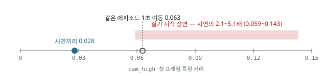

연구 관제실
공개된 276개 기록 기준 · 갱신 —지금 손볼 것 세션이 기다리는 것
답을 기다리는 것 프로젝트를 가로질러
작업 중 세션 2시간 안에 소식을 보낸 것
TrocarBench
활성Najongs/TrocarBenchibomcom마지막 활동 —데이터셋 v1(상태 마스터, render OFF) 2,000 에피소드 생성·계약 검사 완료. 비공개 HF 데이터셋에 같은 폴더 구조로 올라가 있다.
3포트 유리체절제술 안구 씬에서 로봇(Meca500)이 트로카 캐뉼라로 기구를 넣고(진입·조준·유지·안구 회전 추종) 조명을 보조하는 과제를 다루는 MuJoCo 시뮬 벤치마크. VLANeXt2 의 트로카 씬에서 갈라져 나왔다 — 정책을 학습하는 레포가 아니라 씬·스크립트 교사·데이터 계약·위험 감시자를 만드는 레포다.
그림
그림 0장 — 누르면 크게안 끝난 사례
해결 아님 — 미해결·부분 답·우회됨·원인 판정| 사례 | 문제 · 핵심 질문 | 상태 | 그림 | 갱신 |
|---|---|---|---|---|
| C15 | 시연 기록이 정책에 답을 흘린다 — 관측과 행동의 한 스텝 어긋남 · 특권 정보 누설 · 에피소드 단독 재생성 불가 시연 기록의 어떤 결함이 정책에 답을 흘리고, 학습 전에 어떻게 잡나 | ▲ 부분 답 | 2026-10-20 |
열린 질문
0건 중 많이 엮인 것- 열린 질문이 없습니다
머신
이 프로젝트가 도는 곳VLANeXt2
활성Najongs/TrocarBenchNajongs/VLANeXt25950xibomcom마지막 활동 —증류한 정책의 정렬 정밀도가 1.6~2.9mm 에서 더 안 내려간다 — 데이터 조성을 바꾸면 교정·정착·각도 사이에서 배분만 옮겨 간다 — 최신 사례 C12
VLANeXt의 후속 세대이자 정리·이관본이다. 별개 연구가 아니다. 완결된 1세대 정렬(fine-align) 논문을 품은 채, 태스크를 end-to-end 단일 VLA (접근 → 정렬 → 삽입 → 유지)로 확장하고 RL 파인튜닝까지 밀고 있다.
그림
그림 0장 — 누르면 크게안 끝난 사례
해결 아님 — 미해결·부분 답·우회됨·원인 판정| 사례 | 문제 · 핵심 질문 | 상태 | 그림 | 갱신 |
|---|---|---|---|---|
| C12 | 증류한 정책의 정렬 정밀도가 1.6~2.9mm 에서 더 안 내려간다 — 데이터 조성을 바꾸면 교정·정착·각도 사이에서 배분만 옮겨 간다 정밀도 바닥은 관측 해상도(비전 토큰) 문제인가 데이터·학습 목표 문제인가 | ▲ 부분 답 | 2026-10-31 | |
| C13 | 시뮬 평가가 거짓 성공을 센다 — 종료 조건·게이트·지표가 정렬·삽입 실력을 부풀리거나 가린다 삽입·정렬에서 무엇을 성공이라 불러야 하나, 그 지표가 자기충족이 아님을 어떻게 보이나 | ▲ 부분 답 | 2026-10-28 | |
| C14 | 전문가 시연기가 「되는 자리」만 시연한다 — 특이점 오진·도달 불가·조용한 설정 누락이 데이터 분포를 좁힌다 시연이 다양한 배치를 덮지 못하는 원인은 로봇 기구학인가 장면 기하인가 시연기 알고리즘인가, 그리고 데이터 생성의 정확성은 어떻게 검사하나 | ◆ 원인 판정 | 2026-10-28 | |
| C11 | 풀태스크 정책이 트로카를 스치고 지나간다 — 폐루프 정렬을 잡아두지 못한다 정렬을 유지하지 못하는 것은 데이터 문제인가 학습 목표 문제인가, 교사 증류가 그것을 고치나 | ▲ 부분 답 | 2026-07-23 |
열린 질문
1건 중 많이 엮인 것머신
이 프로젝트가 도는 곳claude-dotfiles
활성Najongs/claude-dotfiles5950xDGX_1Trossen_PC1hangangibomcomsandia마지막 활동 —2026-10-30~31 에 전문가 팀(상시 에이전트 + 프로젝트별로 붙이는 역할 13개, team.py·teams.json)과 관제실 연동(status_setup.py 수집 타이머 · vault_pull.py · 도구 활용도 tool_usage.py → status 브랜치 usage/<머신>.json)을 넣었다.
여러 머신의 Claude Code 설정·규칙·메모리·전문가 팀·관제실 연동을 한 레포로 맞추는 프로젝트. 각 머신은 세션에서 /sync 한 번으로 레포 상태를 받아 적용한다. 세션 규칙(common/CLAUDE.md)과 받은편지함 훅이 여기서 전 머신으로 간다.
그림
그림 0장 — 누르면 크게안 끝난 사례
해결 아님 — 미해결·부분 답·우회됨·원인 판정| 사례 | 문제 · 핵심 질문 | 상태 | 그림 | 갱신 |
|---|---|---|---|---|
| 안 끝난 사례가 없습니다 | ||||
열린 질문
0건 중 많이 엮인 것- 열린 질문이 없습니다
머신
이 프로젝트가 도는 곳연구_관제실
활성Najongs/knowledge-vaultNajongs/research_vault5950xDGX_1ibomcom마지막 활동 —사이트는 한 파일 앱이다 — 왼쪽 프로젝트 목록 · 가운데 홈/관제실/사례/현황/그래프 · 오른쪽 볼트 규모. 사례집은 색인 한 장이고 사례를 누르면 그 사례만 열린다 (2026-10-31).
연구 기록 볼트(research_vault)와 그 공개 사이트 「연구 관제실」을 만들고 운영하는 프로젝트. 세션들이 받은편지함에 보고·질문을 올리고 소유자가 사이트에서 하루 한 번 모아 답하는 순환이 핵심이다.
그림
그림 0장 — 누르면 크게안 끝난 사례
해결 아님 — 미해결·부분 답·우회됨·원인 판정| 사례 | 문제 · 핵심 질문 | 상태 | 그림 | 갱신 |
|---|---|---|---|---|
| 안 끝난 사례가 없습니다 | ||||
열린 질문
0건 중 많이 엮인 것- 열린 질문이 없습니다
머신
이 프로젝트가 도는 곳VLA_research
활성Najongs/TrocarBenchNajongs/VLA_research5950xibomcom마지막 활동 —Stage A(측정 가능성) 완료. 평가는 결정적, 작동점 S=30k,
LLM·VLM 학습 노하우(warmup·LR·스케줄·배치)가 VLA에서도 통하는지를 직접 실험으로 검증한다. 차량은 VLA-Adapter(0.5B, OpenVLA/prismatic 계열) + LIBERO. 측정 규율(사전 등록·3종 판정·감사)은 선행 트랙 [비공개](데이터 품질 실험, robomimic BC-RNN)에서 승계했다.
그림
그림 0장 — 누르면 크게안 끝난 사례
해결 아님 — 미해결·부분 답·우회됨·원인 판정| 사례 | 문제 · 핵심 질문 | 상태 | 그림 | 갱신 |
|---|---|---|---|---|
| C09 | 정책이 지시문을 안 쓰고 장면만 보고 행동한다 — 언어 접지(language grounding) 실패 지시문을 안 쓰는 것은 언어 표현 문제인가 학습 신호 문제인가, 외부 접지로 우회되나 | ▲ 부분 답 | 2026-10-29 | |
| C10 | 긴 과제가 실패했을 때 어느 구성요소 탓인지 가르지 못한다 — 계층형 구성요소 진단 Long 실패의 몫을 구성요소별로 나눌 수 있나, 어느 구성요소를 고치는 것이 가장 싸게 듣나 | ▲ 부분 답 | 2026-10-29 | |
| C16 | 완료·위험을 따로 판정하는 감시자(monitor)를 만들 수 있나 — 정책과 분리된 판정기의 신뢰도 정책과 분리된 판정기가 완료·실패·위험을 믿을 만하게 가르나 | ▲ 부분 답 | 2026-10-21 | |
| C07 | 긴 과제 스위트(LIBERO-Long) 성공률이 .89대 평원에 머문다 — 레버 하나로는 「둘 다 .90」을 넘지 못한다 Long이 안 오르는 것은 용량·학습량 문제인가 레시피 문제인가, 그리고 어느 레버가 듣나 | ▲ 부분 답 | 2026-10-17 | |
| C08 | 이어 학습하면 이전 스위트를 잊는다 — 재생 비율이 손잡이다 망각은 표현이 지워진 것인가 출력 쪽이 덮인 것인가, 그리고 최소 재생 비율은 얼마인가 | ▲ 부분 답 | 2026-10-15 | |
| C06 | 같은 레시피로 8런을 돌리면 일부만 성공률을 올린다 — 처음부터 학습하는 VLA의 이륙 복권 이륙이 갈리는 것은 비결정성(복권)인가 레시피(warmup·학습률)인가 | ▲ 부분 답 | 2026-10-01 |
열린 질문
2건 중 많이 엮인 것머신
이 프로젝트가 도는 곳ACT_Trossen
활성[비공개]/trossen-ai-simulationDGX_1Trossen_PC1ibomcom마지막 활동 —학습은 돌 만큼 돌았고, 아무것도 평가되지 않았다. 다음 한 걸음은 새 런이 아니라 eval이다.

실험실 조작 태스크(시험관·비커·냉장고)를 ACT로 학습한다. 목표는 실로봇 eval이고, 지금 걸려 있는 질문은 "다른 환경 데이터를 섞으면 환경 변화에 강해지는가" 다.
이 레포는 ibomcom_Server·5950x_Server에 없다 — 사본이 하나뿐이라는 뜻이다. → 머신별 체크아웃 · 🔴 백업 상태
공용 레포다 — main에 직접 push하지 마라 원격이 [비공개] 조직 소유이고 최근 커밋 저자는 [비공개]이다. 브랜치 규칙은 feature/#<이슈번호>-<주제>. 볼트의 Najongs/nayohan 계정 이야기는 여기 해당 없음.
그림
그림 1장 — 누르면 크게안 끝난 사례
해결 아님 — 미해결·부분 답·우회됨·원인 판정| 사례 | 문제 · 핵심 질문 | 상태 | 그림 | 갱신 |
|---|---|---|---|---|
| C01 | 이동 단계 끝에서 정책이 멈추지 못하고 더 돈다 | ▲ 우회됨 | 2026-10-29 | |
| C04 | 여러 단계를 한 모델로 묶을 것인가, 단계 전용(stage expert) 모델을 둘 것인가 묶음의 이득은 어디서 오고 언제 손해인가 | ✖ 미해결 | 2026-10-20 | |
| C02 | 로봇이 몇 cm 어긋나 서 있으면 튜브를 못 잡는다 — 정책이 영상으로 자리를 보정하지 않는다 ACT 가 몇 cm 를 못 넘기는 것은 OOD 인가, 일반화 부족인가 | ✖ 미해결 | ▣ | 2026-10-19 |
| C05 | 다른 현장 데이터를 섞으면 환경 변화에 강해지는가 「환경 변화」 중 무엇이 혼합으로 강해지고 무엇은 안 강해지나 | ▲ 부분 답 | 2026-10-15 | |
| C03 | 정지한 시작 자세에서 첫 동작을 내지 못한다 시연의 시간 구조(기다림)를 정책이 어떻게 다뤄야 하나 | ◆ 원인 판정 | 2026-10-08 |
열린 질문
3건 중 많이 엮인 것머신
이 프로젝트가 도는 곳Go1
진행중https://github.com/Najongs/Go1DGX_1마지막 활동 —현재 지점이 아직 안 적혔다
실기 Unitree Go1 Edu 를 IoR 의 이동 지도 로봇으로 쓴다. 윗면 Velodyne VLP-16 으로 층의 기하 기준 지도를 만들고, 알바봇 카메라 지도를 그 위에 위치·방향·축척까지 맞춘다 (CLM-20261016-go1-lidar-map-robot-role-34p8, IoR D-75). 9-14 의 「클론만 있고 아무 작업이 없다」 는 10-15~16 실기 작업으로 끝났다.
그림
그림 0장 — 누르면 크게안 끝난 사례
해결 아님 — 미해결·부분 답·우회됨·원인 판정| 사례 | 문제 · 핵심 질문 | 상태 | 그림 | 갱신 |
|---|---|---|---|---|
| 안 끝난 사례가 없습니다 | ||||
열린 질문
1건 중 많이 엮인 것머신
이 프로젝트가 도는 곳Internet_of_Robot
진행중https://github.com/Najongs/Internet_of_Robotibomcom마지막 활동 —알바봇 미니 PC 에서 최소 러너(clients/ior_robot.py)가 nohup 으로 돌며 30초마다 heartbeat 를 보낸다. 재부팅 생존은.
이종 로봇들(Reachy 2019 · Albabot 서빙로봇 · Go1 · NAO)을 한 서버에 물려 지식을 모아 나누는 허브를 만든다. IoR 은 로봇을 조종하지 않는다 — 무엇을 할지는 로봇 자신의 모델이 정하고, IoR 은 지식을 주고받게 하며 사람에게 질문 태그로 묻는다 ([비공개]).
이 볼트와의 관계: 구조만 빌린다(질문·주장·근거·출처 노드, append-only, supersedes). IoR 이 쌓는 지식(공간 이름·사람·규칙)은 여기로 오지 않는다(IoR D-43·D-6). 여기에는 만들면서 알아낸 판정만 온다 — 출처 노드 [비공개].
그림
그림 0장 — 누르면 크게안 끝난 사례
해결 아님 — 미해결·부분 답·우회됨·원인 판정| 사례 | 문제 · 핵심 질문 | 상태 | 그림 | 갱신 |
|---|---|---|---|---|
| 안 끝난 사례가 없습니다 | ||||
열린 질문
0건 중 많이 엮인 것- 열린 질문이 없습니다
머신
이 프로젝트가 도는 곳Albabot
▲ 보류DGX_1마지막 활동 —현재 지점이 아직 안 적혔다
[비공개](Rovitek) Albabot 로봇 계열의 ROS Melodic 소스 아카이브(모델 4종 + AD1 통합). 2020년 미니 PC([비공개]) 워크스페이스들을 소스만 모았고, 2026-09에 실기 카메라·주행·RGB-D 매핑 1차 시험까지 진행했다. 실기는 미니 PC에 붙어 있고 개발 PC(DGX)에서 역터널(:2223)로 접속한다.
그림
그림 0장 — 누르면 크게안 끝난 사례
해결 아님 — 미해결·부분 답·우회됨·원인 판정| 사례 | 문제 · 핵심 질문 | 상태 | 그림 | 갱신 |
|---|---|---|---|---|
| 안 끝난 사례가 없습니다 | ||||
열린 질문
1건 중 많이 엮인 것머신
이 프로젝트가 도는 곳RPS_game
완료DGX_1마지막 활동 —현재 지점이 아직 안 적혔다
라즈베리파이 5의 카메라를 상대로 가위바위보를 한다. MediaPipe 손 랜드마크로 제스처를 분류하고(Picamera2 구동), MJPEG 스트림 + 상태 폴링 웹 UI 를 Cloudflare quick tunnel 로 공개 인터넷에 중계한다. OnLab과 같은 MediaPipe 게임 계열이지만 별개 프로젝트다.
그림
그림 0장 — 누르면 크게안 끝난 사례
해결 아님 — 미해결·부분 답·우회됨·원인 판정| 사례 | 문제 · 핵심 질문 | 상태 | 그림 | 갱신 |
|---|---|---|---|---|
| 안 끝난 사례가 없습니다 | ||||
열린 질문
0건 중 많이 엮인 것- 열린 질문이 없습니다
머신
이 프로젝트가 도는 곳Trossen_Foundation_52DS
활성[비공개]/trossen-ai-simulationDGX_1마지막 활동 —1단계(증강 없음) 190,000 step 에서 OOM 으로 멈췄고, 마지막 체크포인트 190,000 에서
SmolVLA_VLAb가 "모델을 바꾸면"이라면, 이쪽은 "데이터를 다 모으면"이다. GIST 배포본 · 자체 수집분 · 허브 공개 데이터 52개를 한 SmolVLA 정책에 넣는다. 다른 환경 데이터를 섞으면 환경 변화에 강해지는가를 단일 태스크 2개가 아니라 여러 랩 규모에서 치는 시도다.
그림
그림 0장 — 누르면 크게안 끝난 사례
해결 아님 — 미해결·부분 답·우회됨·원인 판정| 사례 | 문제 · 핵심 질문 | 상태 | 그림 | 갱신 |
|---|---|---|---|---|
| 안 끝난 사례가 없습니다 | ||||
열린 질문
2건 중 많이 엮인 것머신
이 프로젝트가 도는 곳reachy-2019
활성DGX_1마지막 활동 —현재 지점이 아직 안 적혔다
Pollen Robotics Reachy 2019를 음성으로 대화하고, 카메라로 보고, 자연어로 팔·머리를 움직이는 시스템으로 확장. KIRO 수도권센터 복도에 무인으로 상주하며 지나가는 사람과 상호작용해 데이터를 쌓는다. Pi 4가 로봇을 돌리고 DGX_1이 LLM 브로커다.
그림
그림 0장 — 누르면 크게안 끝난 사례
해결 아님 — 미해결·부분 답·우회됨·원인 판정| 사례 | 문제 · 핵심 질문 | 상태 | 그림 | 갱신 |
|---|---|---|---|---|
| 안 끝난 사례가 없습니다 | ||||
열린 질문
0건 중 많이 엮인 것- 열린 질문이 없습니다
머신
이 프로젝트가 도는 곳DINObotPose3_레포
보관5950x마지막 활동 —현재 지점이 아직 안 적혔다
DIP_ROBOTPOSE와 같은 연구의 다른 체크아웃이다. 별개 프로젝트가 아니다. 원격도 따로다: Najongs/DINObotPose3 vs Najongs/DIP_ROBOTPOSE.
모노레포 쪽(DIP_ROBOTPOSE, 2.4G)은 코드·문서만 있고 datasets/ 심볼릭 링크가 전부 dangling이다. 실행하려면 여기의 데이터가 필요하다.
그림
그림 0장 — 누르면 크게안 끝난 사례
해결 아님 — 미해결·부분 답·우회됨·원인 판정| 사례 | 문제 · 핵심 질문 | 상태 | 그림 | 갱신 |
|---|---|---|---|---|
| 안 끝난 사례가 없습니다 | ||||
열린 질문
0건 중 많이 엮인 것- 열린 질문이 없습니다
머신
이 프로젝트가 도는 곳DIP_ROBOTPOSE
활성5950xibomcom마지막 활동 —현재 지점이 아직 안 적혔다
단안 RGB 한 장에서 로봇 팔의 6D 카메라-로봇 포즈 (R, t) 와 관절각 θ를 동시에 추정한다. frozen DINOv3 ViT-B/16으로 2D 키포인트를 검출 → 관절각/회전 head 예측을 운동학 솔버 (cov-PnP + 재투영 정제)에 투입 → nvdiffrast + SAM 실루엣 render-and-compare로 최종 정제. 데이터 수집(ArUco 캘리브)부터 학습·응용(로봇-사람 충돌 위험)까지 한 흐름으로 묶은 모노레포다.
그림
그림 0장 — 누르면 크게안 끝난 사례
해결 아님 — 미해결·부분 답·우회됨·원인 판정| 사례 | 문제 · 핵심 질문 | 상태 | 그림 | 갱신 |
|---|---|---|---|---|
| 안 끝난 사례가 없습니다 | ||||
열린 질문
0건 중 많이 엮인 것- 열린 질문이 없습니다
머신
이 프로젝트가 도는 곳DIP_release
활성ibomcom마지막 활동 —현재 지점이 아직 안 적혔다
DIP_ROBOTPOSE에서 파생된 깨끗한 자체 완결 재현 저장소다. 별개 연구가 아니다. 모노레포가 연구 원장이라면 이쪽은 논문의 모든 수치를 실제로 만들어내는 실행체다. README.md:7 — "This repository reproduces every measured number in the paper."
더 보기
이름이 셋이다 — 헷갈리지 말 것 볼트 노트명 DIP_release · ibomcom 로컬 경로 /home/najo/NAS/DIP_release/dinobotpose · GitHub 저장소 Najongs/DINObotPose. 앞의 둘은 그대로이고 GitHub 이름만 바뀌었다 (2026-09-15, DIP_release → DINObotPose). 옛 v1 세대 저장소는 DINObotPose-v1 로 밀렸다. 경위는 [비공개].
배포 설정의 유일 authority DIP_ROBOTPOSE의 docs/dinobotpose3/FINAL_MODEL.md:3-6이 직접 선언한다 — "정본 구현은 공개용 저장소 /home/najo/NAS/DIP_release/dinobotpose의 configs/deployed.yaml + scripts/eval.py이며 … 배포 설정의 유일 authority."
논문 표 1의 82.7은 이 저장소를 돌려 재측정된 값이다. "공개 저장소에서 재측정했다"는 사실 자체가 검증으로 쓰인다 — 재현 경로와 측정 경로가 같다.
모노레포에 데이터를 의존한다 — 독립적이지 않다 학습 명령이 --train-dir /home/najo/NAS/DIP/3_pose_models/DINObotPose3/Dataset/...를 가리킨다. DIP가 없으면 학습이 돌지 않는다. 배포·평가는 자체 완결이지만 학습은 아니다.
그림
그림 0장 — 누르면 크게안 끝난 사례
해결 아님 — 미해결·부분 답·우회됨·원인 판정| 사례 | 문제 · 핵심 질문 | 상태 | 그림 | 갱신 |
|---|---|---|---|---|
| 안 끝난 사례가 없습니다 | ||||
열린 질문
0건 중 많이 엮인 것- 열린 질문이 없습니다
머신
이 프로젝트가 도는 곳Insertion_VLA_Sim2
▲ 보류5950xibomcom마지막 활동 —현재 지점이 아직 안 적혔다
VLA_니들삽입_계보 sim 계보의 최신 세대. Meca500 + 아이팬텀 니들 삽입의 MuJoCo 시뮬 학습.
그림
그림 0장 — 누르면 크게안 끝난 사례
해결 아님 — 미해결·부분 답·우회됨·원인 판정| 사례 | 문제 · 핵심 질문 | 상태 | 그림 | 갱신 |
|---|---|---|---|---|
| 안 끝난 사례가 없습니다 | ||||
열린 질문
0건 중 많이 엮인 것- 열린 질문이 없습니다
머신
이 프로젝트가 도는 곳Lab_studies
▲ 보류ibomcom마지막 활동 —현재 지점이 아직 안 적혔다
서로 무관한 두 연구가 한 폴더에 있다. 로봇·VLA 계열과 별개다.
그림
그림 0장 — 누르면 크게안 끝난 사례
해결 아님 — 미해결·부분 답·우회됨·원인 판정| 사례 | 문제 · 핵심 질문 | 상태 | 그림 | 갱신 |
|---|---|---|---|---|
| 안 끝난 사례가 없습니다 | ||||
열린 질문
1건 중 많이 엮인 것머신
이 프로젝트가 도는 곳OnLab
완료ibomcom마지막 활동 —현재 지점이 아직 안 적혔다
2026-08-27 정정 — 이전 [추정]이 틀렸다 이 노트는 원래 "[추정] 키오스크 환경 포즈 추정, DIP_ROBOTPOSE 계열 응용"이라 적혀 있었다. 틀렸다. 이것은 MediaPipe 인체 자세추정 기반 키오스크 게임 앱이고 로봇 포즈와 무관하다. 공통점은 "pose"라는 단어뿐이다.
CLAUDE.md:3-4: "OnLab — MediaPipe 자세추정 기반 키오스크 AI 체험 게임 앱. 카메라로 33키포인트 골격을 추정해 여러 미니게임을 제공"
README.md:1-5: "카메라로 사람의 자세를 추정(스켈레톤)해 여러 게임을 제공하는 키오스크 앱. 군중 속에서 주 대상 1명을 고정 추적"
그림
그림 0장 — 누르면 크게안 끝난 사례
해결 아님 — 미해결·부분 답·우회됨·원인 판정| 사례 | 문제 · 핵심 질문 | 상태 | 그림 | 갱신 |
|---|---|---|---|---|
| 안 끝난 사례가 없습니다 | ||||
열린 질문
1건 중 많이 엮인 것머신
이 프로젝트가 도는 곳SmolVLA_VLAb
활성[비공개]/trossen-ai-simulationDGX_1마지막 활동 —현재 지점이 아직 안 적혔다
같은 데이터·같은 비율로 모델만 바꾼 통제 실험. ACT의 환경 일반화 약점이 "시각 인코더를 4만 프레임으로 처음부터 학습하는 데서 온다"는 가설을 친다. SmolVLA는 웹 사전학습 VLM을 동결한 채 액션 익스퍼트(100M)만 학습하므로 시점·배경 불변 특징을 이미 갖고 시작하고, task 문장도 입력으로 받는다.
그림
그림 0장 — 누르면 크게안 끝난 사례
해결 아님 — 미해결·부분 답·우회됨·원인 판정| 사례 | 문제 · 핵심 질문 | 상태 | 그림 | 갱신 |
|---|---|---|---|---|
| 안 끝난 사례가 없습니다 | ||||
열린 질문
0건 중 많이 엮인 것- 열린 질문이 없습니다
머신
이 프로젝트가 도는 곳VLANeXt
▲ 대기5950xibomcom마지막 활동 —논문 최종본은 Abstract(국/영) → Introduction → Working Principle → System Design →
안과 미세수술(유리체 절제술)의 수술 전 준비 단계에서, 마커·캘리브레이션 없이 수술 바늘을 안구 트로카 입구 축에 자율 정렬시키는 VLA 파이프라인. 동결 Qwen3.5-VL(2B) 백본 + Flow Matching 디퓨전 트랜스포머 행동 디코더가 단일 RGB + 고정 지시문 + TCP 포즈 이력으로 6DoF 델타 행동을 출력한다. 바늘 끝 1D 광섬유 센서(OCT+FPI)는 모델 입력이 아니라 분리된 하드웨어 안전 게이트다. 실제 삽입(insertion)은 의도적으로 범위 밖.
그림
그림 0장 — 누르면 크게안 끝난 사례
해결 아님 — 미해결·부분 답·우회됨·원인 판정| 사례 | 문제 · 핵심 질문 | 상태 | 그림 | 갱신 |
|---|---|---|---|---|
| 안 끝난 사례가 없습니다 | ||||
열린 질문
1건 중 많이 엮인 것머신
이 프로젝트가 도는 곳VLA_니들삽입_계보
▲ 보류ibomcom마지막 활동 —현재 지점이 아직 안 적혔다
단일 레포가 아니라 계보별로 정리된 저장소 모음이다. 루트에 .git이 없다. VLANeXt가 "실제 삽입은 의도적으로 범위 밖"이라고 선을 그은 바로 그 삽입 태스크의 선행 연구다.
README.md 원문: "Meca500 R3 로봇 + 아이팬텀(eye phantom) 니들 삽입 태스크를 위한 VLA 모델 연구 저장소 모음. 2026-07-03에 계보별로 구조를 재정리함."
이 README는 Claude Code 세션이 정리하며 쓴 것이다 README.md:2에 ## claude --resume ada3a07e-... 세션 ID가 남아 있다. 계보 표·삭제 목록·후속 과제가 그 세션의 산출물이다.
그림
그림 0장 — 누르면 크게안 끝난 사례
해결 아님 — 미해결·부분 답·우회됨·원인 판정| 사례 | 문제 · 핵심 질문 | 상태 | 그림 | 갱신 |
|---|---|---|---|---|
| 안 끝난 사례가 없습니다 | ||||
열린 질문
1건 중 많이 엮인 것머신
이 프로젝트가 도는 곳광섬유센서_EFPI_OCT
▲ 보류ibomcom마지막 활동 —현재 지점이 아직 안 적혔다
VLANeXt가 "바늘 끝 1D 광섬유 센서(OCT+FPI) — 분리된 하드웨어 안전 게이트"라고 부른 바로 그 센서의 신호처리 코드다. 폴더 이름(GC)만으로는 알 수 없다.
그림
그림 0장 — 누르면 크게안 끝난 사례
해결 아님 — 미해결·부분 답·우회됨·원인 판정| 사례 | 문제 · 핵심 질문 | 상태 | 그림 | 갱신 |
|---|---|---|---|---|
| 안 끝난 사례가 없습니다 | ||||
열린 질문
1건 중 많이 엮인 것머신
이 프로젝트가 도는 곳관제실
세션·프로젝트 — 보고를 읽고 다음 수를 정한다문제 사례집
증상 → 가설·시도·결과 → 연구 질문과 답 → 실험 설계새 모델·새 실험을 올리기 전에 상태가 「해결」이 아닌 사례의 연구 질문과 ❌ 행(다시 하지 마라)부터 본다. 근거 꼬리를 누르면 지식 그래프의 해당 기록이 열린다.
| 사례 | 문제 | 상태 | 머신 | 그림 | 갱신 |
|---|---|---|---|---|---|
| ACT_Trossen 5건 | |||||
| C01 | 이동 단계 끝에서 정책이 멈추지 못하고 더 돈다 | ▲ 우회됨 | Trossen_PC1DGX_1 | 2026-10-29 | |
| C02 | 로봇이 몇 cm 어긋나 서 있으면 튜브를 못 잡는다 | ✖ 미해결 | Trossen_PC1ibomcom | ▣ | 2026-10-19 |
| C03 | 정지한 시작 자세에서 첫 동작을 내지 못한다 | ◆ 원인 판정 | Trossen_PC1DGX_1+1 | 2026-10-08 | |
| C04 | 여러 단계를 한 모델로 묶을 것인가, 단계 전용(stage expert) 모델을 둘 것인가 | ✖ 미해결 | Trossen_PC1ibomcom | 2026-10-20 | |
| C05 | 다른 현장 데이터를 섞으면 환경 변화에 강해지는가 | ▲ 부분 답 | Trossen_PC1DGX_1+1 | 2026-10-15 | |
| VLA_research 6건 | |||||
| C06 | 같은 레시피로 8런을 돌리면 일부만 성공률을 올린다 | ▲ 부분 답 | ibomcom5950x | 2026-10-01 | |
| C07 | 긴 과제 스위트(LIBERO-Long) 성공률이 .89대 평원에 머문다 | ▲ 부분 답 | ibomcom5950x | 2026-10-17 | |
| C08 | 이어 학습하면 이전 스위트를 잊는다 | ▲ 부분 답 | ibomcom5950x | 2026-10-15 | |
| C09 | 정책이 지시문을 안 쓰고 장면만 보고 행동한다 | ▲ 부분 답 | ibomcom5950x | 2026-10-29 | |
| C10 | 긴 과제가 실패했을 때 어느 구성요소 탓인지 가르지 못한다 | ▲ 부분 답 | ibomcom | 2026-10-29 | |
| C16 | 완료·위험을 따로 판정하는 감시자(monitor)를 만들 수 있나 | ▲ 부분 답 | 5950xibomcom | 2026-10-21 | |
| VLANeXt2 4건 | |||||
| C11 | 풀태스크 정책이 트로카를 스치고 지나간다 | ▲ 부분 답 | ibomcom5950x | 2026-07-23 | |
| C12 | 증류한 정책의 정렬 정밀도가 1.6~2.9mm 에서 더 안 내려간다 | ▲ 부분 답 | ibomcom | 2026-10-31 | |
| C13 | 시뮬 평가가 거짓 성공을 센다 | ▲ 부분 답 | ibomcom5950x | 2026-10-28 | |
| C14 | 전문가 시연기가 「되는 자리」만 시연한다 | ◆ 원인 판정 | ibomcom | 2026-10-28 | |
| TrocarBench 1건 | |||||
| C15 | 시연 기록이 정책에 답을 흘린다 | ▲ 부분 답 | ibomcom | 2026-10-20 | |
이동 단계 끝에서 정책이 멈추지 못하고 더 돈다
Trossen Mobile AI (SLATE 캐스터 베이스 + D405)
1. 문제 상황
- 증상: 정책이 목표 방향(시연 76~89°)을 지나 계속 돈다. ACT 청크 100 실기 9/9 실패(끝 θ +97~119°). SmolVLA 4종 0/5(끝 방향 203~339°).
- 어디서 보이나: 실기에서만. 시연 끝 프레임을 넣으면 회전 속도 ±0.001 로 멈추라고 낸다 — 오프라인 채점에는 안 잡힌다.
- 왜 막나: 체인(이동 → 집기)의 첫 단계라 이게 안 닫히면 뒤 단계를 실기에서 못 본다.
2. 가설 → 시도 → 결과
| # | 가설 | 시도 | 결과 | 판정 | 근거 | |
|---|---|---|---|---|---|---|
| ▲ | H1 | 재질의(re-query) 주기가 짧아 폐루프(closed-loop) 오차가 쌓인다 | exec 30 → 60 → 100 (3회씩) | 초과 회전 +15~19° → +5~9° 로 줄지만 남는다 | 부분 | vvze b5zt |
| ✖ | H2 | 베이스 상태 입력(누적 헤딩)이 없어 얼마나 돌았는지 모른다 | 누적 헤딩 0° → 160° 로 바꿔 재예측(re-prediction) | 예측 회전 1~7° 만 변화 | ❌ 상태 입력으로 못 고침 | b5zt |
| · | H3 | 베이스 속도가 0 으로 녹화된 180 에피소드가 「제자리」를 가르쳤다 | 그 에피소드 제외 재학습 | 오프라인 차이 없음, 실기 미측정 | 미판정 | 9pvq |
| ▲ | H4 | 실행 층에서 회전 예산으로 막는다 | 명령 적분 105° → 실측 기준 84° | 실측 기준이면 2회 멈춤. 청크 끝 전진 램프는 남음 | 부분 우회 | b5zt |
| ✖ | H5 | SmolVLA 는 bf16 갱신 소실로 덜 배웠다 | fp32 로 재학습 | 실패 꼴 그대로 | ❌ | h9gs gvbm |
| ✖ | H6 | VLM 동결·쿼리 토큰 부족 | VLM 언프리즈 · 쿼리 64 변형 | 이동 전부 0/5 | ❌ | gvbm |
| ✔ | H7 | 원인은 영상 — 시연에 없는 「더 돈 장면」「도착 장면」 | 모델 없이 재생한 회차의 영상만 넣어 재예측 | +8~14° 초과가 그대로 → 속도가 아니라 영상 | ✓ 진단 [개연] | b5zt |
| · | H8 | 도착 장면·회복 장면을 시연에 넣는다 | 「도착 회복 + 끝 3 s 정지」 추가 녹화 | 녹화는 했고 학습 결과 없음 | 진행 중 | b5zt |
행 1개 더
3. 지식화
- 원인 [개연]: 데이터 공백. 시연 100 에피소드는 전부 76~89° 만 돌아 「더 돈 장면」과 「도착해서 멈추는 장면」이 없다. 그래서 조금 더 돈 장면을 보면 남은 회전을 크게 잡고, 도착 장면에서 멈추라는 신호를 못 낸다.
- 모델 무관: ACT 와 SmolVLA 가 같은 꼴로 실패했다 (H5·H6). → 정책을 바꿔도 이 문제는 남는다.
- 실행 설정은 줄일 뿐 못 없앤다 (H1·H4). 상태 입력도 못 고친다 (H2).
- 우회는 실행기 쪽 (H9): 도착 개념이 없는 모방 정책에 도착은 밖에서 준다. 조건: 목표물이 보이는 거리(±45°·수십 cm).
- 덧붙인 논문: DAgger (arXiv:1011.0686) — 정책이 만든 분포에서 이탈 장면을 모아 교정(correction)하는 것이 이 공백의 교과서적 처방. H8 이 그 수동판이다. 본문 §2 미독.
4. 다음 방향 — 정책이 스스로 멈추게 하려면 (실험 설계)
공통 규약: task01 실기, 판정은 같은 날 시연 재생 도착값 기준 끝 |yaw| 오차(≤ 8°)와 도착 뒤 추가 회전량. 보정기(H9)는 끈 채 정책 단독 성능을 잰다. 조건당 10회·시드 2.
| # | 검증 가설 | 실험군 / 대조군 | 지표 | 판정 기준 | 비용 |
|---|---|---|---|---|---|
| E4 | H3 — 베이스 라벨 0 에피소드가 실기에 영향을 주나 (E1 전에 닫는다) | 제외 학습 / 포함 학습 (둘 다 이미 있음) | 추가 회전량 | 차 ≤ 시드폭이면 닫고 데이터는 그대로 둔다 | 실기 10회 |
| E1 | 도착·회복 장면 추가 녹화(H8)로 학습하면 정책이 스스로 멈춘다 | 추가 녹화 포함 / 기존 데이터, 같은 스텝 | 추가 회전량 · 끝 오차 | 추가 회전 < 10° 가 ≥ 7/10 (기존 0/9) | 학습 1런 |
| E2 | 실기 이탈 장면의 사람 교정(DAgger 식)이 E1 의 잔여를 줄인다 | E1 + 이탈 자리 교정 10 에피소드 / E1 | 같음 | +2/10 이상 | 교정 1시간 + 1런 |
| E3 | 목표물 상대 자세(랙 yaw·거리)를 명시 입력으로 주면 도착 장면 없이도 멈춘다 | 기존 데이터 + 상대 자세 입력 / 기존 | 같음 | E1 과 동등 이상 | 입력 배선 + 1런 |
순서 E4 → E1 → (E2 ∥ E3). E1 이 되면 보정기는 안전장치로만 남긴다. E1 이 안 되면 도착은 정책 밖(E3 또는 H9)에서 닫는 것이 구조다.
추가로 검증할 가설
- 과회전 크기가 재질의 주기와 독립인가 — E1 모델에서 e30/e100 비교. 독립이면 H1 은 완전히 닫힌다.
- 도착 장면 정지 길이가 멈춤 학습에 충분한가 — 추가 녹화의 끝 정지 1 s vs 3 s.
- 같은 데이터로 SmolVLA 를 학습하면 멈추나 — 모델 무관 판정의 직접 확인.
로봇이 몇 cm 어긋나 서 있으면 튜브를 못 잡는다
정책이 영상으로 자리를 보정하지 않는다
Trossen Mobile AI 양팔
1. 문제 상황
같은 모델이 어떤 날은 빈손, 어떤 날은 잡는다. 시연 재생으로 맞춘 자리에서는 왼손으로 집었고, 어긋난 자리에서는 빈손. 모델 없이 시연 명령을 그대로 재생해도 어긋난 자리에서는 양손 빈손 → 실패의 큰 몫은 배치였다.
2. 가설 → 시도 → 결과
| # | 가설 | 시도 | 결과 | 판정 | 근거 | |
|---|---|---|---|---|---|---|
| ✖ | H1 | 모델이 못 잡는다 | 레시피 바꿔 재학습 반복 | 자리를 맞추니 같은 모델이 잡음 — 배치 탓 | ❌ 가설 자체가 틀림 | hmk3 or7s |
| ✖ | H2 | 팔 상태 입력을 가끔 지우면 영상을 보게 된다 | 팔 상태 드롭아웃 학습 | 오프라인 영상 의존(image reliance) 0.16 → 0.37·0.45 로 오름. 실기는 치우친 자세에서 빈손 | ❌ 오프라인만 오름 | hmk3 |
| · | H3 | 관절 대신 손끝 상대 행동(relative action)이면 자리를 따라간다 | 상대 행동 학습 | 오프라인 R² 0.71 → 0.92. 실기 맞춘 자리 2회 양손 0. 옮긴 자리 시험 안 함 | 미판정 | hmk3 |
| · | H4 | 단계 전용 모델이 낫다 | 전용 모델 실기 | 양손 3/4·1/1, 11단계 묶음 0회 — 단 노출량(exposure) 11배 교락(confound) | 관측만 | 74g7 |
| ▲ | H5 | SmolVLA 는 사전학습(pretrained) 시각으로 보정한다 | 쿼리 64 변형 실기 | 양손 2/2 (한 번은 16회 재시도 끝) — 역시 맞춘 자리에서 | 부분 [개연] | gvbm |
| ✔ | H6 | 비교 전에 자리를 맞추면 된다 | 시연 재생으로 자리 찾아 바닥 표시 (3회 반복) | 그날 재생 도착값이 성공 기준이 됨 | ✓ 우회 | or7s |
3. 지식화
ACT 가 몇 cm 를 못 넘기는 것은 OOD 인가, 일반화 부족인가
- 답: OOD 다. 일반화를 시험할 재료 자체가 없었다 [개연].
- 시연 100 에피소드의 첫 프레임끼리 최근접 거리는 중앙 0.028 — 같은 에피소드가 1초 움직인 거리(0.063)보다 좁다. 시연은 자리 하나만 덮는다. 실기 시작 장면은 그보다 2.1~5.1배 떨어져 있다 (fw2w 사후 측정).
- 11회 첫 닫힘 손끝 x 가 시연 ±3 cm 안 — 정책은 「시연 자리의 자세」를 정확히 재현한다. 자리 편차를 본 적이 없으니 자리에 따라 행동을 바꿀 이유를 배우지 못했다.
- 그래서 H2(상태 드롭아웃으로 영상 의존을 올림)가 실기에서 안 먹었다: 영상을 더 보게 해도 영상 안에 자리 편차가 없으면 배울 것이 없다. 오프라인 지표만 오른 것이 그 증거다.
- 가르는 법 (다음에 같은 증상이 나면): ① 시연 첫 프레임 최근접 거리 분포 vs 실기 시작 장면 거리 — 실기가 분포 꼬리 밖이면 OOD. ② 시연 안 자리 편차(손끝·물체 위치의 표준편차)가 0 에 가까우면 일반화 부족이 아니라 데이터 설계 문제.
- 우회(H6)는 평가 절차이지 해법이 아니다 — 실기 비교 전에 자리를 맞춘다는 규범은 남기되, 그것으로 이 문제가 닫힌 것은 아니다.
- 「모델이 못 잡는다」(H1)로 읽고 레시피를 바꾸는 학습을 돌린 것이 10월 중순 비용의 큰 몫이었다.
덧붙인 논문 — 자리를 옮기지 않고 풀려면
| 논문 | 무엇을 말하나 | 읽은 범위 | 이 사례에 주는 것 |
|---|---|---|---|
| MimicGen (arXiv:2310.17596) | 사람 시연 ~200개를 물체 자세 기준으로 새 배치에 맞게 변환해 50K 시연을 합성(synthetic). 추가 사람 시연 수집과 맞먹는 효과 | 초록 | 시연 자리 편차를 합성으로 만드는 길 — 우리에게는 랙 자세(C01 의 n2s9 측정법)가 있으니 입력 조건이 갖춰져 있다 |
| R2RGen (arXiv:2510.08547) | 실기 포인트클라우드 관측-행동 쌍을 직접 증강(augmentation)해 공간 일반화 데이터를 만든다. 시뮬·렌더링 없음, 이동 조작에 적용 | 초록 | MimicGen 의 실기판. D405 depth 가 있어 적용 조건이 맞는다 |
| Equivariant Diffusion Policy (arXiv:2407.01812) | SO(2) 대칭을 정책에 넣어 적은 시연으로 공간 일반화. MimicGen 12과제에서 +21.9%p | 초록 | 데이터가 아니라 구조로 푸는 길 — 자리 편차를 「같은 행동의 회전·이동」으로 취급 |
| HG-DAgger (arXiv:1810.02890) | 정책이 가 본 상태에서 사람이 개입해 교정(correction) 라벨을 모은다. 불확실도 문턱으로 개입 시점을 정한다 | 초록 | 어긋난 자리에서 실패 장면 자체를 교정 데이터로 — C01 의 DAgger 방향과 같은 도구 |
4. 다음 방향 — 자리를 맞추지 않아도 잡게 하려면 (실험 설계)
공통 규약: 판정은 전부 옮긴 자리 홀드아웃(shifted-placement holdout) 으로만. 실기는 조건당 10회·시드 2, 자리는 바닥 표시 5곳(편차 범위 안)+3곳(범위 밖 ±8 cm). 오프라인 보조 지표는 「첫 닫힘 손끝 x 와 랙 위치의 상관 r」.
| # | 검증 가설 | 실험군 / 대조군 | 지표 | 판정 기준 | 비용 |
|---|---|---|---|---|---|
| E1 | 자리 편차가 있는 시연이면 옮긴 자리에서도 잡는다 | 랙 ±5 cm·±10° 무작위 30~50 에피소드로 학습 / 기존 단일 자리 데이터, 같은 에피소드 수 | 옮긴 자리 집기 성공률(실기) · r | 실기 ≥ 6/10 (대조군은 0/10 예상) · r > 0.7 | 수집 반나절 + 학습 1런 |
| E2 | 합성 변환(MimicGen 식)이 재수집을 대신한다 | 기존 단일 자리 시연을 랙 자세(C01 n2s9 측정)로 변환 / E1 | E1 과 같음 | E1 과의 차 ≤ 시드폭(seed spread) | 변환 코드 + 학습 1런 |
| E3 | 상대 행동(relative action) + 랙 상대 자세 입력이 편차 범위 밖까지 간다 | E1 데이터 + 상대 행동(±자세 입력) / E1 (관절 행동(joint-space action)) | 범위 안·밖 성공률 따로 | 범위 밖에서 E1 보다 높음 | 학습 2런 |
| E4 | 실패 자리의 사람 교정(HG-DAgger)이 E1 의 잔여 실패를 줄인다 | E1 모델이 실패한 자리에서 교정 10 에피소드 추가 학습 / E1 | 같은 자리 재시험 성공률 | +2/10 이상 | 교정 수집 1시간 + 학습 1런 |
| E5 | 등변 정책(equivariant policy)이 적은 편차 데이터로 같은 일반화를 낸다 | E1 데이터의 1/3 로 등변 정책(equivariant policy) / 같은 1/3 로 ACT | E1 과 같음 | ACT 1/3 보다 높고 E1 에 근접 | 구현 비용 큼 — E1~E4 뒤 |
순서는 E1 → (E2 ∥ E3) → E4 → E5. E1 이 안 되면 (자리 편차를 줘도 못 잡으면) 문제는 데이터가 아니라 표현이고, 그때 E3·E5 가 앞으로 온다.
추가로 검증할 가설
- 자리 편차가 양팔 협응(bimanual coordination)을 깨뜨리나 — 좌·우 손 실패율을 따로 센다.
- 편차 범위가 넓을수록 맞춘 자리 성능이 떨어지나 — E1 vs 대조군을 맞춘 자리에서도 비교.
- 상단·손목 카메라 중 어느 것이 자리 정보를 주나 — 영상 바꾸기 기울기(image-swap gradient)를 카메라별로.
그림: figs/C02-ood-distance.svg — 시연 첫 프레임 최근접 거리 vs 실기 시작 장면 거리. H4 교락 풀기는 C04 로.
정지한 시작 자세에서 첫 동작을 내지 못한다
Trossen Mobile AI 양팔
1. 문제 상황
실기에서 정지한 시작 프레임을 주면 모델이 아무 동작도 내지 않는다(M1·4라운드, t01·t03·t04·t05). 이미 움직이는 장면에서는 시연대로 따라간다. 유일한 실기 출발 성공은 청크 100 전문가(t05, exec 100). 사용자 관찰: 「exec 이 작으면 자세를 못 벗어난다」.
2. 가설 → 시도 → 결과
| # | 가설 | 시도 | 결과 | 판정 | 근거 | |
|---|---|---|---|---|---|---|
| ✖ | H1 | 원핫·진행도(progress)·장면 분포 같은 레시피 레버가 부족하다 | 레버를 바꿔 재학습 (10/08 하루) | 출발 그대로 | ❌ | 9zm2 |
| ✖ | H2 | 앞 정지 구간이 「기다림」을 가르치니 잘라 학습한다 (trim_idle) | 출발 10프레임 앞부터만 남김 | 기다림은 사라지나 t06·t11 첫 프레임 출발 붕괴(h100 비 0.05·0.32, 두 시드 같음) | ❌ 레시피 성질 [개연] | tzuf |
| ✔ | H3 | 끝 검출용 머물기 감독(hold supervision)이 출발을 깎는다 | boundary_hold·pad_hold 제거 | 시작 직전 p 0.3~0.8 → −0.05~0.26. 감독은 시작을 끝으로 읽게 했다 | ✓ 부분 원인 | rs9f |
| ✖ | H4 | 시간 앙상블(temporal ensembling)이 깬다 | 분석 | 매 질의가 같은 기다림을 내므로 못 깬다 | ❌ | 9zm2 |
| ✔ | H5 | 청크 30(1.43 s)이 시연의 시작 기다림(2~2.7 s)보다 짧다 | 시연 기다림 측정 + 청크 100 으로 학습 | 시연은 시작 뒤 중앙 39~56틱 정지 후 출발. 청크 100 이면 11단계 모델도 10단계 중 9가 100스텝 안에 시연만큼 간다(두 시드, 60K 중간 측정 같음) | ✓ 원인 | 9zm2 |
| · | H6 | 청크 100 의 대가 — 예측 청크 잔떨림 | 팔 12관절 3틱 중심 이동 평균 | 방향 바뀜 시연의 1.8~5배 → 시연 수준, L1·끝 자세 그대로. 실기 체감은 미확인 | 대가 처리 [개연] | q1gr |
3. 지식화
시연의 시간 구조(기다림)를 정책이 어떻게 다뤄야 하나
- 답: 상태만 보는 결정적 정책에는 「기다림」이 상태로 구분되지 않는다. 그 구간이 한 청크 안에 들어야만 배울 수 있다. 청크가 기다림보다 짧으면 정지 프레임의 정답이 「청크 내내 기다림」이고, 실행해도 입력이 안 바뀌어 영원히 멈춘다.
- 레시피 레버(H1)·시간 앙상블(H4)은 이 구조를 못 바꾼다. 잘라 내기(H2)는 기다림 대신 출발 분포를 깨뜨린다.
- 머물기 감독(H3)은 다른 축의 문제를 겹쳐 놓았다 — 「끝 검출」을 정책에 가르치려다 시작을 끝으로 읽게 했다. 끝 검출은 실행기 몫 (→ fw2w).
- 가르는 법: 「단계별 시연 정지 구간(틱) vs 학습 청크 길이(틱)」 표. 정지 > 청크 인 단계가 출발 실패 단계와 일치하면 이 사례다. t01 은 기다림 108틱이라 청크 100 으로도 못 담는다.
- 모델 무관 여부: 청크 정책 일반 [추정]. SmolVLA 청크 50(≈2.4 s)은 39~56틱과 겹친다 — 기다림이 50틱을 넘는 단계에서 같은 실패를 예측한다 (미측정).
덧붙인 논문
| 논문 | 무엇을 말하나 | 읽은 범위 | 이 사례에 주는 것 |
|---|---|---|---|
| ACT (arXiv:2304.13705) | 청크는 「시연 중간의 정지 같은 시간 상관 교란」을 다룬다 — 교란이 한 청크 안에 들 때. 선행 방법은 「어떤 상태에서 무한히 멈춘다」 | §I·§IV-A·§V-C·§VI-A | 같은 원리. 우리 측정이 「한 청크 안」의 조건을 숫자로 준다. k=200·400 에서 성능이 조금 떨어진다 — 청크를 키우는 상한 |
| Causal Confusion in IL (arXiv:1905.11979) | 행동 복제는 비인과적이라 「정보가 많을수록 나빠지는」 오식별이 생긴다. 분포 이동이 이를 키운다 | 초록 | 정지 장면의 정답이 입력이 아니라 시간에 달려 있는 것이 이 오식별의 한 꼴. 진행도·단계 번호(task one-hot)를 입력에 더하는 것이 왜 안 통했는지(H1·H3)의 원리 |
4. 다음 방향 — 정지 자세에서 출발하게 하려면 (실험 설계)
공통 규약: 정지 시작 프레임 실기, 단계 t01·t03·t04·t05·t06·t11, 조건당 5회. 지표는 첫 100틱 안 출발 여부와 출발까지 틱 수(시연 중앙 39~56틱과 대조).
| # | 검증 가설 | 실험군 / 대조군 | 지표 | 판정 기준 | 비용 |
|---|---|---|---|---|---|
| E1 | 청크 100 11단계 모델이 실기에서도 출발한다 (오프라인 두 시드의 실기 확인) | 청크 100 11단계 / 청크 30 M1 | 출발률 · 출발 틱 | t01 제외 ≥ 4/5 | 실기만 (모델 있음) |
| E2 | 수집 규약(시작 기다림 ≤ 1 s)이면 청크 30 도 출발한다 | 기다림 짧은 재수집으로 청크 30 / 기존 청크 30 | 같음 | ≥ 4/5 | 수집 + 1런 |
| E3 | t01(기다림 108틱)은 청크로 못 담고 수집으로만 풀린다 | E1 모델의 t01 / E2 데이터의 t01 | 같음 | E1 0/5 · E2 ≥ 4/5 | 위에 포함 |
| E4 | 3틱 평활(H6)이 실기 떨림을 줄이고 출발은 해치지 않는다 | 같은 모델 평활 켬 / 끔 | 방향 바뀜/s · 출발률 | 바뀜 ≤ 시연 × 1.5, 출발률 같음 | 실기 5회 |
순서 E1 → E4 → E2·E3. E1 이 안 되면 오프라인 h100 지표가 실기 출발을 대변하지 않는 것이고, 그때 E3 에서 쓰는 지표를 실기 프레임 재예측으로 바꾼다.
추가로 검증할 가설
- 청크 길이 vs 기다림 관계가 SmolVLA(청크 50)에서도 성립하나 — 기다림 > 50틱 단계만 실패하면 모델 무관이 확정된다.
- 청크 200 이 개루프화로 출발 뒤 성능을 깎나 — ACT 논문의 k=200·400 하락이 우리 과제에서도 나는지.
여러 단계를 한 모델로 묶을 것인가, 단계 전용(stage expert) 모델을 둘 것인가
Trossen Mobile AI 양팔
1. 문제 상황
배포 모델을 단계마다 둘지 하나로 묶을지 정해야 했다. 두 서버가 정반대 결론을 냈고(한쪽 「묶으면 이동이 손해」), 10월 중순 실기에서는 오프라인 판정(묶음 채택)과 반대로 단계 전용 모델만 튜브를 잡았다.
2. 가설 → 시도 → 결과
| # | 가설 | 시도 | 결과 | 판정 | 근거 | |
|---|---|---|---|---|---|---|
| ✔ | H1 | 두 서버의 반대 결론은 환경 차이다 | 네 지점을 자기 에피소드 수로 정렬 | 단조 — 이득은 자기 데이터가 적은 단계에만. 한 단계를 80 에피소드로 자르자 묶음 이득 3.8배 | ✓ 원인 | n03r |
| ✖ | H2 | 묶음이 이동에 손해다 | 60K 에서 채점 | 데이터 2.9배라 이동 노출 비중이 줄어 수렴이 늦을 뿐. 120K 에서 뒤집힌 칸 없음 | ❌ 60K 멈춤의 오판 | n03r |
| ✔ | H3 | 묶음이 조작에 이득이다 | 조작 세 단계 홀드아웃(holdout) | 팔 오차 27~60% 낮음 | ✓ (오프라인) | n03r |
| ✖ | H4 | 외부·다른 현장 데이터를 더 부으면 더 좋다 | 몫 없이 추가 | 단조로 나빠짐 — 우리 몫 20% 로 희석 (→ C05) | ❌ 조건 탓 | n03r fn1a |
| ✖ | H5 | 실기 집기에서도 묶음이 낫다 | 맞춘 자리 실기 | 단계 전용 양손 3/4·1/1, 11단계 묶음 0회. 재예측(re-prediction): 묶음은 왼손을 1~4 cm 높게 겨냥 | ❌ 실기 역전 [개연] | 74g7 |
| · | H6 | 전용이 나은 것은 구조 때문이다 | 교락 점검 | 단계당 노출량 약 11배·학습량·데이터·단계 번호(task one-hot) 입력이 함께 다름. 노출량 맞춘 3대3 비교는 안 돌림 | 미분리 | 74g7 |
| · | — | 반대 사례 | 다른 팀 이동 단계 전용 모델 | 실기 0/3, 순회전 +96~102° 로 시연 범위 밖 (→ C01) | 전용도 만능 아님 | 74g7 |
3. 지식화
묶음의 이득은 어디서 오고 언제 손해인가
- 답(오프라인): 이득은 자기 데이터 부족분의 대체다. 자기 에피소드가 약 140 을 넘으면 사라진다(회귀 대략치). 손해는 노출 희석 — 데이터가 2.9배라 같은 스텝에서 단계당 노출이 줄어 더 오래 학습해야 한다.
- 실기 역전(H5)은 아직 답이 아니다. 노출량 11배 차이를 빼면 「전용이라서」인지 「그 단계를 11배 더 봐서」인지 모른다. 묶음 모델(pooled model)의 1~4 cm 높은 겨냥은 재예측에서도 보이므로 모델 결함이지 폐루프(closed-loop) 증상은 아니다(E3 기준).
- 정책은 영상에서 그 단계의 타이밍을 읽는다 — 그래서 그 단계 장면 노출량이 레버다 (C03 와 같은 원리).
- 가르는 법: 단계별 자기 에피소드 수 × 묶음/전용 성능 표. 단조면 노출 문제, 아니면 간섭 문제.
덧붙인 논문
| 논문 | 무엇을 말하나 | 읽은 범위 | 이 사례에 주는 것 |
|---|---|---|---|
| Conservative Data Sharing (arXiv:2109.08128) | 다과제 오프라인 학습에서 데이터를 전부 공유하면 오히려 나빠질 수 있다 — 분포 이동이 커진다. 과제별 데이터 대비 「개선되는 데이터만」 골라 공유 | 초록 | 「묶으면 항상 좋다」가 아니라 무엇을 얼마나 섞나가 변수라는 틀. 우리 H1(부족한 단계만 이득)·H4(희석)와 같은 모양. 오프라인 RL 결과라 조건 차이 |
| robomimic (arXiv:2108.03298) | 학습 목표는 성공률의 대리라 체크포인트 선택이 어렵다 | §3 C4·부록 G | H2 — 60K 에서 멈춘 판정이 뒤집힌 것과 같은 함정 |
4. 다음 방향 — 묶음의 이득과 손해를 가르려면 (실험 설계)
공통 규약: 같은 데이터·같은 원핫 조건·같은 서버·같은 채점 하네스. 지표는 단계별 홀드아웃 팔 오차와 맞춘 자리 실기 집기 성공률(10회). 문턱은 시드폭(단독 0.007 · 다단계 0.0101).
| # | 검증 가설 | 실험군 / 대조군 | 지표 | 판정 기준 | 비용 |
|---|---|---|---|---|---|
| E1 | 실기 역전(H5)은 노출량 때문이다 | 묶음 + 집기 단계 몫을 샘플러로 11배 올린 N 스텝 / 전용 N 스텝 | 실기 집기 성공률 | 차 ≤ 2/10 이면 노출량. 전용이 여전히 ≥ 3/10 앞서면 구조(간섭) | 1런 + 실기 20회 |
| E2 | 단계 가중 샘플러가 묶음의 노출 희석을 없앤다 | 가중 묶음 / 균등 묶음, 같은 스텝 | 단계별 홀드아웃 오차 | 적은 단계 ≥ 10% 개선, 많은 단계 악화 ≤ 시드폭 | 1런 |
| E3 | 묶음 이득 소멸점(약 140 에피소드)이 맞다 | 자기 에피소드 60/100/140/200 으로 자른 4점 | 묶음 − 전용 차 | 140 근처에서 문턱 아래 | 4런 (15K 로 싸게) |
| E4 | 묶음 모델의 1~4 cm 높은 겨냥은 단계 간 간섭이다 | E1 모델 재예측 / 기존 묶음 재예측 | 재예측 손끝 z 편차 | E1 에서 사라지면 노출, 남으면 간섭 | 오프라인 |
순서 E4 (오프라인, 싸다) → E1 → E2 → E3. E1 에서 구조로 판정되면 배포는 단계 전용 + 체인 실행기로 바꾸고, 노출량으로 판정되면 11단계 묶음 + 가중 샘플러(E2)로 간다.
추가로 검증할 가설
- 간섭이 비슷한 자세의 조작 단계끼리만 나나 — 단계 쌍별 혼동 행렬.
- 120K 가 포화인가 — 90K·105K 채점 (지금 비어 있다).
- 단계 전용 이동 모델의 과회전(반대 사례)은 C01 과 같은 원인인가 — 재생 영상 재예측으로.
다른 현장 데이터를 섞으면 환경 변화에 강해지는가
Trossen Mobile AI 양팔 (우리 현장 + 다른 현장 같은 과제)
1. 문제 상황
ACT_Trossen 트랙의 뿌리 질문(th8r). 실험실 조작을 ACT 로 학습하는데 현장이 조금만 달라져도(조명·시점·자리) 실기가 무너진다. 다른 현장에서 모은 같은 과제 데이터가 있다 — 섞으면 강해지나, 아니면 우리 과제를 깎나.
2. 가설 → 시도 → 결과
| # | 가설 | 시도 | 결과 | 판정 | 근거 | |
|---|---|---|---|---|---|---|
| ✖ | H1 | 외부·다른 현장 데이터를 사전학습(pretrained)에 부으면 좋다 | 몫 없이 섞음 | 우리 몫 20% 로 희석, 자기 과제 단조 악화 | ❌ 조건 탓 | n03r |
| ✔ | H2 | 고정 몫(샘플러(weighted sampler) 비율)으로 섞으면 자기 과제를 안 깎는다 | 3 시드 혼합 vs 단독 | 우리 홀드아웃(holdout) 조작 통과 8·7·7 vs 7·8·7 — 같은 폭. 다른 현장 홀드아웃 8·8·8 vs 3~7 | ✓ | fn1a |
| ✔ | H3 | 혼합이 다른 장면의 출발을 연다 | 다른 현장 회전 출발 단계 둘 + 실기 | 단독 출발 0, 혼합은 시연 방향으로 출발. 실기: 단독 모델 이동 출발 실패 2/2 (39 s 동안 +1°) | ✓ [개연] | fn1a |
| · | H4 | 정규화(normalization) 통계를 몫 기준으로 | 통계 재집계 | 오프라인 차이 0 | 무관 | fn1a |
| ✖ | H5 | 색상 증강이 환경 차이를 메운다 | ColorJitter 계열 A/B (419 에피소드·30K) | 네 과제 모두 사전 등록 문턱 0.007 미만. SmolVLA 는 두 데이터셋 차이가 색이 아니라 카메라 시점이라 안 켬 | ❌ 닿지 않는 요인 | eqbn 9me6 xbod |
| ✖ | H6 | 혼합이 물체 자리를 영상으로 읽게 한다 | 영상 바꾸기 기울기 | 다른 현장 장면 −0.20~−0.48, 우리 장면 0.16 — 안 생김 | ❌ (→ C02) | fn1a hmk3 |
| · | — | 뿌리 질문의 원래 설계: 50:50 vs 단독을 같은 프로토콜로 실기 | 대조군 없음 → 미실행 | — | 열림 | th8r |
3. 지식화
「환경 변화」 중 무엇이 혼합으로 강해지고 무엇은 안 강해지나
- 답: 요인마다 다르다. 혼합은 장면 분포를 넓혀 다른 장면에서의 출발을 열었다(H3). 공간 요인(물체 자리)은 열리지 않았다(H6) — 두 현장 시연 모두 자리 편차가 없어서다(C02 와 같은 뿌리). 색상 증강은 시점·자리 요인에 닿지 않는다(H5).
- 「섞으면 나빠진다」(H1)는 틀린 결론이었다 — 몫 통제가 없었을 뿐이다. 섞는 방법(고정 몫)이 섞느냐보다 먼저다.
- 「환경 변화에 강해지나」를 한 질문으로 묻지 않는다. 조명·시점·자리·배경을 따로 홀드아웃으로 만들어야 답이 나온다.
- 가르는 법: 요인별 홀드아웃(우리 현장 / 다른 현장 / 자리 옮김 / 시점 바꿈)에서 단독 vs 혼합. 한 요인만 오르면 그 요인의 분포 문제, 전부 안 오르면 표현 문제.
덧붙인 논문
| 논문 | 무엇을 말하나 | 읽은 범위 | 이 사례에 주는 것 |
|---|---|---|---|
| Decomposing the Generalization Gap in IL (arXiv:2307.03659) | 환경을 조명·카메라 배치 같은 요인으로 나누고 요인마다 일반화 난이도를 쟀다. 난이도 순서가 시뮬과 실기에서 일치 | 초록 | 「환경 변화」를 요인으로 쪼개 묻는 틀. 우리 H3(장면)·H6(자리)·H5(색) 결과를 그 순서에 대 본다 |
| Co-training Large Behavior Models (arXiv:2602.01067) | 4,000 시간 데이터·89 정책. 교차 체화 로봇 데이터·시각언어 데이터와의 공동 학습이 분포 이동·미지 과제 일반화를 올린다. 전략(단계·비율)이 결과를 가른다 | 초록 | 「섞는 방법이 먼저」의 대규모 근거. 우리 규모(수백 에피소드)와 조건 차이 큼 |
| Conservative Data Sharing (arXiv:2109.08128) | 전부 공유하면 분포 이동으로 나빠질 수 있다 — 개선되는 데이터만 골라 공유 | 초록 | H1 의 원리. 몫 통제의 다음 단계가 「골라 섞기」 |
4. 다음 방향 — 「환경 변화」를 요인별로 재려면 (실험 설계)
공통 규약: 요인별 홀드아웃 넷 — 우리 현장 / 다른 현장 / 자리 옮김(C02 E1 데이터) / 시점 바꿈. 단독 vs 고정 몫 혼합, 3 시드, 실기 조건당 10회.
| # | 검증 가설 | 실험군 / 대조군 | 지표 | 판정 기준 | 비용 |
|---|---|---|---|---|---|
| E1 | 혼합은 장면 요인(다른 현장)을 열고 자리 요인은 안 연다 | 고정 몫 혼합 / 단독 (둘 다 있음) | 요인별 성공률 | 다른 현장 ≥ +2/10, 자리 옮김 차 ≤ 시드폭 | 실기 40회 |
| E2 | 뿌리 질문 원설계 — 50:50 혼합이 단독보다 완주율이 높다 | 50:50 / 단독, 흔든 시작 장면 포함 | 완주율 | ≥ +2/10 | 실기 20회 |
| E3 | 혼합 몫이 클수록 우리 과제가 깎인다 | 몫 20 / 35 / 50 % | 우리·다른 현장 홀드아웃 | 우리 과제 악화 ≤ 시드폭인 최대 몫 | 3런 |
| E4 | 사전학습 시각(VLA)이 시점·조명 요인을 미리 덮는다 | SmolVLA / ACT, 같은 데이터, 요인별 홀드아웃 | 요인별 | 시점·조명에서만 VLA 가 앞섬 | 모델 있음 |
순서 E1 → E2 → E3 → E4. E1 에서 자리 요인까지 열리면 C02 의 전제가 틀린 것이라 C02 를 다시 본다.
추가로 검증할 가설
- 골라 섞기(CDS 식 — 개선되는 에피소드만)가 고정 몫보다 나은가.
- 색상 증강(augmentation)이 조명 요인 홀드아웃에서는 효과가 있나 — H5 는 조명 홀드아웃 없이 쟀다.
- 시점 요인은 카메라 외부 파라미터 증강으로 닿나 — 색상이 못 닿는 요인의 대체 수단.
같은 레시피로 8런을 돌리면 일부만 성공률을 올린다
처음부터 학습하는 VLA의 이륙 복권
LIBERO 시뮬 (Franka Panda)
1. 문제 상황
레시피와 데이터를 맞추고 시드만 바꿔 8런을 돌리면 어떤 런은 성공률 0.7~0.8까지 이륙(takeoff) 하고 어떤 런은 30k step 끝까지 0 근처에 머문다. 1호기 8런 창평균이 .56 .52 .03 .05 .53 .57 .75 .28 — 런간 표준편차 0.263 의 쌍봉이다. 이것이 막은 것은 성능이 아니라 측정이었다: 창평균을 arm 점수로 쓰면 최소 가분 효과(MDE)가 8런/arm 기준 43%p 로, 어떤 레시피 비교도 설계 단계에서 불능이었다.
2. 가설 → 시도 → 결과
| # | 가설 | 시도 | 결과 | 판정 | 근거 | |
|---|---|---|---|---|---|---|
| ✖ | 1 | 같은 레시피면 같은 성능이 나온다 | A-3 — 8런 × 30k, 창 4점 × 100 ep (1호기) | 창평균 σ_run 0.263 쌍봉 · 이륙 6/8(창평균 0.4 기준으로는 5/8) · MDE 43%p | ❌ 가설 틀림 | otwl · 01_설계 §8.1·§8.4 |
| ✖ | 2 | 같은 시드·같은 데이터 순서면 재현된다 | T8REP(같은 시드 동일 런 2쌍)과 같은 시드 재실행의 손실 트레이스 대조 (1호기) | T8REP 2/2 쌍에서 이륙 여부 불일치. 재실행은 손실 131 대응점 중 완전 일치 0 — 무시드 shuffle·전역 RNG 증강이 시드되지 않았다 | ❌ 대응(paired) 설계 폐기 | otwl · 6e0s · 노하우 V-N-002 |
| ✔ | 3 | 설정한 학습률 스케줄이 작동하고 있다 | optimizer가 실제로 쓰는 lr 을 격리 재현 | warmup 블록이 매 스텝 lr 을 되돌려 감쇠된 lr 사용 0회. 단 상류 레시피는 마일스톤이 끝 5스텝이라 「고장」이 아니라 미측정이었다 | ✓ 한정 필수 | oqpr · 노하우 V-N-001 |
| ▲ | 4 | 비결정성을 없애면 복권도 사라진다 | 결정적 레시피(증강 직렬 + SDPA math 강제 + 카메라 이름 정렬) | 같은 시드가 25000 step 까지 바이트 동일한 체크포인트. 그런데 그 코드의 기준선 B0d(lr 2e-4·warmup 0)도 이륙 3/8 | 부분 — 재현은 되고 복권은 남는다 | arsk · 4ke0 · metrics_h1_B3_vs_B0d.txt |
| ▲ | 5 | 손실 곡선으로 이륙을 감시할 수 있다 | B0 12런, 체크포인트별 손실 대 이륙 (1호기) | 런 안에서는 못 본다(고정효과 −0.0011, 95% [−0.0045, +0.0013]; 손실 0.157~0.165 구간에 성공률 0.58↔0.06). 런 사이의 고정 오프셋은 연관된다(AUC 중앙 0.87, 순열 p≈0.001) | 부분 — 감시 신호가 아니라 선별 신호 | axh1 · 노하우 V-N-003 |
| · | 6 | warmup 500 이 이륙률을 올린다 | B3-w500 8런 대 옛 B0 12런 — 옛 B0 는 1호기·옛 비결정 코드 산출물, 두 호기에서 각각 계산 | 8/8 대 8/12 · Fisher p=0.117 · log-rank 정확 순열 p=0.00052(점근 0.00022) · 중앙 이륙 5000 대 15000 | 미확정 — 코드·머신·시기 교락 | dnay · metrics_h1_ibomcom.txt · 01_설계 §8.3 |
| ✔ | 7 | (같은 가설) 같은 코드·같은 머신 기준선이면 갈린다 | B3-w500 8런 대 B0d 8런 (2호기) | 이륙률 8/8 대 3/8 · Fisher p=0.0256 · log-rank 정확 순열 p=0.00093 · 2연속 기준 8/8 대 2/8 | ✓ 확정(범위 한정) | 9zez · metrics_h1_B3_vs_B0d.txt |
| ✖ | 8 | peak lr 을 5e-5 로 낮추면 이륙이 늦어진다 | B2-lr5e-5 8런 대 B0d (2호기) | 이륙률 8/8 대 3/8 · log-rank 정확 순열 p=0.00016 · 5런이 2500, 3런이 5000 에 이륙(「8런 전부 2500」은 09-28 감사 정정) | ❌ 사전 가설이 반대 방향으로 반증 · 이륙률은 ✓ | 9zez · metrics_B2-lr5e-5_vs_B0d.txt |
행 4개 더
| # | 가설 | 시도 | 결과 | 판정 | 근거 | |
|---|---|---|---|---|---|---|
| · | 9 | lr 을 더 올리면 앞당겨지거나 붕괴한다 | B2-lr5e-4 8런 (2호기) | 6런이 step 1650~5200 에 평탄한 손실 중 돌발 NaN 후 끝까지 비유한, 남은 2런은 유한하나 미이륙. 1차 판정은 0/8 대 3/8 Fisher p=0.20 | 미판정 — 미분리(B0d 바닥 3/8). NaN 빈도는 잠정 | 9zez · 노하우 V-N-009 |
| ✖ | 10 | 수치 잡음만 다르면 이륙은 같다 | H2 — B3-w500 seed1 을 SDPA backward 경로만 기본(flash)으로 재학습 (2호기) | 주 런 5000 이륙·27.5k 0.96 / 쌍둥이는 30k 미이륙·최고 0.33(평균 ΔSR 절댓값 0.592 = 기준의 4.34배) → 「민감」. 1호기 복제는 쌍둥이 둘 다 이륙(뒤집힘 미복제), H2b 재시도는 5000 이륙 → 「잡음 추첨」 | ❌ 가설 틀림 | wqei · h9by · metrics_h2_chaos_ibomcom.txt |
| ✖ | 11 | 마지막 체크포인트 4개의 가중치 평균(W4)이 이륙을 대신한다 | 26런에 W4 적용 (1호기) | 이륙한 22런은 전부 W4 − 창평균 양수(등록 세트 +0.114, 8/8, 순열 p=0.0039). 이륙 못 한 4런은 W4 도 0.02~0.03 | ❌ 평균은 요동만 평활화한다 | id6a · 5785 · metrics_h5_avg.txt |
| · | 12 | (중단·보류) 남은 축 | B4-cos(cosine) · B1-b16(배치 16) · A-5 60k 고원 탐색 | B4-cos 는 09-29 정보 가치 하락으로 폐기 · B1-b16 은 스텝 축 재정의 필요로 보류 · A-5 는 머신 정지로 15952/60000 에서 중단 | 보류 | x3s4 · 01_설계 §5.3·§8.4 |
3. 지식화
이륙이 갈리는 것은 비결정성(복권)인가 레시피(warmup·학습률)인가
- 답: 둘 다인데 층이 다르다. 추첨을 흔드는 것은 부동소수 잡음이고, 당첨 확률을 정하는 것은 레시피다.
- 데이터·증강·초기화가 같고 SDPA backward 경로만 다른 쌍둥이가 이륙을 뒤집었다(2호기). 결정적 레시피는 같은 추첨을 재현시킬 뿐 복권을 없애지 않는다 — 그 코드의 B0d 도 3/8 이다.
- warmup 500 또는 peak lr 5e-5 중 하나만 켜도 3/8 → 8/8 이 된다(2호기 · 각각 이륙 시점 정확 순열 p=0.00093·0.00016, 이륙률 Fisher 는 둘 다 0.0256). 네 arm 이 기준선 B0d 하나를 공유하고 α 보정이 없어 확정의 무게는 이륙 시점 검정에 있다. 둘 다 켠 칸도 8/8 이지만 그 이륙 평가는 사전 등록에서 보조(서술)였고 세 칸이 천장이라 상호작용은 판정하지 않았다. 범위 한정: VLA-Adapter Pro 0.5B · LIBERO-Spatial · 30k · batch 4 · 결정적 레시피 · 각 1 머신 · 8시드. 8/8 을 보장으로 읽지 마라 — 비율 95% 하한이 약 0.63 이고, warmup 500 에서도 잡음 쌍둥이 1회차가 미이륙했다. lr 5e-5 에서의 잔여 민감도는 재지 않았다. 기전(초기의 큰 갱신이 궤적을 이륙 못 하는 쪽으로 보낸다)은 [추정] 이다 — 2x2 상호작용도 초기 갱신 크기도 측정하지 않았다.
- 모델 무관 여부: 이 수치는 전부 한 백본·한 스위트에 묶인다. 범위 밖 선행 보고가 같은 모양이라는 점에서 모델 무관일 [개연] 은 있다(SPIRE 부록 F). 옛 레시피(lr 2e-4·warmup 500)로 LIBERO-Long 을 처음부터 학습한 1런은 12점 전부 0.00 으로 이륙 실패했다 — 1호기 단독·서술이고 방향만 일치한다.
- 가르는 법 (다음에 같은 증상이 나면)
- ① 결정성을 먼저 깐다 — 증강 시드 추출 직렬화 + SDPA math 강제 + 카메라 이름 정렬. 이것 없이 비교하면 레시피 효과와 추첨이 섞인다. torch 결정 모드를 켜는 것으로는 안 된다(SDPA 비결정을 경고 0건으로 통과시킨다, u3lj). 결정 모드용 CUBLAS 설정은 약 31% 느려지고 결정성에는 불필요하다(rfgc).
- ② 이륙은 폐루프 평가로만 판정한다 — 손실은 런 안에서 이륙을 못 본다. 런 평균 손실 오프셋은 후보 선별에만 쓰고(AUC 0.87), 선행성·인과는 미확인이다. 손실 곡선 상관계수(r≈0.87)를 「손실이 같다」로 읽은 것이 이 사례의 첫 오독이었다 — 같은 쌍에서 수준 차는 +0.014~+0.036 였다.
- ③ 체크포인트 한 점으로 읽지 말고 W4 로 재되, 이륙 여부는 W4 를 만들기 전에 창 체크포인트 성공률로 따로 판정한다. ④ 지표를 바꾼다 — 창평균은 복권 분산이 실려 MDE 43%p 였다. 이륙률(Fisher) + 이륙 시점(우측 검열 log-rank 정확 순열)으로 바꿔야 8 대 8 에서 판정이 선다(avm5). 복권을 닫으면 지표가 돌아온다 — warmup 500 arm 은 8런 창평균 SD 0.054 로 MDE 가 4런 약 13%p · 8런 약 8%p 라 창평균을 주 지표로 되돌릴 수 있다(1호기 단독, 옛 B0 의 0.263 과는 코드 교락).
- 우회: lr 5e-5 또는 warmup 500 은 복권 확률을 낮추는 우회이고 기전을 설명하지 않는다 — 상태를 「해결」로 바꾸지 않는다. 재발방지로 함께 남길 것: NaN 즉시 중단 게이트가 없어 6런 × 약 25k step 의 학습과 NaN 체크포인트 평가 12건을 헛돌렸다. 경계 — Long 스위트의 레시피·학습량은 C07, 지시문 접지는 C09 가 담당한다.
덧붙인 논문 — 이 현상이 우리만의 것인가
| 논문 | 무엇을 말하나 | 읽은 범위 | 이 사례에 주는 것 |
|---|---|---|---|
| SPIRE (arXiv:2410.18065) | 부록 F: robomimic·MimicGen 8과제 × 5시드에서 Coffee 1런 40% 대 나머지 100%, Tool Hang 1런 0%·1런 6% 대 나머지 82% 이상. 본문은 상위 1시드만 보고하고 5시드로는 부족하다고 자인 | 실험절 | 런간 쌍봉·이륙 실패의 선행 보고 — 「아무도 본 적 없다」를 쓸 수 없다는 근거이자 모델 무관 [개연] 의 출처 |
| Empirical Design in RL (arXiv:2304.01315) | 성능 분포가 치우치거나 쌍봉이면 독립 런 열두 개 이상이 필요하고 단순 표본통계는 오도한다. DQN Mountain Car 쌍봉 실측 | 실험절 | 창평균을 버리고 이륙률·이륙 시점으로 간 판정 설계의 방법론 근거 |
| SimVLA (arXiv:2602.18224) | LIBERO 에서 배치·총스텝을 고정하고 학습률·warmup·스케줄러를 하나씩 바꾼 표를 공개. 기본 98.6 → lr 5e-4 72.7 · 5e-5 90.6 · warmup 1000 96.8 · cosine 97.5. 본문에 시드 반복 0회 | 실험절 | 우리와 같은 방향(5e-4 는 나쁘다)이지만 시드 1회라 런간 분산 대비 검정이 없다 — 레시피 주장의 좁은 교집합만 인용한다(l48p) |
| Output-Level Regularization Eliminates the Seed Lottery in Single-GPU VLA Fine-Tuning (arXiv:2606.13856) | 초록: 13시드 중 12런 91~94% 대 1런 65.2%, 학습률 절반이면 붕괴 소멸. 저자가 2026-08-25 철회했다 — 인용 불가 | 초록 | 우리 lr 낮추기 arm 의 사전 가설 근거였던 문헌이 철회됐다는 기록용. 축도 파인튜닝이라 처음부터 학습에는 범위 밖이다 — 어떤 판정의 근거로도 쓰지 않는다 |
4. 다음 방향 — 복권의 잔여분과 기전을 가른다 (실험 설계)
공통 규약: 전부 2호기 결정적 레시피(증강 직렬 + SDPA math + 카메라 정렬) · LIBERO-Spatial 처음부터 · batch 4×1 · 30k · save 2500. 이륙 = 성공률 0.40 첫 도달(100 ep × 12점, 미도달은 30000 으로 우측 검열), 성능은 W4 × 500 ep. 판정기와 기준은 발사 전에 사전 등록하고 결과를 본 뒤 바꾸지 않는다. 판정 기준의 숫자는 제안값이다.
| # | 검증 가설 | 실험군 / 대조군 | 지표 | 판정 기준 | 비용 |
|---|---|---|---|---|---|
| E1 | lr 5e-5 에도 잔여 추첨이 남아 있다 | v1(lr 5e-5·warmup 500) 시드 0~3 의 잡음 쌍둥이 4런(SDPA 기본만 다름) / 같은 시드의 주 런 | 쌍 안의 이륙 여부 불일치 수 · 12점 평균 ΔSR 절댓값 대 서로 다른 시드 기준 | 불일치 1쌍 이상이면 「잔여 민감」 · 0/4 이고 절댓값이 기준의 0.5배 이하면 「둔감」 | 학습 4런 + 평가 48건 |
| E2 | 학습률 상단은 warmup 이 구한다 | warmup 500 × lr 5e-4 8런 · warmup 500 × lr 1e-4 8런 / 기존 warmup 500 × 2e-4·5e-5 각 8런 | NaN 런 수 · 이륙률 · 이륙 시점 | 5e-4 가 NaN 0/8 이고 이륙 6/8 이상이면 지지 · NaN 3/8 이상이면 상단은 warmup 과 무관 | 학습 16런 |
| E3 | 런 평균 손실 오프셋이 이륙을 미리 알린다 | 옛 B0 12런(1호기)의 첫 2000 step 손실만 / 전 구간을 쓴 사후 계산. 2호기 B0d 8런에서 따로 반복하고 호기를 합치지 않는다 | 고정 초기 창의 런 평균 손실로 30k 이륙 여부를 가리는 런 단위 AUC (양성 8 · 음성 4) | 0.80 이상이면 선행 지표 후보 · 0.65 이하면 선별 용도도 폐기 · 사이는 미확정 | 학습 0 — 기존 로그 재분석 |
| E4 | 이륙을 가르는 것은 초기 갱신의 크기인가 초기 구간인가 | ① 기울기 노름 클리핑(lr 2e-4·warmup 0) 8런 ② 상승을 2500~3000 으로 미룬 지연 warmup 8런 / B0d·B3-w500 기존 8런 | 이륙률 · 이륙 시점 · 첫 2000 step 기울기 노름(기존 로그에 없어 계측을 새로 넣는다) | ①이 6/8 이상이면 「갱신 크기」 · ②가 3/8 근처면 「초기 구간이 결정적」 · 둘 다 오르면 두 설명 미분리 | 학습 16런 + 로깅 추가 |
| E5 | 복권은 이 스위트만의 성질이 아니다 | LIBERO-Object 또는 Goal 에서 lr 2e-4·warmup 0 8런 / 같은 스위트 lr 5e-5 8런 — lr 5e-5 쪽은 Q7 선학습 런(2시드, 10-10)이 이미 있어 일부 재사용 가능하나 시드 수가 달라 대조군으로 쓰려면 보충해야 한다 | 이륙률 · 이륙 시점 | 2e-4 에서 이륙률 6/8 미만이면 복권이 스위트를 넘는다 | 학습 16런 — E1~E4 뒤 |
순서는 E3(학습 0) → E1 → E4 → E2 → E5. E1 이 「둔감」이면 복권은 레시피로 실질적으로 닫힌 것이고 E4·E5 의 우선순위가 내려간다. E1 이 「잔여 민감」이면 레시피는 우회일 뿐이라 E4(기전)가 앞으로 온다. E2 는 NaN 중단 게이트를 러너에 넣은 뒤에만 발사한다. E3 의 이전 탐색판은 「다음 5000 step 안에 이륙」 조건부여서 체크포인트마다 양성이 1~3개뿐이었고 AUC 가 0.00 에서 1.00 까지 튀어 판정 불가였다 — 고정 창·런 단위로 바꾸는 것이 이번 차이다.
추가로 검증할 가설
- 판정 장치가 결론을 만들고 있지 않은가 — 이륙 문턱 0.30·0.50 민감도를 기존 arm 에서 재계산하고(학습 0), 평가 잡음 0 이 단일 머신 측정이므로 중앙처리장치가 다른 머신에서 같은 체크포인트 500 ep 를 에피소드 단위로 대조한다.
- 이륙 뒤에도 남는 정체가 복권과 같은 원인인가 — 어려운 세 태스크는 이륙 후에도 0.4~0.7 에 머물고 W4 는 그 격차의 11~19% 만 메웠다. 배치·스케줄 축은 C07 의 Long 결과와 교락하지 않게 Spatial 에서 따로 잡는다.
긴 과제 스위트(LIBERO-Long) 성공률이 .89대 평원에 머문다
레버 하나로는 「둘 다 .90」을 넘지 못한다
LIBERO 시뮬 (Franka Panda · 2호기)
1. 문제 상황
기준 레시피(학습률 5e-5 · warmup 500 · 상수 · 배치 4)로 Long을 처음부터 30k 배우면 창 평균(W4 — 마지막 체크포인트 4개의 가중치 균등 평균) × 500 에피소드가 .572 · .562다. 같은 평가기로 잰 공식 Long-Pro는 .954다. 지시문은 쓴다(언어 효과 +0.92~+0.98) — 남은 격차는 언어가 아니라 긴 조작이고, 실패가 다단계 과제에 몰린다(30k에서 t4 .20/.06 · t6 .04/.04 · t8 .06/.00). 사용자 관문은 「두 시드 평균 Long ≥ .90 그리고 Spatial ≥ .90 · 낮은 시드 각 ≥ .85」이고, 넘기 전에는 강건성·Plus 축으로 넘어가지 않는다. 아래 수치는 전부 2호기 · W4 × 500 ep · 시드 0·1 탐색이다(호기를 섞어 비교하지 않는다).
2. 가설 → 시도 → 결과
| # | 가설 | 시도 | 결과 | 판정 | 근거 | |
|---|---|---|---|---|---|---|
| ✖ | H1 | 30k 안의 창 평균 추세가 「고원」이니 학습량은 충분하다 | 같은 시드로 60k · 120k까지 연장(30k까지 체크포인트 72/72 파일 동일) | 처음부터 곡선 .567 → .724(60k) → .874(120k). 30k 고원은 착시였다 | ❌ 가설이 틀림 | huwp x3s4 · 노하우 V-N-011 |
| ✔ | H2 | 짧은 스위트(Spatial)를 먼저 배운 체크포인트에서 이어 학습하면 오른다 | 단계식 30k+30k 탐색 뒤 새 시드 4 대 4 동시 대조군으로 확증 | 탐색 .870/.898 · 확증 .835 대 처음부터 .518, Δ +0.317 · 정확 순열 p 0.0286 · 완전 분리 | ✓ 확증 (총 update 2배 · Spatial은 거의 잃는다) | ms6e lbqq · V-N-012 |
| ✖ | H3 | 그 이득은 Long 성능의 상한을 올린다 | 처음부터 Long 120k(4.73 에폭)와 비교 | .874 대 단계식 .884 — 규칙상 「평균상 따라잡음」. 상한이 아니라 표본 효율(Long 데이터 기준 ≥ 약 4배)이다 | ❌ 상한 가설 기각 | tzx4 · V-N-014 |
| ✖ | H4 | Long 노출을 더 주거나 섞어 배우면 오른다 | 단계식 뒤 Long 30k → 60k · 사전·사후 비율 변경 · Spatial+Long 혼합 45k(Long 노출 맞춤) | 연장 .884 → .886(+0.002) · 비율은 10k:50k ~ 20k:40k 구간에서 넓게 평평 · 혼합 .728/.650(같은 Long 노출에서 「먼저 Spatial」이 「섞어서」보다 높다 · 소스 스위트는 Object·Goal도 비슷해 Spatial 특이성은 아니다) | ❌ | tzx4 77yz bc31 lais |
| ✖ | H5 | 실패는 실행 쪽(재추론 주기·시간 상한) 탓이다 | 처음부터 30k 파일럿 모델에서 학습 없이 청크 8개 중 앞 4개·2개만 실행 · 상한 520 → 780 | 청크를 짧게 끊어 더 자주 다시 물으면 나빠진다(s1 −0.076). 상한 연장으로 구제된 t8 실패는 4/98 | ❌ 둘 다 근거 없음 | rnkn t5u6 |
| ▲ | H6 | 한 update가 보는 표본(유효 배치)이 부족하다 | 재생 10% 칸에 기울기 누적 4(유효 배치 16) · 33k update | .904/.884(평균 .894) — LCRS3 대비 +0.058이나 등록 상승 조건(평균 ≥ +.05 그리고 시드마다 ≥ +.03) 미충족. 표본·계산·warmup 표본이 함께 4배라 배치 효과로 부르지 않는다 | 부분 | m2t3 · 21 §6.8 |
| ✔ | H7 | 상수 학습률로 끝내는 것이 문헌과 가장 어긋난다 | 27,500에서 갈라 5,500 update를 cosine 0까지(CD) 대 상수(CK) | CD − CK Long +0.110 · 끝 체크포인트 단독 .878/.906 대 .466/.588. 상수 끝점은 크게 요동한다 | ✓ (분기 프로토콜 안. 현 레시피 대비는 +0.057 서술) | hx76 · V-N-015 |
| ✖ | H8 | 끝까지 내리지 말고 최고의 1/10까지만 내리면 효율이 좋다 | 같은 분기·같은 시드에서 바닥만 5e-6 | 창 평균 기준 −0.073(하락). 다만 끝 체크포인트 단독으로는 차이가 없다(평균 −0.010) — 측정된 것은 「바닥 5e-6에서 창 평균이 끝점보다 나빠진다」다 | ❌ 가설 기각 (창 평균 규약 아래) | d6qj · V-N-015 단서 |
행 5개 더
| # | 가설 | 시도 | 결과 | 판정 | 근거 | |
|---|---|---|---|---|---|---|
| ▲ | H9 | 분기 없이 Long 단계 전 구간을 감쇠하면 넘는다 | 33k 전 구간 cosine 5e-5 → 5e-6 | .850/.902(평균 .876) — 상수 대비 +0.040 ± .017, 상승 조건 평균 ≥ +.05에 모자란다(2시드로는 이 선을 가를 수 없다) | 부분 | naox |
| ✔ | H10 | 단독으로는 .89대에서 멈춘 레버들을 합치면 관문을 넘는다 | 재생 10%(단독 .836 · Spatial을 지킨다) + 유효 배치 16(단독 .894) + 끝 5,500 update cosine 0까지(단독 .893) | Long .894/.922(평균 .908) · Spatial .948/.974 — 등록 채택 관문을 규칙상 통과(22 arm 전수 대조 중 처음). 평균 .908은 선 .90에서 1,000 중 8건 위(묶음 표준오차 약 .009) | ✓ 규칙상 통과 | f42j 0gyl · V-N-016 |
| ✖ | H11 | 배치를 키우지 않고 꼬리 길이만 늘려도 같은 데 닿는다 | 같은 출발·배치 4에서 꼬리를 5,500 → 22,000 update(꼬리 표본 88,000) | 창 평균 Long +0.004(.897) — 관문 미달. 끝 단독 기준으로는 +0.034이나 같은 규칙에서 미충족이고 등록 판정은 창 평균이다 | ❌ 이 2시드 화면에서 미충족 | uge7 |
| ✖ | H12 | 행동 회귀 손실이 L1이라 큰 잔차에 둔하다 | 전 구간 cosine 칸에서 주 손실만 Student-t(ν 3)로 — 상수 σ와 입력 의존 σ(x) | 평균 .881 · .846 — 관문·상승 조건 둘 다 미달. 기준이 이미 L1이라 문헌의 이득이 옮겨질 자리가 없었다. 복합 레시피 위에서는 미측정이고 두 칸의 차는 두 변수가 섞였다 | ❌ 이 칸에서 레버 아님 | 6mxq tfnd 8ajn · V-N-017 |
| ✖ | H13 | 평원의 원인이 행동 정규화 통계의 단계 간 드리프트다 | 데이터셋별 분위 폭 대조 (중앙처리장치 측정) | 재생 혼합의 Long 정규화 키는 재생 없는 칸과 완전히 같다 — 원인 후보에서 측정으로 빠진다. 남는 것은 「한 모델 안에 좌표계가 둘」이다 [추정] | ❌ 원인 아님 | 24 §4.1 A4 |
판정은 H2(새 시드 4 대 4 확증)를 빼고 전부 노하우대장 「잠정」이다 — 2시드 · 1 머신 · 서술.
3. 지식화
Long이 안 오르는 것은 용량·학습량 문제인가 레시피 문제인가, 그리고 어느 레버가 듣나
- 답: 국면이 둘이고 둘의 답이 다르다 [개연]. 처음부터 배울 때는 학습량이다 — 30k는 1.18 에폭뿐이고 예산 안의 추세로 「고원」을 판정한 것이 틀렸다(H1). 짧은 스위트를 먼저 배운 뒤에는 학습량을 늘려도 창 평균이 사전 지정 크기(+.05)만큼 오르지 않았다 — Long 2배 +0.002, 꼬리 4배 +0.004(둘 다 2시드 · 창 평균 기준 · 꼬리 4배는 끝 체크포인트 단독으로는 +0.034이고, Long 2배 칸은 재생이 없어 대조군이 아니라 방향 시사다). 그 자리에서 움직인 것은 끝 구간 학습률 감쇠(H7 분기 안 +0.11 · H9 분기 없이 +0.04)와 레버 묶음(H10)이다.
- 용량 문제가 아니다 [개연] — 같은 구조·같은 평가기로 공식 체크포인트가 .954를 낸다. 다른 것은 표본량이고, 공식은 우리 단계식의 약 13~53배를 봤다 [추정, 레포 계산].
- 규칙상 기각·「이 칸에서 레버 아님」 (다시 하지 마라): 재추론 주기 단축·시간 상한 연장(H5 — 파일럿 모델) · 감쇠 바닥 1/10(H8 — 창 평균 규약 · 분기 꼬리 한정) · 손실 형태 Student-t(H12 — 배치 4 전 구간 cosine 칸) · 단계 2의 학습률 2e-4(수렴한 정책을 재가열하면 약 10 step 만에 붕괴 — 01 §1.1 · 0plb) · 어려운 과제 궤적 단순 반복(처음부터·Spatial·1호기에서 규칙상 기각 — 01 §8.6 · 동등성 검정은 아니다).
- 「이 2시드 화면에서 미충족」 (다시 할 때는 조건을 바꿔라): Long 노출 연장·혼합(H4) · 유효 배치 16 단독(H6) · 꼬리 길이 연장(H11). 미검출은 「레버가 아니다」가 아니다.
- 가르는 법 (다음에 같은 평원을 만나면): ① 끝 체크포인트 단독과 창 평균을 같이 낸다 — 둘이 벌어지면 레시피 효과가 아니라 평가 규약의 문제다(H8·H11이 그 사례). ② 같은 분기 프로토콜의 상수 대조군을 둔다 — 새 옵티마이저·새 저차원 어댑터·데이터 스트림 재시작만으로도 비슷한 크기의 차가 생긴다(H7은 그 대조군 때문에 판정이 가능했다). ③ 과제별로 본다 — 실패는 t6·t8에 몰리고 어려운 과제는 시드마다 바뀐다.
- 아직 가르지 못한 것: 유효 배치 · 잡음 온도 · 총 표본이 H6·H10에 함께 들어 있다. 문헌의 Adam 제곱근 규칙으로 보면 유효 배치 16 · 5e-5 · 33k는 배치 4 · 2.5e-5 · 132k와 같은 확률미분방정식을 따른다 [계산, 가정 의존] — 그 대조군이 없다. H10에는 유효 배치 16 + 상수 꼬리 대조군도 없어 두 효과의 합산·상호작용을 말할 수 없다.
- 인용 규율: H10은 「규칙상 통과」다 — 「.91 레시피」로도, 「처음으로 둘 다 .90을 넘겼다」로도 쓰지 않는다(시드 단위로는 H6의 s0가 먼저 둘 다 .90이었다). H7의 +0.11은 분기 안 대조이고 현 레시피 대비는 +0.057 서술이다. H3의 「따라잡음」은 평균상이며 그 문턱은 단계식 결과를 본 뒤에 정해졌다.
덧붙인 논문 — 레시피 축을 통제한 선행이 비어 있다
| 논문 | 무엇을 말하나 | 읽은 범위 | 이 사례에 주는 것 |
|---|---|---|---|
| SimVLA (REF-106) | LIBERO에서 배치·총 step을 고정하고 학습률·warmup·스케줄러를 하나씩 바꾼 표 공개 — 기본 98.6 대 cosine 97.5 · 학습률 5e-5 90.6 · 5e-4 72.7. 시드 반복 없음 | 실험절 (에이전트 보고) | 감쇠의 기대 효과가 작을 수 있다는 반대 신호. 단일 런이라 우리 H7·H9의 2시드 측정과 같은 화면에 놓지 않는다 |
| RETAIN (REF-108) | π0·LIBERO에서 warmup·cosine을 고정하고 최고 학습률 4값 × 기울기 step을 바꿔 ID·OOD·사전학습 능력 3축 측정 — 학습률이 크면 셋 다 거의 0 | 실험절 (에이전트 보고) | 단계 2의 2e-4 붕괴와 같은 방향. 다만 수렴한 정책의 재가열은 다루지 않아 우리 붕괴의 심한 정도를 설명하지 않는다 |
| TRI LBM (REF-120) | 「co-training · 대체 학습률 스케줄 · 최적 체크포인트 선택 전략은 후속 연구로 남긴다」 | 본문 (에이전트 보고) | 우리가 재는 축(스케줄 × 체크포인트 평균)이 선행에 비어 있다는 1차 증거 — 이 사례의 기여 위치 |
4. 다음 방향 — 묶음을 쪼개고 평원의 원인을 가른다 (실험 설계)
공통 규약: 판정은 창 평균 × Long 500 ep + Spatial 500 ep로만 하고, 끝 체크포인트 단독도 같은 줄에 적는다. 시드는 최대 2(사용자 10-13)이므로 새 시드 확증은 하지 않고 「통과 칸 + 다른 레버 결합」으로 재현성을 본다. 칸마다 발사 전 사전 등록 · 판정기 자체 시험 · 결과 뒤 감사. 아래 판정 기준의 숫자는 제안값이고 등록 때 확정한다.
| # | 검증 가설 | 실험군 / 대조군 | 지표 | 판정 기준 | 비용 |
|---|---|---|---|---|---|
| E1 | 분기 없이 이어서 감쇠해도 분기 꼬리와 같다 | 재생 10% 33k를 24,000에서 계단 ×0.1(연속 학습 · 배치 4) / H7 CD(분기 꼬리) · H9(전 구간 cosine) | 창 평균 Long · Spatial · 끝 단독 | 관문 통과, 또는 CD와 차 ≤ .03이면 「분기는 교란이 아니다」 | 약 15 카드-시간 |
| E2 | H6의 +0.058은 배치가 아니라 잡음 온도다 | 같은 출발에서 배치 4 · 최고 학습률 2.5e-5 · 22,000 update cosine 꼬리(복합 레시피 꼬리의 확률미분방정식 대응 [계산, 가정 의존]) / H11(같은 길이 · 5e-5) | 같음 | H11보다 ≥ +.05면 온도가 설명한다. 복합 레시피와의 차는 출발이 달라 원인 판정이 아니다 | 약 12 카드-시간 |
| E3 | H10의 통과는 꼬리 감쇠 없이도 난다 | 유효 배치 16 + 상수 꼬리 5,500 update / H10(감쇠 꼬리) | 같음 | H10 − E3 ≥ +.05면 감쇠가 묶음의 핵심 | 약 13 카드-시간 — 배치를 키우는 칸이라 사용자 결정 먼저(10-12 「배치 키우기는 하지 않는다」) |
| E4 | 실패가 몰린 과제를 가중하면 평원이 깨진다 | H10 묶음에 시드별로 정한 어려운 과제의 표본 비율 ×2~3(가중 단위는 과제가 아니라 실패 원자 — s4y4) / H10 | 같음 · 과제별 | 가중 과제 각 +.10 이상이고 나머지 과제 하락 ≤ .02 | 약 10 카드-시간 |
추가로 검증할 가설
- 창 평균이 꼬리 길이에 따라 손해로 바뀌는 지점이 있나 — H8·H11 둘 다 끝 단독이 창 평균보다 높았는데 창 안 저장점의 단독 평가가 없다(끝 하나뿐). 그리고 단계 경계에서 정규화 좌표계가 둘로 갈리는 것이 평원에 기여하나 — 두 단계를 합집합 통계 한 프레임으로 돌린다 [추정, H13에서 남은 후보].
경계: 관문은 학습한 두 스위트 안의 성공률이다 — 처음 보는 지시문·과제는 이 사례가 다루지 않는다(모든 칸에서 거의 0 — szxo g0mt). 처음부터 학습의 이륙 안정성·시드 복권은 C06, 망각과 재생 비율 자체(1% 대 10% · 재습득 곡선)는 C08이 담당한다 — 여기서 재생은 복합 레시피의 구성요소로만 나온다(6b4u · Spatial 망각 r18b). 이 축은 2026-10-17 이후 새 칸이 없다 — 레포는 지시문 접지·계획기 분해로 옮겨 갔고, 위 E1~E4는 전부 미실행이다.
이어 학습하면 이전 스위트를 잊는다
재생 비율이 손잡이다
LIBERO 시뮬 (Franka Panda)
1. 문제 상황
Spatial 을 다 배운 체크포인트에서 Long 을 이어 학습하면 Long 은 오른다(마지막 체크포인트 4개 균등 평균(W4) × 500 에피소드 .870/.898). 그런데 같은 모델을 Spatial 로 다시 재면 .096/.064 — s0 는 t2 .88·t3 .08 외 여덟 태스크가 0, s1 은 t2 .64 외 아홉이 0 이다. 출발은 .962/.976 이었다. 사용자 목표가 「Long·Spatial 둘 다 ≥ .90」이고 단계식(stagewise) 학습이 주 계통이라, 망각(catastrophic forgetting)이 남아 있으면 레시피를 채택할 수 없다.
2. 가설 → 시도 → 결과
| # | 가설 | 시도 | 결과 | 판정 | 근거 | |
|---|---|---|---|---|---|---|
| ✖ | H1 | 점수가 낮은 것은 정규화 키가 어긋나서다 | 2호기 — 이어 학습 체크포인트를 1단계 Spatial 통계로 재평가 | Long 키 .008/.038 → Spatial 키 .096/.064. s0 는 t2 .88·t3 .08 외 0, s1 은 t2 .64 외 0. 그 상태로 Long 을 60k 까지 더 돌리면 .048/.042, 처음부터 Long 120k 는 .000/.000(둘 다 Long 키 · 망각의 바닥선) | ❌ 망각이 실체 | r18b · metrics_ibom_spnorm.txt |
| ▲ | H2 | 망각 크기는 2단계만의 문제다 | 2호기 — 1단계를 lr 2e-4 로 배운 체크포인트에서 같은 이어 학습 | 같은 Long 키로 .008/.038 대 .384/.450 — 1단계 레시피가 망각 크기를 바꾼다. 단 출발점도 다르다(.856/.904 대 .962/.976) | 부분 [개연] | metrics_ibom_spret.txt |
| ▲ | H3 | 처음부터 섞어 배우면(joint) 둘 다 산다 | 2호기 — VLM 에서 Spatial 34% : Long 66% 를 45k | Spatial .956/.958 로 산다. 그러나 Long .728/.650 으로 순서(.870/.898)보다 낮다 | 부분 — Long 손해 | 노하우 V-N-012 |
| ▲ | H4 | 이전 스위트를 1%만 섞어 재생(replay)하면 된다 | 2호기 — 혼합 비율(mixing ratio) 0.0099, Long 노출 30k + Spatial 0.3k = 30.3k | Spatial .738/.734(출발 대비 −0.224/−0.242) 「부분 보존」 — 하락분의 약 74%를 평균상 회복. 단 s1 t5 .00·t7 .02 전멸 태스크가 남는다. Long .850/.856 | 부분 | 793e · metrics_rprc.txt |
| ✔ | H5 | 10%면 출발 수준으로 보존된다 | 2호기 — 혼합 비율 0.0909, Long 노출 30k + Spatial 3k = 33k | Spatial .926/.960(−0.036/−0.016) 「보존」. Long .814/.858 — 같은 시드 재생 0 대비 −0.056/−0.040 로 「유지(서술 — 동등성 아님)」, 문턱에서 2 에피소드 폭 | ✓ 보존 | 793e 6b4u · 노하우 V-N-013 |
| ▲ | H6 | 잊은 것이 아니라 덮였다 — 재생 없이 짧게 다시 배우면 돌아온다 | 2호기 — 이어 학습 W4 에서 Spatial 만 2k step(0.15 에폭) 재학습. 대조는 로봇 step 이 같은 「VLM → Long 60k」와 VLM | 2k 점 Spatial 100 에피소드 .88/.80 대 .62/.25 대 .37/.08. 사전 등록 1k 점 규칙으로는 「보류」(.47/.73 < .80, 대조 차 +.40/+.70) · s0 는 500 → 1k 에서 .67 → .47 로 꺼진다(s1 은 .36 → .73) | 부분 — 「재습득(reacquisition) 절약」까지 | h2yl · 20 §7.1.1 |
| ✖ | H7 | 되살려도 새 스위트는 남는다 | 같은 2k 체크포인트로 Long 100 에피소드 | .00/.00 — 양방향 망각 | ❌ | h2yl |
| ✖ | H8 | 10% 재생의 Long 손해는 재생이 Long 정규화 통계를 바꿔서다 | 2호기 CPU — 데이터셋 행동 통계 대조 | 혼합의 Long 키 통계는 Long 단독과 같은 파일(배수 1.000) → 원인에서 배제. 남은 후보는 한 모델 안에 좌표계가 둘(Spatial 표본은 x 폭 1.20배·rz 0.55배) | ❌ 원인 아님 | 24 §4.1 |
행 1개 더
| # | 가설 | 시도 | 결과 | 판정 | 근거 | |
|---|---|---|---|---|---|---|
| · | — | 혼합 비율 3~5% · 1/3 · 단일 프레임 재생 | 전부 미실행 | — | 열림 | 20 §7.3.1 |
재생 10%는 그 뒤 유효 배치 16·끝 감쇠 꼬리와 묶여 채택 관문을 처음 통과했다 — 복합 레시피 전체는 C07 담당이다(f42j · 0gyl).
3. 지식화
망각은 표현이 지워진 것인가 출력 쪽이 덮인 것인가, 그리고 최소 재생 비율은 얼마인가
- 답(기전): 기록은 「재습득이 싸다」까지만 답한다. 재생 없이 잊은 모델을 Spatial 2k step(0.15 에폭)만 다시 배우면 .88/.80 으로, 로봇 step 이 같은 「Long 만 배운」 모델(.62/.25)이나 VLM(.37/.08)보다 훨씬 빠르다. 「덮임」과 일치하는 관측이지만 사전 등록 판정점(1k)에서는 보류였고, codex 검토가 표지를 「잠재 보존」에서 「재습득 절약(잠재 보존과 일치)」로 내렸다 — 「지워진 것이 아니라 덮였다」를 단정하지 마라 [추정].
- 답(비율): 두 점만 쟀다. 1%는 부분 보존, 10%는 보존. 「최소 r」을 특정하지 않는 것이 설계 규율이고, 「10%면 보존 · 1%면 부족」이라는 구간 서술까지만 쓸 수 있다. 1% 칸은 비율과 범위를 섞어 재고 있다 — 셔플 버퍼 100k 에서 1%면 Spatial 이 약 18 에피소드만 흐르고 샤드 교차 읽기라 시드마다 들어온 태스크가 다르다. 그래서 전멸 태스크를 비율 탓으로 돌릴 수 없다.
- 망각은 양방향이다(H7). 한 모델로 두 스위트를 다 쓰려면 재생이나 섞기가 선택이 아니라 조건이다.
- 평균이 태스크 전멸을 가린다 — 태스크별 최저값을 함께 보고한다.
- 언제 이 말이 통하나: 로봇 행동 사전학습이 없는 0.5B VLM 기반 VLA · LIBERO 두 스위트 · lr 5e-5 상수 + warmup 500 + 배치 4 · 2호기 2시드. 1단계 레시피가 바뀌면 망각 크기가 바뀐다(H2).
- 가르는 법 (다음에 같은 증상이 나면): ① 이전 묶음 평가는 그 묶음의 정규화 키로 — 키를 틀리면 .008, 맞추면 .096 이다 ② 짧은 재학습 곡선을 로봇 step 맞춘 대조군과 함께 — 대조군보다 빠르면 재습득 절약 ③ 태스크별 최저값 ④ 성능 차를 기전으로 읽기 전에 정규화 통계부터 측정으로 배제한다.
- 모델 무관 여부 — 옮겨지는 것은 구조와 절차다. ① 배포 모델을 새 단계·새 현장 데이터로 이어 학습할 때마다 이전 단계 홀드아웃(holdout)을 다시 재라. 여기서는 한 번의 이어 학습이 이전 묶음 열 태스크 중 여덟~아홉을 0 으로 만들었다. C04 의 단계 전용 모델이 단계마다 독립 학습이면 망각 축이 아니지만, 단계를 순차로 얹는 방식이면 그대로 걸린다. ② C05 의 고정 몫(fixed sampling share)은 재생과 같은 손잡이다 — 「섞는 방법이 섞느냐보다 먼저」(C05 H1 → H2)가 여기서 비율 두 점으로 다시 나왔다. 단 C05 는 처음부터 함께 학습이고 이 사례는 순차라 비율의 뜻이 다르다. ③ C05 H4 는 통계 재집계가 무관했고 여기서는 키를 틀려 망각이 과장됐다 — 둘 다 「통계를 먼저 배제하고 보라」로 모인다. 안 옮겨지는 것은 필요한 비율과 망각 크기다 — 이 차량은 로봇 행동 사전학습이 없고 SmolVLA 는 있다. 사전학습 유무가 다르면 같은 비율이 같은 보존을 주지 않는다 [추정]. 수치는 옮기지 않는다.
덧붙인 논문
| 논문 | 무엇을 말하나 | 읽은 범위 | 이 사례에 주는 것 |
|---|---|---|---|
| REF-108 RETAIN (arXiv:2512.08333) | π0·LIBERO 에서 warmup·스케줄을 고정하고 peak LR 네 값 × 기울기 step 을 바꿔 익숙한 과제·OOD·사전학습 능력 세 축을 잰다. LR 이 크면 셋 다 거의 0, 작으면 OOD 가 나빠진다. 사전학습 체크포인트에서 새로 시작하는 미세조정만 다루고, 수렴한 정책을 다시 띄우는 경우는 다루지 않는다 | 실험절 §A.4 — 문헌 에이전트 보고(메인은 번호와 제목만 대조) | 「이어 학습의 학습률이 망각 손잡이」라는 축을 잰 유일한 레퍼런스 노트. 우리는 2단계 lr 을 5e-5 로 고정했고 2e-4 로 이으면 10 step 만에 무너진다(ttd0) — 재생 칸에서 2단계 lr 을 바꿔 본 적은 없다. H2 는 1단계 lr 이라 다른 축이다 |
연속 학습·재생 문헌(연속 사전학습의 재생 비율, 사전학습 VLA 의 망각 저항, 정규화 통계 드리프트)은 레퍼런스 노트에 없다 — 레포의 조사노트에만 있어 이 표에 올리지 않았다.
4. 다음 방향 — 기전을 가르고 비율을 좁힌다 (실험 설계)
공통 규약: 2호기 · lr 5e-5 · warmup 500 · 배치 4 · 출발은 1단계 Spatial W4 · 시드 0·1(사용자 상한) · 평가는 W4 × 500 에피소드를 묶음마다 그 묶음의 정규화 키로 · 판정은 발사 전 사전 등록 + 판정기 종료 코드 0 + 감사. 모든 칸에 태스크별 최저값을 함께 낸다.
| # | 검증 가설 | 실험군 / 대조군 | 지표 | 판정 기준 | 비용 |
|---|---|---|---|---|---|
| E1 | 망각은 출력 쪽이 덮인 것이다 — 행동 머리만 되돌려도 돌아온다 | 잊은 체크포인트에서 행동 머리·투영만 Spatial 재학습(몸통 동결) / 전체 재학습 / 로봇 step 맞춘 대조 | Spatial 500 에피소드 · .80 도달 step | 머리만으로 전체 재학습의 0.8배 이상이면 「출력 쪽」, 대조군 수준이면 「표현도 지워짐」 | 2k step × 2시드 ≈ 2 카드-시간 |
| E2 | 재습득 절약은 곡선 수준에서도 성립한다 | 재습득 곡선 재실행 — 저장점 250 step 간격 × Spatial 500 에피소드 / 로봇 step 맞춘 대조 | 「처음 .80 도달 step」 | 두 시드 모두 도달 step 이 대조의 1/2 이하 | ≈ 4 카드-시간 |
| E3 | 전멸 태스크는 비율이 아니라 범위 문제다 | 1% 재생을 태스크 층화(stratified) 추출로(정규화 통계는 전체 그대로) / 기존 1% 무작위 | Spatial 태스크별 최저값·평균 | 최저 태스크 ≥ .30 이고 평균이 기존 1% 이상 | 2시드 × 30.3k ≈ 12 카드-시간 |
| E4 | Long 손해는 한 모델 안에 좌표계가 둘이기 때문이다 | 단일 프레임 재생(Spatial 재생 표본도 Long 통계로 정규화 · 평가는 둘 다 Long 키) / 10% 재생 | Long·Spatial W4 × 500 | Long 이 10% 재생보다 +0.03 이상이고 Spatial 보존 유지 | ≈ 13 카드-시간 — 24 §4.1 후보, 그 뒤 학습량 칸 우선으로 결정됨 |
| E5 | 복합 레시피에서 비율을 3~5%로 줄여도 둘 다 ≥ .90 이 남는다 | 관문 통과 칸의 비율만 3~5% / 그 칸(10%) | 관문 — 두 시드 평균 Long·Spatial ≥ .90 · 낮은 시드 ≥ .85 | 관문 유지 | ≈ 13 카드-시간 — C07 과 겹친다 |
순서는 E1 → E2 → (E3 ∥ E4) → E5. E1·E2 가 값싸고 연구 질문에 직접 답한다. E1 이 「표현도 지워짐」으로 나오면 재생은 비용이 아니라 필수 조건이고, E3·E4 가 E5 앞으로 온다. 재습득 판정점을 1.5k 로 옮기는 것은 사후 선택이라 하지 않는다 — E2 는 도달 step 으로 등록한다.
추가로 검증할 가설
- 재생 칸에서 step 을 늘리면 보존이 깎이나 — 재생 없는 쪽은 같은 Long 키로 30k .008/.038, 60k .048/.042 라 이미 바닥이어서 답이 안 나온다.
- 끝 구간 감쇠가 망각도 줄이나 — 감쇠 칸들의 Spatial 이 전부 .92~.97 로 보존돼 있어 재생 효과와 분리되지 않았다.
- 하단 층을 동결하면 재생 없이도 1단계가 남나 — 이전 데이터를 못 쓰는 배포 상황의 대안.
정책이 지시문을 안 쓰고 장면만 보고 행동한다
언어 접지(language grounding) 실패
LIBERO 시뮬 (Franka Panda)
1. 문제 상황
LIBERO-Spatial 10과제 중 두 과제만 낮다 — 1호기 당시 레시피(lr 2e-4 · warmup 500) W4 × 500 ep 에서 스토브 위 그릇 .445 · 캐비닛 위 그릇 .590 인데 나머지 8과제 평균 .970 이다. 이 둘은 BDDL 배치가 같은 유일한 쌍이라 차이가 지시문뿐이고, 나머지 8과제는 화면만으로 목표가 정해진다. 지시문을 맞바꿔 넣는 교환 개입에서 8런 중 7런은 그릇 선택이 지시문에 불변이고 두 과제 성공 합이 약 1이다 — 지시문과 무관하게 둘 중 하나를 고른다는 신호다. 막는 것은 성공률이 이 실패를 가린다는 점이다(p729) — 지시문으로만 갈리는 과제가 스위트마다 한 쌍뿐이라 지시문을 안 쓰는 정책도 높은 점수를 받는다. 그리고 처음 보는 지시문은 전부 0 이어서 새 명령·새 조합으로 넓히는 길이 닫혀 있다.
2. 가설 → 시도 → 결과
| # | 가설 | 시도 | 결과 | 판정 | 근거 | |
|---|---|---|---|---|---|---|
| ✖ | H1 | 데이터 결함이다(배치 이동 · 누수 · 라벨 오류 · 다봉 · 데모 수 불균형) | 1호기 데이터셋 감사 6가설 | 전부 기각. 같은 데이터로 공식 체크포인트와 같은 레시피 s1 은 지시문을 따른다. 남은 데이터 몫은 결정 프레임 1.2% 와 시작 자세 우연 상관뿐 | ❌ | 06 §데이터셋 감사 |
| ✖ | H2 | 지시문을 아예 읽지 않는다 | 교환 쌍 궤적 비트 대조 (1호기) | 지시문은 궤적을 cm 수준으로 바꾼다(교환 쌍 0/50 동일) — 그릇 선택에만 안 쓴다. 「완전 무시」는 감사에서 정정됐다 | ❌ 가설 정정 | metrics_diag_t79.txt |
| ✖ | H3 | 학습량이 부족하다 | 30k → 120k(4배 · 1호기) | 교환 언어 효과 L = 0 유지 · 두 과제 합은 지시문 무관 천장에 머묾 | ❌ 재실험금지 | 01_설계 §8.8 · p729 |
| ✔ | H4 | 상류 학습률이 언어 경로를 죽인다 | peak lr 2e-4 → 5e-5 (warmup 500 · 2호기 · 8런 + 8런) | 접지 런 1/8 → 8/8 · ΔL +0.829 · 정확 순열 p 0.0006 · W4 × 500 SR .878 → .966(이득은 거의 전부 그 두 과제) | ✓ 확정 (범위 한정) | metrics_h8b.txt · 노하우 V-N-010 · 9zez |
| ✖ | H5 | 그 학습률이면 처음 보는 지시문도 따른다 | 기준 배터리(처음 보는 10 × 50 · 2호기) | 성공 .000/.000 · 학습한 이웃 목표 도달 .924/.938 · 목표만 바꾼 평가의 원래 목표 도달 .528/.536 | ❌ | metrics_s1.txt · 12w0 yi22 9fuc |
| ✖ | H6 | 같은 장면의 다른 과제를 더 배우면 생긴다 | 같은 장면 24과제 공동 학습 60k (2호기) | 처음 보는 10 성공 .002/.000 · Long 은 −.071 손해 | ❌ 재실험금지 | 12w0 |
| ▲ | H7 | 바뀐 단어가 표현에 안 실린다 | 열린 루프 탐침(선형 복호 · 청크 간격 · 층별 Δ) | 실린다(복호 1.000). 그런데 깊은 층에서 증폭되지 않고(대조 쌍 .5~.8 대 처음 보는 쌍 .3~.4) 행동 청크 반응은 대조의 ¼ 이다 | 부분 | metrics_s1_probe.txt · 26 §7.3(층별 값) |
| ✖ | H8 | 지시문 민감도를 키우면 성공이 생긴다 | 같은 장면 지시문을 더 배운 체크포인트에 같은 탐침 | 세 간극이 모두 닫혔다(층 비 1.1~1.2 · 청크 비 1.6~1.8)는데 처음 보는 성공은 여전히 0 | ❌ 민감도는 충분조건 아님 | metrics_s1_probe4.txt |
행 4개 더
| # | 가설 | 시도 | 결과 | 판정 | 근거 | |
|---|---|---|---|---|---|---|
| ✖ | H9 | 옵티마이저 평탄화(SAM)로 고친다 | 2단계 갱신만 SAM(명목 ρ .03 · 2시드) | 판정 ③ 「이 칸에서 레버 아님」 — 원래 목표 도달 −.016 · 처음 보는 성공 0 그대로 · 수행은 두 시드 다 내려감 | ❌ 잠정 (2시드) | metrics_s1.txt · 노하우 V-N-018 · tx23 zelp |
| ✖ | H10 | 추론 때 지시문 방향을 증폭(CFG)한다 | 빈 지시문 기준 외삽 w 2·3 (학습 0 · 2시드) | w 2 기각 · w 3 트레이드오프 — 원래 목표 도달 −.162 의 몫이 거의 전부 진척 없음 +.156 으로 가고 Long −.220 · 성공 신호 0 → 이 축 닫음 | ❌ 잠정 (2시드) | metrics_s2cfg.txt · 노하우 V-N-019 · kieg 7yz7 |
| ✖ | H11 | 외부 접지 모듈(물체 이름 → 점)로 우회한다 | Florence-2 base·large 로 첫 프레임 점 찍기 → 질의 형식 18개 화면 (2호기) | 판정 G-d 「본 물체도 막힘」 .421/.449 → 형식 선별 뒤 H-d .414/.495(관문 .90). 고정물은 화면 폭 전체 띠를 상자로 잡고 작은 식품은 다른 식품을 잡는다 | ❌ 접지기 단계에서 막힘 | metrics_l2.txt · metrics_l2b.txt · 9kkv axbs i0bp pgew |
| · | H12 | 지시문 대신 점으로 목표를 주면 따른다 | 4호기 점 조건 정책 A1·A2 — 사전 등록 + 스모크(빌더 · 채점기 · 500 step 학습 · 36 ep 평가) | 설계·관문 통과, 본 학습 미승인 — 판정값 없음 | 진행 중 | 30 §5~§7 · C10 |
3. 지식화
지시문을 안 쓰는 것은 언어 표현 문제인가 학습 신호 문제인가, 외부 접지로 우회되나
- 답은 두 갈래로 갈린다. ⓐ 학습한 지시문 쌍은 최적화 문제였다 — 표현도 데이터도 아니고 상류 학습률이다(H4, ✓). 조건: warmup 500 · 그 한 쌍 · 30k · 2호기. lr 2e-4 도 8런 중 1런은 접지하므로 「높은 학습률이면 접지 불가」가 아니다. ⓑ 처음 보는 지시문은 미해결이다. 표현 문제는 아니다 — 바뀐 단어는 실린다(H7). 원 기록의 해석은 학습 신호 쪽(「같은 장면 · 다른 지시문 → 다른 행동」이 학습 쌍에 없다)이고 [추정] 그대로다. 단 그 해석의 「장면당 지시문을 늘리면 된다」 판본은 H6·H8 에서 반례를 받았고, 처음 보는 10은 성분 공급이 없어 애초에 시험대가 아니다. ⓒ 우회는 아직 없다 — 외부 접지기가 본 물체부터 막혔다(H11).
- 가르는 법 (다음에 같은 증상이 나면)
- ① 배치가 같은 과제 쌍을 찾아 지시문만 맞바꾼 교환 평가를 먼저 돌린다 — 싸고 예민하며 성공률이 가리는 것을 드러낸다. 단일 저장점은 접지한 런을 놓치니 창 평균으로 재라. 학습한 지시문 안과 처음 보는 지시문은 따로 보고한다(전자가 1 이어도 후자는 0 일 수 있다).
- ② 처음 보는 지시문을 레버 시험대로 쓰기 전에 성분 공급표를 만든다 — 그 지시문이 요구하는 물체·동작·목적지가 학습 혼합에 있나. 우리 처음 보는 10은 전부 학습 혼합에 없는 물체·동작을 요구했고, 같은 장면 24과제를 더 배운 셀에서 학습 성분만의 순수 재조합이 된 3과제도 0 이었다 → 그 칸은 선험적으로 해상도가 없다.
- ③ 지표가 내려갔으면 그 몫이 어디로 갔는지 같은 줄에 적는다. SAM · 선학습 스위트 셀(26 §7.6) · CFG 셋 다 「이웃 목표 도달 감소」가 성공이 아니라 진척 없음으로 갔다 — 이것을 접지 개선으로 읽으면 틀린다.
- ④ 목표만 바꾼 평가의 성공은 인공물 과제를 빼고도 낸다 — 바뀐 목표가 원래 목표에 포함돼 원래 행동이 성공으로 세는 과제가 있고, 기준 성공의 57~62% 가 그것이었다.
- 모델 무관 여부: 「정책이 한 입력 채널을 무시한다」는 구조가 C02(실기 양팔 ACT 가 영상으로 자리를 보정하지 않는다)와 같다. 둘 다 ⓐ 학습 데이터 안에서 그 채널이 행동을 가르는 사례가 사실상 없었고 ⓑ 그 채널 의존도 지표를 올린 개입이 지표만 올리고 배포 지표는 안 올렸다(C02 는 팔 상태 드롭아웃, 여기서는 지시문 민감도를 키운 H8·H10). 로봇·구조·채널이 전부 달라도 같은 꼴이다 — 수치는 비교하지 않는다. 다만 원인 판정은 갈린다: C02 는 「데이터에 자리 편차가 없다 = OOD」로 판정했고[개연], 이 사례에서는 그 설명이 H8 에서 반례를 받았다.
덧붙인 논문 — 왜 읽은 지시문이 행동을 통제하지 못하나
| 논문 | 무엇을 말하나 | 읽은 범위 | 이 사례에 주는 것 |
|---|---|---|---|
| ECT · When Instructions Retrieve Trajectories (arXiv:2609.39971) | 지시문은 학습된 궤적 묶음을 불러오는 키이고 시각은 실행만 보정한다. 라벨링한 381 롤아웃 중 67% 가 학습 과제 재생 · 4% 만 무의미 붕괴. 데이터 25 → 100% 스윕으로도 안 고쳐진다 | 본문 | 우리 처음 보는 지시문 실패 양상(아는 이웃 목표로 감)과 같은 기작 · 「데이터 양으로는 안 된다」가 H3·H6 과 같은 방향 |
| Encoded but Not in Control (arXiv:2610.06235) | 바뀐 목표는 선형 탐침으로 복원되지만(인코딩됨) 지시문 토큰의 행동 기여가 약하고 표현이 장면 정체성 기준으로 조직된다. 진단 틀만 제시하고 학습 레버는 없다 | 본문 | 우리 H7 과 같은 결론을 다른 모델에서 — 「인코딩 대 통제」를 가르는 이름을 준다 |
| SAM 접지 미세조정 (arXiv:2606.23641) | 평탄화 미세조정이 처음 보는 지시문 벤치 셋을 크게 올린다. 다만 부록의 LoRA 설정 이득은 절대 수준이 낮다 | 수치 발췌 · 시드 미기재 | H9 레버의 출처. 우리 화면의 검출 해상도가 그 LoRA 이득보다 커서 ③ 판정이 「무효」를 뜻하지 않는다 |
| AC-VLA (arXiv:2607.15714) | 지시문을 하위 과제로 분해해 구간 라벨을 만들고 전체 데모와 섞어 학습 + 놓기 구간에서 손목 뷰 토큰을 학습 때만 마스킹. 분해만 쓰면 학습 분포 성능이 붕괴한다 | 본문 정독 | 4절 E1·E2 의 출처. 손목 마스킹이 작용할 수 있는 곳은 「어디에 놓나」뿐이라 우리 공정한 표적은 한 과제다 |
4. 다음 방향 — 처음 보는 지시문을 따르게 하려면 (실험 설계)
공통 규약: 지시문 따르기 배터리를 그대로 쓴다 — Long 창평균 × 500 ep(4열: 전체 · 지시문 의존 쌍 · 장면이 정하는 8 · 교환 L) · Spatial 500(바닥 검사) · 처음 보는 지시문 10 × 50(성공 · 이웃 목표 도달) · 목표만 바꾼 평가 10 × 50(성공은 인공물 과제 포함·제외 나란히 · 원래 목표 도달). 시드 최대 2 이므로 결과는 전부 「2시드 화면」이고 확정이 아니다. 감소분이 어느 범주로 갔는지 판정 줄 옆에 같이 적는다.
| # | 검증 가설 | 실험군 / 대조군 | 지표 | 판정 기준 | 비용 |
|---|---|---|---|---|---|
| E1 | 놓기 구간 손목 뷰 마스킹이 시각 편향을 줄인다 | 학습 때만 그리퍼 닫힘 구간 손목 패치 마스킹 / 기준 2단계 셀, 같은 시드 | 주 목적지 맞바꿈 과제(t4) 성공 · 보조 원래 목표 도달 Δ | t4 가 0 에서 떨어짐(50 ep × 2시드라 검출력 낮음 — 음성은 근거가 못 된다) | 학습 2런 + 배터리 |
| E2 | 하위 과제 분해 혼합이 학습 성분의 재조합을 살린다 | 지시문 → 하위 과제 구간 라벨을 전체 데모와 고정 비율 혼합 / 기준 셀 | 목표만 바꾼 평가에서 성분 공급이 있는 재조합 3과제(t0 · t1 · t4) 성공 | 세 과제 평균 ≥ +.10 · 시드마다 ≥ +.05 · 학습 분포 보존 | 데이터 재구축 + 학습 2런 |
| E3 | 어댑터가 아니라 언어 모델 자체를 미세조정해야 깊은 층이 증폭한다(H7 이 가리킨 백본 쪽 레버) | LLM 전체 미세조정(bf16 순수 · lr 5e-5) / 같은 조건 LoRA 기준 셀 | 배터리 전부 + 층별 Δ 탐침 재측정 | 성공 신호 ≥ +.05 또는 깊은 층 비가 대조 수준으로 | 학습 2런 (3090 메모리 여유 ≈ 0.8G — 배치 확대 불가) |
| E4 | 점 조건 인터페이스가 지시문 대신 목표를 정한다 (4호기 · 진행 중) | 점 입력 정책 / 같은 재작성 경로의 무점 대조군 | 조작 성공 · 점 따르기(가리킨 목표 · 잡을 점 · 놓을 점 조건부) | 사전 등록 문턱 그대로(조작 .50 · 점 무시 .30 · 점 따름 .70) · 다음 수로 t4 hold-out 또는 학습에 없는 놓을 점 열을 한 칸 추가 — 없으면 「6가지 과제 코드 고르기」와 못 가른다 | 각 arm 학습 1런 + 평가 1,800 ep |
| E5 | 접지기 소량 미세조정이 외부 접지를 쓸 만하게 만든다 (보류 · 사전 등록 전) | LIBERO 렌더 마스크에서 뽑은 상자 라벨로 미세조정 / 미세조정 전 같은 집합 | 점이 대상 마스크 안 비율(본 · 처음 보는) | 본 ≥ .90 ∧ 처음 보는 ≥ .90 | 학습 1런 |
순서는 E1 ∥ E2 → E3 → (E4 · E5 결과를 보고 외부 접지 축을 살릴지 결정). 헤드 밖 언어 조건(FiLM)과 언어 드롭아웃 + 추론 증폭은 뒤로 민다 — FiLM 은 완주 런이 0 이고, 드롭아웃 칸은 추론 증폭 축이 닫혔으므로(H10) 그 자체로 한 변수를 따로 등록해야 한다. E1·E2 가 둘 다 「레버 아님」이면 이 백본·이 데이터 혼합에서 처음 보는 지시문을 표적으로 두지 않고 점·상자 같은 외부 인터페이스(E4)로 축을 옮긴다.
추가로 검증할 가설
- 교환 L 이 1 인데 처음 보는 지시문이 0 인 간격이 모델 크기에 따라 좁아지나 — 0.5B 밖 측정이 없다.
- 처음 보는 지시문 성공 0 이 「목표를 못 고름」인지 「그 동작을 못 함」인지 — 성분 공급이 있는 과제에서만 따로 센다.
이미 반증된 것은 다시 올리지 않는다: 같은 장면 과제 추가 · 정답 하위 목표 지시문 주입 · 학습량 늘리기 · 바꿔 쓰기 증강 · SAM · 드롭아웃 없는 정책의 CFG · 학습 쌍 사이 반발 손실(짝 공급이 한 쌍뿐이라 폐기) — 12w0 zelp 7yz7. 계층 진단(계획기 · 비전 위치 탐침)은 C10 으로.
긴 과제가 실패했을 때 어느 구성요소 탓인지 가르지 못한다
계층형 구성요소 진단
LIBERO 시뮬 (Franka Panda)
1. 문제 상황
- 증상 · 왜 막나: 긴 과제(LIBERO-Long)가 .89~.90 평원에 멈춰 있는데, 실패가 하위 목표 계획기 · 비전 특징 · 행동 정책 · 완료 판정 중 어느 것 탓인지 모른다. 지금까지 쟀던 것은 끝-끝 성공률뿐이고, 레시피 레버(감쇠 모양 · 학습량 · 손실 형태)를 하나씩 바꿔도 안 올라 「구조를 바꿀 단계」라는 판단까지는 왔다. 어디를 보강할지 · 어느 모듈을 키울지가 근거 없이 정해진다. 구성요소를 따로 재지 않으면 「계획기를 키운다」와 「완료 헤드를 늘린다」 중 무엇이 싼지 말할 수 없다.
2. 가설 → 시도 → 결과
| # | 가설 | 시도 | 결과 | 판정 | 근거 | |
|---|---|---|---|---|---|---|
| ▲ | H1 | 완료·단계 판정 고리가 가장 약하다 — 판단 논리든 지각이든 | 상태를 텍스트로 준 결정 모델 0.6~9B · 정책 비전 백본 + 작은 술어 분류기 (1호기) | 좌표 텍스트면 완료 판단 균형 정확 .48~.59인데 정답 관계 문장을 주면 2~4B가 통과 → 막는 것은 논리가 아니라 지각. 술어 헤드는 본 과제 술어 .96~.98 · 자기 정책 실패 장면 .759 → .866(자기 궤적 추가 · 이득 대부분이 술어 하나) · 학습 없는 작은 VLM은 실패 장면 AUC .50~.54 | 부분 — 배운 상태만 읽는다 | ayvo p729 |
| ✖ | H2 | 완료를 정답으로 알려 주면 긴 과제가 풀린다 | 닫힌 고리 — 정답 술어로 만든 하위 목표를 지시문 통로로 재질의마다 주입 (2호기 · 처음부터 학습한 파일럿 · 4과제 × 50) | 성공 /200: 원래 지시문 17 · 늘 주입 16 · 최소 개입 15(McNemar p 1 · .625). 재질의 때 지시문이 5~7번 바뀐 과제에서도 행동이 거의 안 바뀌고, 하위 목표 첫 달성 · 되돌림 분포도 세 조건이 같다 | ❌ 지시문 통로의 오라클은 무효 — 정책이 지시문을 안 쓴다(C09) · 완료 고리의 비용은 못 쟀다 | 12w0 · metrics_ibom_d2_ctrl.txt |
| ▲ | H3 | 남은 Long 실패의 몫은 저수준 조작이다 | 사전 명시 규칙 기반 대표 궤적 패턴 분류 — 짧은 스위트 선학습 뒤 이어 학습(C3) 6시드 대 처음부터 6시드 (2호기) | 이어 학습 쪽 남은 실패의 조작 묶음 비중 과반 6/6(.63~.77 · 민감도 .61~.80). 단계식 학습의 이득은 「시도 안 함」 · 「닫힘 명령 없음」 묶음에서 36/36 쌍 분리이고 조작 묶음 차는 평균차뿐 | 부분 | s4y4 |
| ✖ | H4 | 계획기가 텍스트만으로 하위 목표 열을 내려면 크기를 키우거나 출력 문법을 강제하면 된다 | LLM 사다리 ℓ0~ℓ5 · 세트 결함 수정 재실행 · 같은 탐욕에 토큰 마스크 (1호기 CPU · 주 134항목) | 전 칸 관문(주 ≥ .95 ∧ 표적 ≥ .90) 미달 — 예산 안 최고 ℓ3 .619 · 대상 이름을 뺀 구조 지표도 .776 · 예산 밖 4B .821 · 정확도는 크기에 단조롭지 않다. 문법은 무효 JSON · 목록 밖 이름 · 폭주를 0으로 만들었지만 정오가 바뀐 주 항목은 0 | ❌ 예산 안 전 칸 관문 미달(V-e → W-c2) · 문법은 정답률 효과 없음 | metrics_l1b_planner.txt · 27 §7.6 · §8.6 |
| ▲ | H5 | 시험 장면과 분리된 합성 분해 예시로 소량 미세조정하면 오른다 | ℓ3 + LoRA 2시드 · 보류 장면 52항목 판정 (2호기) | 보류 주 .712 → .885(문법 제약 칸 · 두 시드) · 관문 .95 미달. 남은 object 오류 9건은 전부 「white mug」 지시 표현 해소 실패이고 원자 더함 3건은 제각각이다 | 부분 — 문법 제약 칸에서만 성립 | o7qa |
| ▲ | H6 | 남은 오류는 생성기의 구(句) 규칙 공백이다 | 색 구 규칙 + 손 속성 사전 + 부분집합 누수 필터로 v2 데이터 재학습 (2호기) | 보류 주 .942 · .923(관문에 1~2항목 부족) · 진단 항목 D는 v1 대비 +2 · +2(문턱 그대로 · 유의하지 않음). 고쳐진 4건 중 3건은 v1의 다른 시드가 이미 맞힌 항목 | 부분 — 「구 공백이 원인」은 근거 부족 | iwxp ghph |
| · | H7 | 정책 비전 특징이 물체 위치를 모른다(그래서 점 채널이 필요하다) | 고정 특징 위 키별 선형 탐침 · 옮기는 도중 층 389점 (2호기) | 등록 판정은 「사전 수준」인데 관문 산술로 강제됐다 — 무작위 초기화 백본이 최강 기준선(6.51 px)이 되자 경계가 완벽 판독 하한(5.62 px) 아래로 내려가 어떤 탐침도 그 판정이 된다. 사후: 정답 패치 적중 .751 대 무작위 .626 · 먼 빗나감 .006 대 .103 | 미판정 — 판정 줄에 정보가 없다(관문 산술) · 점 채널 처방의 근거 아님(정정) | f29b sjbj |
| · | H8 | 섭동 스위트(PRO)가 지각 강건성을, 손목 시야가 쥠 상태를 새로 잰다 | PRO 장면·목표 대조 + 기존 자료 조회 (2호기 · CPU) | PRO 장면이 원본 Long과 10/10 같고 정책은 바뀐 지시를 무시해 원래 과제를 한다 → 「본 장면」 재표본에 가깝다(자료만 모으고 칸은 멈췄다). 쥠 칸은 음성 자료가 없다 — 실패 궤적(rollout) 수집에 손목 영상·그리퍼 상태가 없고 술어 집합에 쥠·들림이 없다 | 보류 — 두 칸 모두(1호기 결정 대기) | yi22 9fuc |
행 1개 더
| # | 가설 | 시도 | 결과 | 판정 | 근거 | |
|---|---|---|---|---|---|---|
| · | H9 | 칸별 성적표를 모으면 고리별 비용이 나온다 | 오라클 사다리 O0~O3 (설계만 · 27 §2.4) | 아직 안 돌렸다. 지금 있는 칸은 집합 · 호기 · 지표가 서로 달라 Long 성공률 Δ로 환산된 몫이 하나도 없다 | 미판정 | 27 §2.4 · §4 |
3. 지식화
Long 실패의 몫을 구성요소별로 나눌 수 있나, 어느 구성요소를 고치는 것이 가장 싸게 듣나
- 답(부분): 단독 실력은 나뉘기 시작했지만 몫은 아직 못 나눈다. 「가장 싼 고리」는 지금 비교 불가다 — 칸마다 집합(주 134 · 보류 52 · 389점 · 500 에피소드)과 호기가 달라 공통 축(Long 성공률 Δ)이 없다.
- 상위 결정에서 막는 것은 판단 논리가 아니라 지각이지만(H1), 완료를 정답으로 바꿔 끼운 시험은 정책이 무시하는 지시문 통로로 들어가 그 고리의 비용을 재지 못했다(H2) — 점·원형 인터페이스로 다시 짠 O1 칸이 필요하다. 단독 점수가 가장 낮게 나온 고리는 이름 → 점 접지다(C09). 이어 학습 모델의 남은 실패는 과반이 조작 묶음이고(H3 · 6/6 시드), 단일 라벨 우선순위 분류라 다른 묶음으로 끝난 에피소드는 조작에 걸릴 기회가 없다.
- 계획기 분해는 예산 안 크기로는 관문에 못 닿고 문법 제약은 형식만 고치며(H4) 합성 예시 미세조정이 .88~.94까지 올린다(H5 · H6). 데모 프레임에서 들려 옮겨지는 물체의 위치는 비전 특징에서 패치 단위로 선형 판독된다(H7 · 사후 · 판정 밖) — 아직 안 만진 목표로 접근하는 구간은 이 설계로 가를 수 없다.
- 모델 무관 여부: 「단계·완료 판정」 구조는 실기와 같은 꼴이다 — 실기에서도 정책이 단계 끝을 스스로 알지 못해 이동 단계에서 멈추지 못했고(C01), 단계를 묶을지 전용으로 둘지가 노출량과 교락돼 안 갈렸다(C04). 시뮬에서는 단계 경계를 정답 술어 문장으로 줘도 행동이 거의 안 바뀌었다 — 정답을 어느 통로로 넣는지가 함께 걸린다. 호기·벤치마크가 달라 수치는 비교하지 않는다.
- 가르는 법 (이 사례의 핵심)
- 오라클 교체 사다리: 고리를 하나씩 정답으로 바꿔 가며 칸 사이 하락을 그 고리의 비용으로 읽는다. 정답 정보(시뮬 상태 · 목표 원자)는 라벨·채점에만 두고, 입력 경로에 새지 않는지 러너가 매번 검사한다.
- 탐침 기준선은 층을 맞춰 만들고, 등록 전에 문턱 대 측정 하한을 산술로 검사한다: 전체 학습 점으로 만든 위치 사전은 약해서 옮겨진 점만으로 만든 최빈 패치가 영상 없이 11.5 px로 문턱을 넘었고, 무작위 백본 탐침도 패치를 63% 맞혀 최강 기준선이 되자 비율 문턱이 예측 양자화 하한보다 낮아졌다 — 그러면 완벽한 탐침도 「사전 수준」으로 떨어진다 sjbj avm5.
- 포화된 지표 옆에 꼬리 지표를 둔다: 중앙 오차는 가르지 못했고 정답 패치 적중률 · 먼 빗나감 비율 · p95가 갈랐다. 그리고 읽힌다 ≠ 쓴다 — 특징에서 위치가 읽히는 것은 정책이 그 신호를 쓴다는 뜻이 아니다(점 따르기 시험과 이름 → 점 접지는 C09 담당).
- 시험 오류를 보고 설계한 칸은 진단에 쓴 항목과 나머지를 따로 센다. 누수 필터를 「정답 다중집합 같음」으로만 두면 부족하다 — 시험 문장이 더 긴 학습 문장의 한 절로 들어가 있었다. 탐욕 디코딩에서 문법 마스크는 출력이 이미 문법 안인 칸에서는 아무것도 바꾸지 않으므로, 그 칸의 차이 0은 측정된 무효과가 아니다.
- 자료 자체를 먼저 재라: 점 라벨 v1은 사전 등록 관문을 규칙대로 통과(3인칭 200타일 .980)했지만, 알려진 결함 타일을 일관되게 오류로 세면 .955로 문턱과 1타일 차이고 검수자 간 일치도는 재지 않았다(감사 INSUFFICIENT) — 쓰는 쪽은 제외 목록을 적용한다.
- 우회는 없다. 칸별 성적표는 보강 지점을 고르는 데 쓰이지만 몫 배분을 대신하지 못한다. 성적표만 보고 처방을 고르면 H7처럼 측정이 답하지 않은 질문에 처방이 달린다.
덧붙인 논문
| 논문 | 무엇을 말하나 | 읽은 범위 | 이 사례에 주는 것 |
|---|---|---|---|
| Vision-Language Models as Success Detectors (arXiv:2303.07280) | VLM(Flamingo) 미세조정으로 에피소드 성공을 자동 판정하고, 사람 주석 대비 정확도를 홀드아웃에서 잰다 | 본문 | 완료 판정 고리를 끝-끝 성공률과 떼어 재는 선행 방식 — 우리 술어 헤드·완료 헤드가 서는 자리. 우리 측정은 「배운 상태만 읽는다」로 한정됐다 |
| SIMPLER (arXiv:2405.05941) | 검증 MSE와 실기 성공률의 Pearson r 평균 .308 — 검증 손실은 성능 대리 지표가 아니다 | 실험절 | 구성요소 오프라인 점수가 닫힌 고리 성공으로 환산되지 않는다는 선행. 성적표만으로 몫을 못 나누는 이유 |
| Critical Interval MSE (arXiv:2606.29898) | 체크포인트 27개에서 행동 MSE와 성공률 r −.56이지만 변종 축에 따라 상관 부호가 뒤집힌다(학습량 축 거의 완벽 · 데이터 규모 축 역전) | 실험절 | 오프라인 지표는 좁은 축 안에서만 단조 — 축이 서로 다른 우리 칸들을 하나의 비용 축으로 합치면 안 된다 |
4. 다음 방향 — 고리별 비용을 Long 성공률로 환산하려면 (실험 설계)
공통 규약: 판정은 같은 호기 · 같은 집합 · 같은 체크포인트에서만. 끝-끝 비교는 E4b 기준선과 마지막 넷 평균 × 500 에피소드 표준. 시드 최대 2. 고리 비용은 Long 성공률 Δ로만 적고 오프라인 칸 점수와 섞지 않는다. 정답 정보는 라벨·채점 전용(입력 경로 검사를 러너에 넣는다). 등록 전에 모든 기준선 후보로 문턱 대 측정 하한을 계산한다.
| # | 검증 가설 | 실험군 / 대조군 | 지표 | 판정 기준 | 비용 |
|---|---|---|---|---|---|
| E1 | 완료 판정 고리가 가장 비싸다 | O1(완료만 학습 모델 · 분해·접지는 정답) / O0(셋 다 정답) · 하위 목표는 점·원형 인터페이스로 준다(H2의 지시문 통로가 아니다) | Long 성공률 · 너무 이른 / 늦은 전환 비율 | O0 − O1 하락이 다른 고리 하락보다 큼 | 완료 헤드 학습 + 평가 2칸 [추정] |
| E2 | 분해·접지 고리의 비용을 따로 잰다 | O2(접지는 모델) · O3(분해도 모델) / O1 | 같음 + 고리별 하락 분해 | 칸 사이 하락을 그 고리 비용으로 보고 · 가장 큰 하락이 보강 1순위 | 평가 2칸 |
| E3 | 계획기의 남은 오류는 「같은 낱말을 공유하는 방해물」을 학습에서 못 봐서다 | 학습 쪽 장면 이름만으로 방해물 대비 장면을 넣은 데이터 / 지금 데이터 · 그리고 구 규칙만 바꾼 칸(누수 필터 · 표본 씨를 v1과 같게) | 보류 주 52 · 진단 항목 14 · 나머지 38 · 짝 McNemar | 두 시드 모두 진단 항목 +2 이상이고 나머지 비악화 · 구 규칙 단독 몫이 서는지 따로 적는다 | 학습 4런 |
| E4 | 패치보다 고운 출력이면 위치 판독을 실제로 잴 수 있다 | 부분 픽셀 회귀(또는 확대 격자) 탐침 / 패치 최대값 탐침 · 같은 특징 | 중앙 오차 · 적중률 · p95 · 기준선 전부 재계산 | 측정 하한이 문턱의 절반 아래 | 탐침 8실행 |
| E5 | 쥠·들림 완료 신호를 재려면 음성 자료를 새로 모아야 한다 | 손목 프레임 + 그리퍼 상태를 함께 저장한 실패 궤적 수집 / 지금 자료(3인칭 재생 영상만) | 「쥐고 있음」 분류 AUC · 관절 상태 단독 기준선 | 관절 상태 단독을 넘는가 | 수집 1칸 |
순서는 E1 → E2(사다리)와 E3(계획기)를 병행하고, 그다음 E4 → E5. E1 · E2는 점 조건 정책(C09)이 서야 발사된다 — 그 전에는 O1 칸의 완료 헤드를 붙일 정책이 없다. H8(섭동 스위트)은 보류 상태 그대로 두고, 지각 강건성은 카메라 시점을 바꾸는 칸으로 연다.
추가로 검증할 가설
- 성적표의 오프라인 점수와 Long 성공률 Δ가 같은 순위를 주나 — 고리마다 둘을 같이 적어 축이 어긋나는지 본다.
- 완료 판정 오류의 방향이 실패 꼴을 가르나 — 1호기 측정에서 한 헤드는 참 프레임의 28%를 놓치고(늦게 알아챔) 다른 헤드는 거짓의 54%를 참으로 봤다 — 한 과제의 실패 장면 · 술어 하나이고 제어 결과로는 안 쟀다 [추정].
- 계획기 실력을 오라클 이름 목록 없이(접지 출력으로) 재면 얼마나 떨어지나 — 지금 모든 계획기 수치는 정답 이름 목록 조건이다.
풀태스크 정책이 트로카를 스치고 지나간다
폐루프 정렬을 잡아두지 못한다
MuJoCo 시뮬 (Meca500 + 안구 트로카 팬텀)
1. 문제 상황
보증 영역(100% 풀 수 있는 팬텀 배치) 32리셋 × 8회 = 256 rollout 벤치마크에서 풀태스크 기준 정책(corrected3k, 15k step)의 성공률이 pass@1 0.00%(0/256) · pass@8 0.00%(0/32) 다. 그런데 순간 측면오차 2mm 이내 도달은 9~25% 에서 나고 그 시점이 에피소드 8~18스텝 — 초반이다. 마지막 30스텝의 정착 측면오차는 63~77mm, 깊이 20mm 이상 도달은 68% 인데 그 시점 측면오차 중앙값이 58.9mm 다. 즉 정책은 트로카 근처를 스치고(fly-by) 지나가 축에서 수십 mm 벗어난 채 계속 전진한다. 접근·삽입의 모터 패턴은 있고 폐루프 정렬 교정만 없다. 보어 반경 여유는 41µm 이고 한 스텝 지시 상한이 350µm 다 (ndjo) — 스치는 것으로는 아무 의미가 없다. 막는 것: 모든 수치가 0 이라 레시피를 비교할 축 자체가 없었다.
2. 가설 → 시도 → 결과
| # | 가설 | 시도 | 결과 | 판정 | 근거 | |
|---|---|---|---|---|---|---|
| ✖ | H1 | 더 나은 초기화로 푼다 | 구 세대 정렬·근접 체크포인트를 웜스타트 후보로 조사 | 전부 부적격 — 정렬 평가 성공률 0%(최고 평균 최소거리 21.7mm), 같은 백본 계열 2종이 100% 발산, 니들 177.5mm 구세대·구 씬·사이트 마커가 박힌 영상. 범용 조작 사전학습 ckpt 하나만 조건부 후보(정책 트렁크 612M 호환)이고 발동 안 함 | ❌ 0% 모델의 prior 는 자산이 아니라 부채 | WARMSTART_review 결론 1~2 |
| ▲ | H2 | 정렬 보조 손실이 학습에서 빠진 것이 근인이다 | 로더 프로파일 교체(위치 키 방출) + 보조 거리·측면 손실 재활성, 스케일 상수 0.45→0.35 교정 | 「데이터에 위치 키가 없다」는 진단이 틀렸다 — 원 시연에 처음부터 기록돼 있었고 로더가 방출을 안 한 것. 재활성은 r1 에 들어갔으나 교사 시연 투입과 같은 라운드라 몫을 가를 수 없다 | 부분 · 교락 | 로드맵 §1·§5 · RL_TEACHER_SAC §3c |
| ✔ | H3 | 시연 분포의 상한이 스크립트 컨트롤러다 — 상태 교사를 RL 로 키운다 | 트로카 축정렬 프레임 23D 특권 관측 + 자체 SAC. v1 기본 하이퍼 → v2 교정 → v3 넓힌 리셋 분포로 이어 학습 | v1 발산: 온도 0.98→160 폭주 → Q 평균 44만 → 정책 붕괴(성공률 0). v2(400k, 온도 클램프 2.0·기울기 클립 10·절단 전이 수정): 50ep 결정적 성공률 98% · 정착 측면 0.811mm · 각도 2.80°, 교사 게이트 통과. v3 이어 학습 1차는 웜스타트 붕괴(빈 버퍼에 기울기가 돌아 20k 만에 80%→8%, 60k 까지 회복 실패) → 업데이트 동결 40k 로 회피, 최종 90% · 시연 필터 수율 93% | ✓ (게이트 95% 에 2%p 미달인 채 진행. v2 의 98% 는 단일 50시드 낙관값 — 다른 시드 세트에서 84%) | RL_TEACHER_SAC §2·§3·§3b |
| ✔ | H4 | 교사 시연을 증류하면 스침이 고쳐진다 | 교사 시연 3,000ep + 원 시연 혼합, 기준 ckpt 웜스타트, 5k step (r1) | 성공률 0 → 2.0%(5/256, 구 게이트), 최종 측면오차 중앙 69.0 → 15.4mm (4.5×)(마지막 30스텝 정착값은 63~77 → 13~16mm), 10mm 이내 정착 0→16%, 정렬 무시 삽입(깊이 20mm+ 도달) 68→39% | ✓ 스침 교정 — 픽셀 관측에 10mm대 정렬 정보가 실재한다 | STAGE0 r1 재평가 |
| ✖ | H5 | 남은 벽은 툴 카메라 분해능이다 | 트로카 중심 확대 관측(256→512px, 2.5배 줌), 학습·평가에 동일 적용 (r2) | 측면 15.4→12.1mm · 10mm 이내 16→26% 로 개선. 그러나 정렬 무시 삽입이 39→98% 로 삽입 시점 통제가 붕괴, 3mm 이내 정착 2→0%, 성공률 2.0→0.4% | ❌ 순증 아님 — r1 출발·이 데이터 조건 한정. 같은 확대가 뒤에 r13 에서 정밀도 바닥을 깼다 (C12) | STAGE0 r2 재평가 · 같은 이름의 크롭이 둘이다 f9r8 |
| ✔ | H6 | 원인은 교사의 궤적 모양이다 | 교사 시연 400ep 궤적 감사 | 정렬 완료(2mm 이내) 후 진입 22%, 전진이 정렬보다 중앙 12스텝 먼저, 「정렬 먼저」 궤적 42%. 종착은 정상(0.9mm) — 특권 교사는 정렬·전진을 동시에 하는 대각선으로도 성공하지만, 덜 정밀한 픽셀 학생에게서 같은 대각선이 스침으로 증폭된다 | ✓ 진단 | RL_TEACHER_SAC §3d |
| ✖ | H7 | 교사에 정렬 게이트를 걸어 정렬 먼저로 재학습한다 (v4) | 목표 삽입깊이를 측면오차에 비례해 깎는 게이트 2.0mm | SAC 붕괴 — 성공률 0% · 휘돌림 1346. 수정판도 스모크 17~25% 로 v3 의 90% 미달. 게이트가 SAC 학습을 불안정화 | ❌ | 커밋 6592b95 |
| ✔ | H8 | 교사 재학습을 접고 특권 그리디 깔때기(oracle)를 시연 생성기로 쓴다 | 100ep 진단 후 oracle 채택, 3,000ep 생성 → 증류 (r3 원 시연 혼합 · r4 oracle 단독·2500step 조기중단) | oracle 진단: 정렬 먼저 100%(SAC 42%) · 삽입 국면 미정렬 0%(SAC 40%) · 성공 90%(동일). 증류: 정렬 무시 삽입 39→98→20%(r3)→9%(r4) — 삽입 시점은 시연으로 거의 완전히 제어된다. 측면 11.8(r3)→10.3mm(r4), 3mm 이내 정착 0→9%. 새 병목 = 과잉 보수화(정렬돼도 안 찌름). r3 는 상충 시연(대각선+정렬먼저) 혼합으로 평균화, r4 는 스텝 수와 데이터를 동시에 바꿨다 | ✓ 게이팅 제어 증명 / 부분 | STAGE0 r3·r4 재평가 · 커밋 6592b95 |
행 4개 더
| # | 가설 | 시도 | 결과 | 판정 | 근거 | |
|---|---|---|---|---|---|---|
| ✖ | H9 | 1세대 정렬 전용 세대의 레시피(보조 손실 강화·근접 과표집·증강)를 이식하면 정밀도가 오른다 (r5) | 보조 손실 0.5 · 근접 2mm 10배 과표집 · 증강 활성, r4 웜스타트 | 측면 10.3→16.1mm 악화, 3mm 이내 9→6%. 이식해도 안 뚫림 → 그 요소들은 1세대 성과의 드라이버가 아니었다 | ❌ | STAGE0 r5 · 보조 손실로 천장을 넘는다 efvu · 천장은 시각 표현이 정한다 0xd6 |
| ▲ | H10 | 시연에 기울인 채 삽입이 섞여 있다 — 생성기 버그와 게이트를 고친다 (r6) | oracle 회전 버그 수정(월드 회전벡터를 오일러 증분으로 그대로 대입 → 자세 합성 뒤 차분) + 게이트 v2(각도 15→5° ∧ 샤프트 입구 2mm) + 클린 시연 재생성, r5 웜스타트 | 생성기: 같은 시드 성공 34/50→50/50, 최종 각도 p90 22.9°→0.04°. 감사에서 구 시연의 39%가 최종 각도 5° 초과·38%가 샤프트 이탈 2mm 초과였다. 학생: 각도 중앙 1.7° — 자세는 해결, 측면 9.1mm. 거리 종속 — 손목 카메라에 가까운 구역은 3mm 이내 20% / 중간 2% / 먼 구역 0%, 3mm 이내 13건 전부 근거리 | 부분 ✓(각도) ❌(측면) | 커밋 198a0fa · 01e1837 · STAGE0 r6 |
| · | H11 | 진짜 드라이버는 근접 지속정렬(hold-rich) 데이터다 | 1세대 honest 표 재독 → 유지 시연 생성기(목표를 진입점 −2mm 로 고정)·근접 3배 과표집·유지 보조 손실로 r7 구성. 생성 검증 20ep 정착 0.02mm | r7 은 실행되지 않았다 — 직후 환경·게이트가 확정되고 옛 시연이 벽을 긁는 것(shear)으로 판정돼 폐기되면서 같은 config 가 r8 로 흡수됐다. 과표집 3.0 은 1세대 미검증 의도치다(검증치 2.0) | 미판정 → C12 | STAGE0 6라운드 최종 결론 · 커밋 4fe14d4 |
| ✔ | H12 | (뒤집힘) 위 라운드들의 성공률이 측정하던 것 | r6 를 궤적 전체 2단 게이트로 재평가 (48 중 15 에서 중단) | PHYSICAL 0/15 · TRAINABLE 0/15 · 최종상태 게이트 2/15, 보어 관통 15/15, 궤적 최대 측면오차 6.8~10.6mm. r3~r6 의 oracle 시연도 궤적 기준으로는 전량 관통이었고 생성기 한 줄 수정으로 통과율이 0→95% 가 됐다 (C13·C14). 최종상태 게이트는 「벽을 뚫고 들어가 끝에서 정렬」을 성공으로 셌다 — r1 의 2.0%, r5 의 4(구 게이트)·r6 의 3(게이트 v2) 은 전부 최종상태 기준이고 뒤의 둘은 단위 미기재다 | ✓ 뒤집힘 — 성공률 축 무효 (C13) | ROUND_corrected_oracle_retrain 「왜 재생성인가」 |
전부 [개연] 이다 — 라운드마다 단일 런(시드 1)이고, r1 → r2·r3·r4 와 r4 → r5 → r6 의 웜스타트 사슬이라 라운드 간 차에 앞 라운드가 섞여 있다.
3. 지식화
정렬을 유지하지 못하는 것은 데이터 문제인가 학습 목표 문제인가, 교사 증류가 그것을 고치나
- 답: 데이터다. 단 데이터가 정하는 것은 「언제 찌르나」이고 「얼마나 정밀하게 정렬하나」는 아니다 [개연].
- 시연 궤적 모양만 바꿔 정렬 무시 삽입이 39 → 98 → 20 → 9% 로 움직였다(네 세대 — 레포 표현은 「삽입 게이팅 = 시연으로 완전 제어 가능」). 그런데 같은 라운드들에서 최종 측면오차 중앙값은 15.4 → 12.1 → 11.8 → 10.3 → 16.1 → 9.1mm 로 9~10mm 에서 멈췄다 — 이 라운드들에서는 보조 손실 강화·증강·확대 관측 어느 것도 벽을 못 뚫었다(확대 관측은 12.1mm 까지 움직이기는 했고, 뒤에 r13 에서 바닥을 깬다 — C12).
- 학습 목표(보조 손실) 가설은 이 화면에서 근거가 없다 — 재활성한 r1 은 교사 시연과 교락이고 더 키운 r5 는 악화했다. 남은 후보는 관측 표현이고 r6 의 거리 종속(근거리 20% / 원거리 0%)이 그 방향의 첫 신호다 → C12 가 시각 토큰이 덮는 물리 폭으로 확증한다 (r8e9).
- 교사 증류는 스침을 고쳤고 붙잡음은 못 고쳤다 — 최종 측면오차 중앙 69→15mm 은 증류 첫 라운드의 것이다. 「도달과 유지는 서로 다른 능력」 (mp0z) 의 풀태스크판이다.
- 전이되는 것은 교사의 성공률이 아니라 궤적 모양이다 [개연 — 이 사례의 중심 교훈]. 특권 교사는 자기 정밀도에 기대 정렬·전진을 동시에 해도 성공하지만, 그 경로를 덜 정밀한 학생이 따라 하면 스침이 된다. 교사 게이트(성공률 ≥95% ∧ 휘돌림 없음 ∧ honest 우위)에 궤적 모양 조건이 없었다 — env 성공 게이트(각도 15°·샤프트 무구속)를 통과한 oracle 시연의 4할이 기울인 채 삽입이었다(400ep 감사: 39%가 최종 각도 5° 초과·38%가 샤프트 이탈 2mm 초과). 또 교사 rollout 은 교사 자신의 상태 분포에서만 모였고 학생이 실제로 가는 큰 측면오차 상태의 라벨은 0 이다 — 로드맵이 예비책으로 적어 둔 학생 분포 라벨 재수집은 실행되지 않았고, 그 공백은 뒤에 손으로 만든 회복 시연이 메웠다 (C12). 덧붙여 RL 로 키운 교사가 꼭 쓰이지는 않았다 — SAC 교사가 증류에 쓰인 것은 r1·r2 뿐이고 r3 부터는 스크립트 oracle 이 대체했다. 교사를 「정렬 먼저」로 다시 가르치려 한 시도는 학습을 깨뜨렸고(H7) 같은 성질을 규칙으로 쓴 생성기는 공짜였다 (
l3od). - 가르는 법 (다음에 같은 증상이 나면): ① 게이팅과 정밀도를 같은 줄에 적는다 — 둘은 이 사례 내내 반대로 움직였고 하나만 보면 개선으로 읽힌다. ② 시연을 수치가 아니라 모양으로 감사한다 — 정렬 완료 후 진입 비율·전진과 정렬의 순서차·최종 각도 p90·샤프트 입구 이탈. 교사 성공률만 보면 4할 오염이 안 보인다. ③ 성공 게이트가 궤적 전체를 보는지 먼저 확인한다 — 최종상태 게이트는 관통 후 교정을 성공으로 센다 (C13). ④ 극단값 지표(에피소드 최소 측면오차)를 진척 지표로 쓰지 않는다 (5ip0).
- 모델 무관 여부: 판정 불가 — 한 모델·한 계보뿐이다. 다만 같은 스택의 1세대 정렬 전용 모델은 서브밀리 지속 정렬을 달성했으므로(평가 규약이 달라 수치는 비교하지 않는다) 「이 스택이 못 한다」가 아니고 풀태스크 레시피가 그 조건을 못 만든 것이다. 「목표에 닿고도 거기 머물지 못한다」는 구조는 실기 이동 과제에서 같은 꼴로 나왔다 (C01). 비용: 1세대의 손실·증강 요소를 이식한 r5(라운드당 학습 6.5~13h + 평가)는 측면오차를 오히려 악화시켰고, 그 요소들이 1세대 성과의 드라이버가 아니었음을 honest 표 재독으로 확인한 것은 6라운드 뒤였다.
덧붙인 논문 — 특권 교사 증류 지형 (RL_REFERENCES, 전 항목 초록 원문 검증 ✔)
| 논문 | 무엇을 말하나 | 읽은 범위 | 이 사례에 주는 것 |
|---|---|---|---|
| RLDG (arXiv:2412.09858) | 태스크별 RL 전문가 rollout 으로 범용 VLA 를 지도 파인튜닝. 실기 정밀 삽입에서 인간 시연 대비 최대 +40%. 이득 원천 = 최적화된 액션 분포 + 넓은 상태 커버리지 | 초록 | 교사 증류의 직접 선례. 우리 쪽 이득은 「분포」보다 궤적 모양에서 왔다 — 원천 설명이 갈린다 |
| State-to-Visual DAgger (arXiv:2412.13662, AAAI 2025) | 16태스크 체계 비교: 상태 RL → 시각 DAgger 2단 구성은 보편 우위가 아니며 어려운 태스크에서만 명확 우위·일관성 | 초록 | 2단을 고른 논거이자 그 경계 |
| Learning by Cheating (arXiv:1912.12294) | 특권 교사 → 시각 학생 분리의 원조. 교사가 임의 상태에서 질의 가능해 학생에게 밀집 on-policy 감독을 준다 | 초록 | 우리가 한 것은 고정 시연 증류(off-policy)다 — 학생 상태에서 교사를 묻는 쪽은 미시도 |
| AWAC (arXiv:2006.09359) | exp(A/β) 어드밴티지 가중 복제 — 하드 성공 필터 대신 크리틱 점수로 가중한다 | 초록 | 레포가 교사 v3 의 웜스타트 붕괴를 「AWAC 가 다루는 오프라인→온라인 전환 문제」로 귀속한다 (RL_TEACHER_SAC §3b) |
4. 다음 방향 — 교사 쪽에 남은 것을 가른다 (실험 설계)
공통 규약: 판정은 정직 게이트 48격자(PHYSICAL/TRAINABLE)로만 하고 최종상태 게이트는 참고로 병기한다 (C13). 라운드마다 단일 변인, 같은 웜스타트·같은 스텝. 시연은 생성 직후 궤적 모양 감사(정렬 먼저 비율·최종 각도 p90·샤프트 입구 이탈)를 통과한 것만 학습에 넣는다. 아래 판정 기준의 숫자는 제안값이다.
| # | 검증 가설 | 실험군 / 대조군 | 지표 | 판정 기준 | 비용 |
|---|---|---|---|---|---|
| E1 | r1 의 교락을 푼다 — 스침을 고친 것은 보조 손실인가 시연 종류인가 | 보조 손실 on/off × 시연(SAC 대각선 / 수정 oracle 정렬먼저) 2×2, 전부 같은 웜스타트·같은 스텝 | 정착 측면오차 · 정렬 무시 삽입률 | 시연 축의 차가 손실 축의 차보다 크면 연구 질문이 데이터 쪽으로 닫힌다 | 학습 4런 + 시연 재생성(07-23 정리로 옛 시연이 지워졌다 — 재료 존재 확인이 먼저다) |
| E2 | 학생이 실제로 간 상태에 교사 라벨을 붙이면 남은 실패가 줄어든다 | 학생 rollout 실패 상태에서 oracle 라벨 재수집 1,000ep 추가 / 같은 수의 손으로 만든 회복 시연(r9 식 — C12) | 같음 + 통과 격자 수 | PHYSICAL > 0, 또는 정착 측면오차가 대조군보다 좋고 차가 라운드 잡음 폭 이상 | 수집 수 시간 + 학습 1런 |
| E3 | 「정렬 먼저」를 보상이 아니라 행동 제약으로 걸면 SAC 교사가 선다 (H7 붕괴의 대안) | 측면오차가 문턱 이상일 때 전진 성분을 0 으로 사영하는 제약 SAC / oracle 시연 | 교사 성공률·정렬 먼저 비율, 그 시연으로 증류한 학생 | 교사가 v3(90%) 이상 ∧ 정렬 먼저 95% 이상 ∧ 학생이 oracle 증류 이상 | 교사 학습 수 시간 + 학습 1런 |
| E4 | 교사의 특권을 줄여 학생이 배울 수 있는 상한을 잰다 | 교사 관측에서 특권 성분을 단계적으로 제거(마지막은 카메라 관측) / 특권 23D 교사 | 교사 성공률 곡선 vs 증류 학생 | 교사가 떨어지는 지점이 학생의 벽과 겹치면 벽은 관측 쪽이다 | 교사 학습 3런 |
순서는 E1 → (E2 ∥ E3) → E4. E1 에서 시연 축이 이기면 공백이 라벨 분포라는 뜻이므로 E2 가 1순위다. 손실 축이 이기면 E4 가 앞으로 온다. 노이즈 공간 RL(로드맵 ③)은 r1 시점에 「때때로 성공」 조건을 충족했다고 판정했으나 정직 게이트에서는 0/48 이라 조건이 다시 미충족이다 — 맨 뒤에 둔다.
추가로 검증할 가설
- 교사 게이트에 궤적 모양 조건을 처음부터 넣었다면 r3~r6 을 건너뛸 수 있었나 — 보관된 교사 시연을 모양으로 재선별해 같은 config 로 한 라운드 (사후 재현).
- 거리 종속이 트로카의 화면 크기 때문인가 그 구역의 기하·조명 때문인가 — 거리를 고정하고 화면 크기만 바꿔 가른다.
- 교사의 휘돌림(관절 특이점 근처 급변)이 시연 품질을 어디까지 떨어뜨리나 — 시연기 쪽 문제는 C14.
증류한 정책의 정렬 정밀도가 1.6~2.9mm 에서 더 안 내려간다
데이터 조성을 바꾸면 교정·정착·각도 사이에서 배분만 옮겨 간다
MuJoCo 시뮬 (Meca500 + 안구 트로카 팬텀)
1. 문제 상황
수정한 교사(oracle)로 물리적으로 깨끗한 시연을 3000 에피소드 다시 만들고(궤적 PHYSICAL 통과 0 → 95%) 그 위에 재학습했는데, 정직 게이트 48격자에서 PHYSICAL/TRAINABLE 통과가 r8~r15 여덟 라운드 전부 0/48 이다. 캠페인의 대표 수치로 쓴 에피소드 최소 측면오차(min lateral)는 r9~r12 내내 1.6~2.9mm 에 고정됐다 — 데이터 조성을 다섯 번 바꿨고 그때마다 교정·정착·각도 중 어디가 좋아지면 다른 데가 나빠졌다. 물리 한계는 보어 반경 여유 41µm, PHYSICAL 측면 기준 0.40mm 다 (ndjo). 막는 것: 조성 다이얼을 계속 돌릴지, 관측 쪽을 손댈지 결정할 근거가 없었다. 라운드는 서로 독립이 아니다 — r9~r11 은 r6 에서, r12·r13 은 r11@2500 에서, r14 는 r13@5000, r15 는 r14@5000 에서 이어 학습한 한 줄의 파인튠 사슬이고 라운드마다 단일 런(시드 1)이다.
2. 가설 → 시도 → 결과
| # | 가설 | 시도 | 결과 | 판정 | 근거 | |
|---|---|---|---|---|---|---|
| ✖ | H1 | 깨끗한 시연으로 바꾸면 궤적이 교정된다 | 수정 oracle 데이터 3000+hold 1800, r6 웜스타트, 학습률 1e-6 (r8) | PHYS 0/48 · LEGACY 8.3%@2500 · 최소 측면오차 5.31mm 가 step 0 에 — 교정 시도 자체가 없음. @5000 은 더 나쁨 | ❌ 저학습률로는 나쁜 분지를 못 벗어난다 | ROUND 종합표 r8 행 · config r8_band |
| ✖ | H2 | 실패는 시작 분포 밖(OOD)에서 출발해서다 | 매칭-시작(측면 3mm, 분포 내) 48격자 공식 평가 | 전 게이트 0/48, LEGACY 까지 0% — 10mm 시작의 8.3% 보다 오히려 악화. 분포 내에서도 2~3mm → 8~14mm 로 능동 발산 | ❌ 기각 (공변량 이동 자체는 실재 — 시작의 93.8%가 시연 최대 측면오차 3.57mm 밖) | ROUND 정밀진단 2·최종판정 |
| ✔ | H3 | 정책이 영상을 안 쓰고 관절 상태만 쓴다 (proprio 지름길) | 판별 탐침(probe) 셋 — oracle 액션 왕복 + 이미지를 회색으로 전부 지운 BLANK 대조군 (r8 체크포인트) | 왕복 24/24 교정 방향으로 실행 체인 무죄(상세는 C13), 모델 명령은 같은 상태에서 +0.009mm ≈ 0 (oracle 의 4%) = 반교정이 아니라 무정보. BLANK 로 지워도 자세 유사도 0.815 — 포즈 액션은 proprio 지배. 매끈한 시연은 직전 움직임 연장만으로 적합 가능 | ✓ 원인 확정 (r8 1회만 측정) | 82n9 · ROUND 최종판정 |
| ▲ | H4 | 대형 횡오차 회복 시연을 주면 비전 교정을 배운다 | 회복 시연 3000(정지 + 횡오차 0~15mm 시작) 추가, 학습률 1e-5 (r9) | 데이터 속성은 증명됨 — 최근접-proprio 이웃의 액션 방향차 11.7° → 93.3°(지름길 붕괴), 첫 액션 100% 교정 방향. 정책도 6라운드 만에 처음 비전 횡교정: 최소 측면오차 도달이 step 0 → 에피소드 42% 지점, 시작→최소 감소 0.04 → 3.26mm, 1mm 넘게 교정한 에피소드 31% → 75%. 그러나 교정 후 반납(correct-then-lose)이고 각도 1.4~1.7° → 3~9.5° 악화 | 부분 ✓ [개연] | ROUND r9 프로파일 판정 |
| ✔ | H5 | 교정 신호가 프레임 수에서 묻혀 완성 구간을 못 배운다 | 프레임 집계 — 유효 217만 프레임 중 교정 신호(측면 5mm 초과)가 1.653%, near-goal 2배 오버샘플의 46.5%가 유지(hold) 프레임으로 감 | 희석 확인. 대형-측면오차 오버샘플 8배로 재균형(r10): 교정 프레임 0.83% → 8.29%, 최소 측면오차 1.570mm·1mm 미만 도달 39.6% | ✓ 희석은 실재 | ROUND r10 구현·결과 |
| ✖ | H6 | 프레임 균형 다이얼을 맞추면 정밀도 총량이 오른다 | r10(near off·측면 8배) → r11(near 2.0 복원·측면 3배) → r12(+종단 dwell 시연 1500) 세 라운드, 변인은 로더 가중치·데이터 한 개씩 | 배분만 옮겨 갔다: 정렬 유지 삽입 깊이 r9 8.0 → r10 2.6 → r11 12.1 → r12 14.3mm, 각도 r10 9.9° → r11 2.61° → r12 6.1°, 최소 측면오차는 1.57~2.86mm 에서 안 움직임. LEGACY 0~4.2%. 네 라운드 연속 @5000 이 @2500 보다 악화(각도 6.3~9.9° 폭주) — 「2500 규칙」은 표현을 고정했을 때만 참이다 (wozt) | ❌ 총량 가설 기각 · 배분 레버는 ✓ 5연속 실증 | r8e9 · ROUND ★종합표 |
| ▲ | H7 | 바닥은 시각 토큰이 덮는 물리 폭이다 | 도구뷰 고정 중앙 크롭 256px → 512 업샘플로 토큰 폭 반감, 증강 off, r11@2500 웜스타트 (r13) | @2500 최소 측면오차 2.12mm(=고정대 안), @5000 중앙 1.098mm(2mm 미만 85% · 1mm 미만 48% · 0.5mm 미만 31%) — 4라운드 고정대 아래로 내려갔다. 처음으로 5000>2500. 대가: 최대 깊이 2.91mm 로 삽입 재붕괴, 각도 7.77° | 부분 ✓ [개연] — 단일 런 · n=48 · 크롭과 증강 off 복합 변화 | r8e9 · ROUND r13 결과 |
| ✖ | H8 | 더 학습하면 삽입·각도도 돌아온다 | r13@5000 웜스타트로 5000스텝 연장, 설정 동일 (r14) | 최소 측면오차 0.956mm(1mm 미만 52%)로 계속 하강하나 최대 깊이 3.07mm — 10000스텝 누적으로도 삽입 미복귀 | ❌ 단순 연장 기각 | ROUND r14 결과 |
행 7개 더
| # | 가설 | 시도 | 결과 | 판정 | 근거 | |
|---|---|---|---|---|---|---|
| ✖ | H9 | 입구 배회는 입구-유지 시연이 만든 어트랙터다 | hold 시연 1800 제거(깊이 유지는 dwell 꼬리가 담당), r14@5000 웜스타트, 크롭 유지 (r15) | 전 게이트 0/48, 최소 측면오차 1.236mm·2mm 미만 75%·최대깊이 2.58mm — 전 축 소폭 악화. 입구 배회가 안 풀렸다. 단 교락이 남아 있다: 시연만 뺐고 「입구 3.5mm 안에서 예측 액션 크기를 누르는」 보조 손실(aux_hold, 위치 0.3·회전 0.5, 기준거리 = 팁↔입구)은 켜진 채였고, 배회 집단은 깊이 약 2.6mm 로 정확히 그 억제 구간 안이다 | ❌ 시연 제거로는 안 풀림 — 원인 기각은 [교락, 미검증] | 커밋 47060b4 · config r15_nohold 150~164행 · VLANeXt.py 1429~1452행 |
| ✔ | H10 | 남은 실패는 한 가지다 | r15 48에피소드 궤적 분해 | 둘로 갈린다: 44/48 은 입구 배회(정밀하게 정렬만 하고 전진 안 함, 깊이 약 2.6mm) · 4/48 은 커밋 후 전단(shear) — 깊이 18.8~21.3mm 는 가는데 삽입 국면 중 최대 측면 2.67~6.37mm(한계 0.40 의 7~16배), 샤프트 26~55배. 궤적 최소 측면오차 0.03mm 인 에피소드도 삽입 중 2.67mm 로 벌어졌다 | ✓ 분해 완료, 원인 미검증 | 커밋 47060b4 · 2y1x |
| ▲ | H11 | 1세대 정렬 전용 모델에서도 인코더가 정밀도를 정했다 | 1세대 정렬 과제, 정책 고정·인코더만 교체, 정직 평가 27칸 | 정착 측면오차 ConvNeXtV2 21.90 · DINOv3 22.62 · SigLIP2 동결 6.35 · Qwen3.5 1.99mm. 1세대 수치는 평가 규약이 달라 2세대와 비교하지 않는다. 규모·학습 단계가 통제되지 않은 비교다. 토큰 폭 근거로 읽지 마라 — DINOv3 도 이름대로 패치 16 인데 22.62mm 와 6.35mm 로 갈렸으니 가른 것은 토큰 폭이 아니라 표현이다 | 부분 (표현 천장 근거로만) | 0xd6 7nsi |
| ▲ | H12 | (TrocarBench) 셀 하나(entry × light_pipe × SN)로 좁히고 데이터 규모만 올리면 ACT 가 0.1 mm 정렬을 배운다 | hangang GH200 · lerobot 0.6.1 ACT(448²·3캠, 청크(chunk) 20/실행 10, VAE on, lr 1e-5, ≈17 epoch) — 같은 10k 풀의 셀 828 ep 안에서 seed 순 100/300/750 ep nested, 셀 val 148 장면(학습 seed 와 분리) 폐루프. 정책 경로에 abort 가 없어 성공 = run ok ∧ 힘·접촉 RED 없음 ∧ 과제 구간을 떠날 때 10 스텝 전부 결합(측방 < 0.3 mm). 시드 1 | 성공 100 ep 0/24 · 300 ep 0/148 · 750 ep 10/148(6.8 %, Wilson 95 % 3.7~12.0)(112k step; 56k 0/48 → 84k raw 2/48 → 112k 10/148 — n·표집이 달라 CI 가 겹친다. 10 은 현재 하네스 재평가(잡 1187008)의 success 값이고 원 실행의 사후 재채점과 성공 집합·롤아웃이 동일. 시드 1 은 4/148(2.7 %), 같은 750 ep 를 2배(224k step, 35 epoch) 학습한 런은 5/148 — 셋이 시드 잡음 폭 안이라 「더 오래」는 레버가 아니고 끝 측방 중앙만 2.15 → 1.68 mm 로 내려간다. 성공 11건(raw) 모두 결합 뒤 후퇴를 안 함). 세 arm 전부 입구 1~2 mm 까지는 가고(끝 측방 중앙 2.0~2.6 mm, 정지 바닥선 36.7 mm) 거기서 공막·허브를 밀어 RED(300 ep 146/148). 학습 프레임 자체의 첫 행동 오차(eval 모드·24 프레임)는 100 ep 2.76 → 300 ep 1.71 → 750 ep 0.61 mm 로 단조 개선됐지만 성공률은 300 ep(바닥선 1.49 mm 아래)에서도 0 — 정밀도는 필요조건 후보이지 공변이 아니다. 0.61 mm 도 결합 클리어런스 0.1 mm 의 6배 | 부분 ✓ — 규모가 바닥을 내린다(단조 3점). 750 의 성공률은 시드 2·학습량 2배에서 4~10/148 로 흔들려 「열린다」까지만 말할 수 있다. 1k 풀의 셀 97 ep(다른 내보내기) 도 0/148 | TrocarBench outputs/32_train_v1/REPORT.md §2·§3 · PREREG 실행 기록(잡 1184546·1186417·1184873·1184634) |
| ✖ | H13 | (TrocarBench) 상대 행동(목표 − 현재 끝 자세, 지평선 1)으로 바꾸면 정규화 해상도가 수십 배 올라 바닥이 내려간다 | 같은 셀 100 ep 를 action = rel_to_state 로 재내보내(action std 15 → 1.0/1.5/0.6 mm), 절대 행동 arm 과 동일 설정으로 학습. 하네스는 예측 + 현재 자세로 복원 | 학습 프레임 재예측 오차 0.10 mm(절대 행동 2.76 mm 의 1/28, 「현재 자세를 그대로 목표로」 바닥선 1.49 mm 아래) — 그러나 폐루프 0/148, 끝 along 중앙 −20 mm(입구에서 멀어짐)·측방 4.6 mm. 궤적(같은 ckpt·장면 ep_100609 를 --trace-dir 로 따로 돌린 120 step 런): 1.04 mm/step 으로 측방 28.8 → 최소 1.19 mm 까지 매끈히 접근하지만 축 오차가 23° → 최소 1.83° → 끝 2.93° 로 결합 조건(< 2°)을 안정적으로 못 채우고 k ≥ 18 부터 회전 명령 ≤ 0.01°, 입구 −2.6 mm 까지 왔다가 −14.3 mm 로 물러난다 | ❌ 재예측만 보고 채택하지 마라 — 정밀하지만 닻이 없다(누적 드리프트). 상대 축 라벨(평균 ≈ 0)의 평균 붕괴는 [추정]. 매 스텝 재계획 + 시간 앙상블 대조는 진행 중 | REPORT §3-3 · runs/A10R_100_s0/trace/(잡 1186496) |
| ▲ | H14 | (TrocarBench) ACT 의 VAE 잠재변수가 소량 데이터일수록 train/eval 간극을 만든다 | 같은 학습 프레임 24개에서 train 모드(인코더가 GT 청크를 봄) 대 eval 모드(z = 0) 첫 행동 오차 — tools/train_eval_gap.py, CPU | 97 ep(A0) 1.75 대 1.91(1.09배, kld 4.8e-4) · 100 ep 1.16 대 2.76 mm(2.4배, kld 1.5e-4) · 300 ep 1.13 대 1.71(1.5배) · 750 ep 0.68 대 0.61(0.9배, kld 1e-5). 데이터량과 단조가 아니라 「소량 데이터 → 잠재변수 누출」 기전은 A0 가 반례. 로그의 loss(L1 + 10·KL, 0.06 → 0.03)만 봐서는 안 보인다 | 부분 — 간극은 실측(ckpt 당 1회·24 프레임)이나 원인 미확정, use_vae=false 대조는 미실행 | REPORT §3-2 |
| · | H15 | (TrocarBench) 사전학습 VLM 인코더(SmolVLA)면 ACT 가 멈춘 2 mm 를 넘는다 | smolvla_base 파인튜닝 20k step(927 ep 전체 · 4 과제 멀티태스크 = 1.8 epoch, lr 1e-4 cosine), m_val 300 전수 | 4 과제 전부 0(entry 0/99 · hold 0/63 · aim 0/61 · follow 0/77), 과제 진입 1/300, 297/300 RED, 끝 측방 중앙 1.9~3.2 mm — ACT 와 같은 자리에서 같은 모습으로 멈춘다. loss 0.042 로 아직 하강 중 | 미판정 — 1.8 epoch 이라 학습량 부족과 분리되지 않았다 | REPORT §2(잡 1186349) |
3. 지식화
정밀도 바닥은 관측 해상도(비전 토큰) 문제인가 데이터·학습 목표 문제인가
- 답: 구간마다 다르고, 이 바닥은 관측 해상도였다 [개연]. 1.6~2.9mm 고정대는 토큰 폭을 반으로 줄이는 개입(H7) 하나로 1.098mm 로 내려갔고, 조성을 다섯 번 바꾼 것으로는 안 내려갔다. 예측(정체 지점 1~3mm) → 4라운드 관측 → 개입 → 하강이 한 방향으로 맞았다. 다만 단일 런·n=48·크롭과 증강 off 복합 변화이고 @2500 은 아직 고정대 안(2.12mm)이라, 「확증」이 아니라 「가장 잘 맞는 설명」이다.
- 그 아래는 모달리티 문제다. 감지 분석: 카메라가 팁 뒤 114.7mm 에 강체 고정돼 119mm 에서 180.8 µm/px. 10mm → 1mm 는 55px → 5.5px 로 정책 문제, 0.4mm → 41µm 는 2.0px → 0.23px 로 감지 문제다. 즉 PHYSICAL 측면 0.40mm 는 이 카메라로 정책을 완벽히 풀어도 못 닿는다 — 힘·접촉 시팅, 고배율 동축뷰, 기계적 RCM 구속 중 하나가 필요하다.
- 다음 병목은 데이터 가설이고 미검증이다. 수정 oracle 은 sub-mm 정렬을 끝낸 뒤에만 전진하므로 시연에 「약간 어긋난 채 전진하며 교정」 프레임이 사실상 없다. 정책은 「전진 중엔 교정하지 않는다」를 배웠다 — H10 의 4/48 전단이 그 서명이다. 이것은 레포의 r15 다음 가설이고 아직 안 돌렸다.
- 「SigLIP2 토큰 바닥」이라는 이름은 쓰지 마라 [추정]. 토큰 1개 = 2.71mm(크롭 시 1.45mm)는 EVAL_ENV_SPEC §4 가 SigLIP2 patch16 / 512² 로 계산한 값인데, r8~r15 설정의 백본은 전부 Qwen3.5-2B 동결이고 설정·소스에 SigLIP2 도 패치 크기·병합 설정도 없다. 기전(크롭이 토큰 폭을 반으로 줄이면 바닥이 내려간다)은 관측으로 서지만 2.71mm 를 이 모델의 실측으로 인용하지 마라.
- 진척 지표가 틀렸다 — 이 캠페인의 가장 비싼 교훈이다. 헤드라인 게이트는 삽입 국면 전 구간의 최대 측면오차가 0.40mm 미만일 것을 요구하는데, 최소 측면오차는 분포의 반대쪽 끝을 잰다. H10 이 그 증거다 — 궤적 최소 0.03mm 인 에피소드가 삽입 중 2.67mm 로 벌어졌다. 실제로 @5000 같은 설정에서 최종 측면오차 분포는 r13 이 r14 보다 최소·평균·중앙 세 통계 모두 나았다(0.191/4.797/2.604 대 0.583/6.723/3.036) — 대표 수치 순위와 반대이고 집계 정의가 아직 확정되지 않았다 (alce, @2500 행은 평균이 뒤집히지 않는다). 여덟 라운드가 분포의 틀린 쪽을 보며 밀었다.
- 가르는 법 (다음에 같은 정체를 만나면): ① 한 숫자로 줄이지 말고 게이트별 통과율 3종 + 동시 통과율 + 중앙값·분포를 같이 낸다(5ip0 ia1i). ② 「표현 문제냐 데이터 문제냐」는 토큰이 덮는 물리 폭을 구간별 픽셀로 환산해 정책 구간과 감지 구간의 경계를 먼저 그린다 — 그 경계 위에 있으면 데이터, 아래면 관측이다. ③ 입력 채널 무시는 데이터 속성이 아니라 정책에 탐침을 다시 걸어 확인한다 — H3 의 BLANK 대조군은 r8 에만 걸었고 r9 이후 한 번도 다시 재지 않았다(C02 H2 와 같은 구멍이다). ④ 라운드 간 차이에는 파인튠 사슬과 시드 분산이 섞여 있다.
- 같은 이름의 크롭 둘을 묶지 마라 — 1세대가 반증한 것은 목표 화면좌표를 따라가는 추종형 크롭이고, r13 이 쓴 것은 고정 중앙 크롭이다. 어느 쪽도 상대를 뒤집지 않는다 (f9r8).
- 다시 하지 마라: 저학습률 파인튠으로 분지 탈출(H1) · 시작 OOD 로 설명하기(H2) · 실행 체인 의심(H3) · near-goal 오버샘플 off(H5 의 r10 — 정착을 굶긴다) · 측면 오버샘플 8배(각도 탈규율 9.9°) · 단순 스텝 연장으로 삽입 복귀(H8) · hold 시연 제거(H9). 표현을 바꾼 계열에서는 「2500 규칙」을 적용하지 마라(wozt).
- (TrocarBench 10-31) 「못 배운 것」과 「폐루프 누적」은 학습 프레임 재예측으로 먼저 가른다 — 같은 체크포인트를 자기 학습 프레임에 되돌려 첫 행동 오차(mm)를 재고 「현재 자세를 그대로 목표로」 바닥선과 비교한다. 바닥선보다 나쁘면 폐루프를 볼 필요가 없다(H12 의 100 ep). ACT 는 train 모드 forward 가 아니라 eval 모드(z = 0) 로 재야 추론 경로와 같다(H14). 재예측은 좋은데 폐루프가 0 이면 그때부터 드리프트·닻 문제다(H13). 같은 벤치의 세 모델 계열(ACT 절대·ACT 상대·SmolVLA)이 전부 입구 앞 1~2 mm 에서 멈춘 것은 이 사례의 VLANeXt2 고정대(1.6~2.9 mm)와 같은 자리다 — 로봇·지표가 달라 수치는 비교하지 않는다.
덧붙인 논문 — 이 바닥을 다루는 주류 레버는 우리가 못 쓰는 것이다
| 논문 | 무엇을 말하나 | 읽은 범위 | 이 사례에 주는 것 |
|---|---|---|---|
| TacDiffusion (arXiv:2409.11047) | 힘 영역(6D wrench) 확산 정책, 데모 1개로 처음 보는 sub-mm 구멍맞춤(peg-in-hole)에서 영샷(zero-shot) 95.7% | 초록 (레포 WebFetch 검증) | sub-mm 삽입 모방학습의 주류 레버가 힘·촉각이라는 확인. 트로카 정렬은 접촉 전 자유공간이라 힘 신호가 없다 — 0.4mm 아래가 모달리티 문제라는 §3 두 번째 항의 외부 근거 |
| Pitfalls of Imitation Learning when Actions are Continuous (arXiv:2503.09722) | 지수적으로 안정한 동역학에서도 매끄러운 결정론적 모방 정책은 실행 오차가 지평선에 지수적으로 쌓인다. 완화책으로 비매끄러운 정책·상태의존 확률성·액션 청크(chunk)·확산을 지목 | 초록 (레포 WebFetch 검증) | 교정 후 반납(H4)·종단 반납(H6)·커밋 후 전단(H10)의 이론 배경. 우리는 이미 청크+확산을 쓰는데도 났으므로 완화책만으로는 안 된다는 쪽 신호다 |
4. 다음 방향 — 지표를 고치고, 복합 변인을 쪼개고, 삽입 중 교정을 가르친다 (실험 설계)
공통 규약: 판정은 48격자 정직 게이트의 게이트별 통과율 3종 + 동시 통과율 + 최종 측면오차 중앙값·사분위로 하고 최소 측면오차는 보조로만 적는다. 라운드마다 @2500·@5000 둘 다 평가한다. 아래 판정 기준 숫자는 제안값이고 발사 전 확정한다.
| # | 검증 가설 | 실험군 / 대조군 | 지표 | 판정 기준 | 비용 |
|---|---|---|---|---|---|
| E1 | 비전 무시는 r9 이후 실제로 풀렸다 | r9·r14·r15 체크포인트에 BLANK(회색) 대조군 재탐침 / r8 의 0.815 | 같은 체크포인트의 정상 입력 대 BLANK 자세 유사도 격차 (r8 의 0.815 는 절대 비교용이 아니다) | 격차가 r8 보다 유의하게 커지면 ✓. 안 커지면 크롭이 정밀도를 움직인 것도 비전 접지로 읽지 않는다 | 학습 0 · 평가만 — 가장 싸고 먼저 할 것 |
| E2 | r13 의 하강은 크롭 때문이고 증강 off 때문이 아니다 | 크롭 + 무작위 재크롭만 off(색 증강 유지) · 증강 off 만(크롭 없음) 두 칸 / r12·r13. 재크롭을 켜면 중앙 크롭과 이중 크롭이 된다(r2_crop 전례) | 공통 규약 | 크롭 칸이 r13 과 차 0.3mm 이내면 크롭 단독 효과 확정 | 학습 2런 |
| E3 | 삽입 국면 교정 감독이 커밋 후 전단을 없앤다 | 삽입 스트로크를 잔여 횡오차 0.3~1.5mm 에서 시작시키는 시연(writer 옵션) 추가, r14@5000 웜스타트 / r14 | 삽입 국면 중 최대 측면·샤프트 · 깊이 20mm 도달률 | 깊이 도달분의 최대 측면 2.67~6.37mm 대역이 1mm 아래로 · 도달률 하락 없음 | 시연 수집 + 학습 1런 — 레포 r15 다음 가설, 미실행 |
| E4 | 라운드 간 차이가 시드 분산보다 크다 | r14 설정을 시드만 바꿔 1런 더 / r14 | 공통 규약 | 두 시드 차가 r13 대 r14 차보다 작아야 캠페인 비교가 성립 | 학습 1런 — E2·E3 판정의 전제 |
| E5 | 입구 배회를 만드는 것은 시연이 아니라 보조 손실이다 | r15 설정에서 aux_hold 가중치만 0 (위치 0.3·회전 0.5 → 0), 나머지 동일 / r15 | 최대 깊이 중앙값 · 20mm 도달률 · 최소 측면오차 유지 여부 | 최대 깊이가 2.58mm 에서 유의하게 오르고 sub-mm 정렬이 유지되면 ✓ — H9 의 기각이 교락이었다는 뜻 | 설정 한 줄 + 학습 1런 — 레포가 검토한 기록이 없다 (ockw) |
| E6 | (TrocarBench) 셀 데이터를 3,000~5,000 ep 으로 올리면 성공률이 6.8 % 에서 유의하게 오른다 | 셀 전용 마스터 추가 생성(entry·light_pipe·SN, seed 12000~; 생성기에 기구·포트 필터가 없어 entry 장면의 1/4 만 셀 — 12k 장면 ≈ 16 분, 필터 옵션을 넣으면 4 분) → 같은 설정 학습 / 750 ep arm | 셀 val 148 성공 · 학습 프레임 첫 행동 오차 | 148 중 > 20(10/148 의 Wilson 95 % 상한 12 % 밖)·시드 2 에서 재현 | 내보내기 GPU 3장 2.7~4.5 h + 학습 ≈ 10 h + 평가 1.5 h |
| E7 | (TrocarBench) 입구 앞 1~2 mm 어긋난 상태 → 교정 시연(DART 식 잡음)이 마지막 정렬을 가르친다 — H12 의 세 arm 이 멈춘 자리를 깨끗한 oracle 궤적은 한 번도 보여 주지 않았다 | 정렬 구간에 「실행은 잡음·라벨은 깨끗한 목표」를 거는 DART 데이터를 섞은 750 ep / 깨끗한 750 ep. 주의: 기존 --noise-m 은 접근 단계(목표 3 mm 밖)의 위치 스텝만 흔들고 라벨도 흔들린 실행값이라 이 자리를 덮지 않는다(생성 세션 10-31) — 기록 계약 변경 20~30 줄이 먼저다 | 같은 + 끝 측방 중앙 | 성공이 750 기준을 넘고 비성공의 끝 측방 중앙 < 1 mm | 생성기 변경 + 생성 수 분 + 내보내기 ≈ 1 h + 학습 1런 6.5 h |
순서는 E1 → E5 → E4 → (E2 ∥ E3). E1 에서 비전 무시가 남아 있으면 정밀도 하강의 해석이 바뀌고, E5 가 ✓ 면 E3 의 전제(시연 공백)가 바뀌므로 둘이 앞이다. 크롭 창을 더 줄이는 용량-반응 실험은 먼저 가능성을 확인해야 한다 — 크롭 안전 시작자세 범위가 XY±6/Z±4 인데 현행 band 프로파일은 XY±12/Z±8 이고, 유지·근접 프로파일에서는 이미 8.5%의 에피소드가 트로카를 크롭 밖으로 내보낸다.
추가로 검증할 가설
- 토큰 폭 2.71mm 가 이 백본(Qwen3.5-2B 동결)에서도 맞나 — 패치 크기·토큰 병합을 설정·소스에서 직접 확인한다. 안 맞으면 바닥 예측값 전체가 다른 숫자다.
- 입력 해상도 상향은 크롭과 다른 조작이다 — 창을 키우는 것이 아니라 전체 화면 해상도를 올리는 것이고 데이터 재생성부터다 (
b0yq). - 지시문이 전 에피소드 고정 문자열이라 언어부가 장식인 상태에서 측정한 결과다 — 유지·삽입 결정을 지시문이 가르는 데이터로 바꾸면 입구 배회가 「지시 미이해」인지 가를 수 있다 (C09 와 같은 구조).
경계: r1~r7 과 RL 교사(SAC) 학습·대각선 궤적·oracle 회전 버그는 C11. 평가 게이트 정직화·조기 종료 함정·실행 체인 무죄 입증·pass@N 보증 영역 벤치는 C13. 전문가 시연기의 특이점·도달 불가와 데이터 분포는 C14. 입력 채널 무시 구조는 C02(영상으로 자리를 보정하지 않음)·C09(지시문을 무시)와 같은 계열의 세 번째 사례다 — 세 사례 모두 오프라인 지표나 데이터 속성이 올라간 것을 정책이 그 채널을 쓰게 됐다는 증거로 읽었다가 틀렸다.
시뮬 평가가 거짓 성공을 센다
종료 조건·게이트·지표가 정렬·삽입 실력을 부풀리거나 가린다
MuJoCo 시뮬 (Meca500 + 안구 트로카 팬텀 · TrocarBench 3포트 안구 씬)
1. 문제 상황
「성공률」이라는 한 낱말이 이 프로젝트에서 서로 다른 자로 재졌다. 벤치마크가 둘 — 1세대 정렬은 27칸 격자(1칸이 3.7%p 라 그것이 읽기 바닥, 7n0v), 2세대는 보증 영역 32리셋 × pass@8 = 256 궤적(rollout)과 그 뒤의 48격자. 게이트도 세 판 — 구 게이트 → 게이트 v2(각도 5° ∧ 샤프트 < 3mm, 커밋 01e1837) → 물리 유도 2단 게이트 PHYSICAL·TRAINABLE + 구 기준 LEGACY(EVAL_ENV_SPEC §1.1). 구 게이트의 각도 한계만 해도 세 숫자였다 — 환경 15° · 평가 10° · 로드맵이 1차 오라클로 적은 판정기 30°. 니들에 충돌 geom 이 없어 물리가 관통을 막지 않으므로(meca_add 86행 contype·conaffinity = 0) 성공 게이트가 물리 제약을 그대로 대신한다 — 게이트가 헐거우면 벽을 뚫은 궤적이 성공으로 센다. TrocarBench(같은 팔의 3포트 유리체절제술 씬, MuJoCo 3.8)는 니들 충돌을 안내 구간에서 너무 넓게 꺼서 같은 일을 다시 겪었다(H13~H19). 막는 것: 어느 수치를 진척으로 읽어야 할지 모르면 라운드 간 비교와 논문 기여 주장이 함께 무효가 된다.
2. 가설 → 시도 → 결과
| # | 가설 | 시도 | 결과 | 판정 | 근거 | |
|---|---|---|---|---|---|---|
| ✖ | H1 | 조기종료(early-term, ET) 평가로도 조건 간 차이를 읽을 수 있다 | ablation 8표를 ET 평가로 집계 (1세대 · 27칸 · 단일 시드) | ET 가 약 145 step 에서 끊어 모든 조건이 3.4mm 로 붕괴 — 표 전체 사용 불가. no-ET 재집계로 폐기 | ❌ 가설 틀림 | FINAL 머리말 |
| · | H2 | ET 는 성공 직후의 드리프트를 숨긴다 (기여 C1 의 핵심 주장) | ET·no-ET 쌍 비교를 1세대 비교표에서 찾기 (단일 시드) | 주장 수치는 SigLIP2 정착 1.80 → 5.95mm. 그런데 접근 가능한 궤적 135개를 전수 스캔하니 구 판정기가 걸릴 에피소드는 2건이고 그 2건의 드리프트도 거의 0(2.79→3.00 · 2.58→2.48) | 미판정 — 결정적 쌍이 champion 궤적에만 있고 재평가 경로는 삭제됐다 tj8v, 체크포인트는 다른 머신 단독 xj9q | E3 결과 2 · fine_align Table 1 |
| ▲ | H3 | honest 지표는 우리 정책에 맞춘 자기충족이 아니라 임의 정책에 이식된다 | 저장 궤적에 지표를 CPU 로 일괄 재계산 — 1세대 5정책 × 각 27칸 · 단일 시드 | 5개 전부 같은 식으로 계산되고 정착 15.8~25.9mm 로 서열까지 났다. 단 5개는 한 계열의 변종이고 전부 거의 전면 실패(5mm 도달이 각 1~3/27). 표 수치가 06-10 표와 칸마다 같다 — 같은 궤적의 재계산이라 독립 증거가 아니다 | 부분 — 계산 이식성만 | E3 결과 1 · EVAL_RESULTS 06-10 표 |
| ✔ | H4 | 구 게이트는 기울인 채 삽입하는 것을 성공으로 센다 | 2세대 oracle 시연 400 에피소드 감사 | 39% 가 최종 각도 > 5° · 38% 가 입구 샤프트 이탈 > 2mm 인데 성공 처리 = 시연 4할 오염 → 게이트 v2 가 tip·샤프트 양단 정렬을 요구 | ✓ 확정 | 커밋 01e1837 |
| ✖ | H5 | 최종상태가 정렬이면 궤적도 정렬이다 | 2세대 r6 를 궤적 2단 게이트로 재평가 (15 에피소드 · 단일 시드 · 외부 중단) | PHYSICAL 0/15 · TRAINABLE 0/15 · LEGACY 2/15, 보어 축 기준 관통 15/15. LEGACY 통과 2건은 전부 끝에서만 교정(궤적 최대 lateral 6.8~10.6mm = 물리 한계 0.40 의 약 20배) | ❌ 가설 틀림 — n=15·중단 런이라 [개연] | ROUND 「왜 재생성인가」 · 풀태스크 메모리 100~106행 |
| ✖ | H6 | 교사(oracle)는 애초에 물리적으로 유효한 시연을 준다 | 같은 궤적 게이트로 교사 248 에피소드 감사 (2세대 · 단일 시드) | PHYSICAL 궤적 통과 0.0% · 최종상태 94.5% · 끝에서 교정 94.5% — 게이트를 바꾸자 교사부터 탈락했다. 수정 내용·효과는 C11·C14 | ❌ | EVAL_ENV_SPEC §5 |
| ▲ | H7 | 지표 축이 자기참조다 — 컨트롤러가 0 으로 만드는 바로 그 축에서 재고 있다 | 씬 조준점 감사 + 진짜 보어 축 기준 지표 병기 (2세대) | 지표 축이 보어 축과 0.456° 어긋나 보어 끝에서 클리어런스 예산의 70% 를 먹는다. 진짜 보어 축으로 재면 수정 교사가 중앙 0.031 · p90 0.035 · 최대 0.084mm 로 클리어런스 0.041 초과. 같은 날 프로젝트 메모리는 「합격·불합격을 왜곡하지는 않았다」(114/115 = 99.1%)로 적었고 정본 문서 §6 은 그대로다 — 선후 불명 · 메모리 단독 [개연] | 부분 — 지표 병기 완료, 조준점 이동은 연기 | EVAL_ENV_SPEC §6 · 물리스케일 메모리 결함 2 |
| ✔ | H8 | 보증 영역 pass@N 이면 정직한 성능이 나온다 | PhantomSampler 100% 보증 영역 32리셋 × pass@8 = 256 궤적, 시드 42, no-ET (2세대 · 커밋 d42294e) | SR_pass1·SR_pass8 둘 다 0.00% 인데 순간 최소 거리 기준 5mm 도달은 샤드별 24~64% — 스침을 도달로 세는 지표만 보면 0% 가 안 보인다. 정착은 63~77mm. 설계는 200리셋 × 8 이었고 실행은 32리셋으로 축소 | ✓ 프로토콜 성립 (결과 해석은 C11) | STAGE0 결과표 · RL_ROADMAP §3 |
행 11개 더
| # | 가설 | 시도 | 결과 | 판정 | 근거 | |
|---|---|---|---|---|---|---|
| ✖ | H9 | 3D 거리 성공 기준이면 정렬 실력을 읽을 수 있다 | 실행 개수 ablation (exec 1·2·4·8, 1세대 27칸 · 단일 시드) | exec 4·8 의 3D 거리 성공률 37%·41% 인데 lateral 도달은 100% — 깊이축 과진(overshoot)을 정렬 실패로 센다. 거짓 성공의 반대 방향 결함 | ❌ 단일 3D 거리 기준 폐기 | FINAL 표 8 각주 |
| ✖ | H10 | min-lat 이 캠페인 진척을 대리한다 | 2세대 r8~r15 를 min-lat 으로 추적 (각 48격자 단발 · 단일 시드) | 성공은 게이트 셋의 동시 유지인데 min-lat 은 하나의 극단값만 본다. r14 의 축방향 삽입 깊이 중앙 0.55mm · 48개 중 23개가 음수 — 막힌 것은 전진인데 8라운드 동안 lateral 을 밀었다. r13 대 r14 는 min-lat 순위와 최종 lateral 분포 순위가 반대. 정밀도 바닥 자체의 수치는 C12 | ❌ 지표 선택이 캠페인을 오도 | 5ip0 |
| ✔ | H11 | 평가 실행 체인(디코드·IK)이 성능을 깎고 있다 | 판별 프로브 — oracle 액션을 평가의 정확한 디코드 체인에 통과 + 인코딩·디코딩 감사 (2세대 r8 · 24 사례) | 24/24 교정 방향(+0.23mm) · 역방향 0% · 인코딩 = 디코딩 완전 일치 → 실행 체인 무죄. 부수 위생 2건(평가는 이미지 3장·학습은 2장 · 평가만 마커 렌더)은 비인과 | ✓ 무죄 입증 | ROUND 최종 판정 · 풀태스크 메모리 91행 |
| ✖ | H12 | 평가 파이프라인이 조용히 틀린 것을 재지는 않는다 | 산출물 경로·기본값 점검 (1세대 06-10 · 2세대 r8·r9·r15) | 1세대: 첫 공식 실행이 틀린 기본 격자로 돌아 따로 치워졌고 병합기는 exec1 폴더를 찾고 있었다. 2세대: 체크포인트를 직접 지정하면 태그가 충돌해 두 라운드 결과가 같은 폴더에 교차 기록(r8·r9 반복) → 심링크 별명 필수, 영상은 설정 기본이 꺼져 있어 명령행만으로는 안 켜진다. 데이터 생성 쪽의 조용한 스킵은 C14 | ❌ 재발방지 항목 | EVAL_RESULTS 06-10 「Script Fix」 · ROUND r9·r15 절 |
| ✖ | H13 | (TrocarBench) 충돌 캡슐이 있으면 물리가 관통을 막아 주므로 성공 게이트가 물리를 대신할 필요가 없다 | 파일럿 200(seed 0~199 · scene v1.3 · oracle v1.3) 전수 기하 검사 — 안내(bound) 구간 니들 캡슐의 부호 거리 + v1.4 소량 50(실패 쪽 치우친 표본) | 「bound = 니들 충돌 OFF」는 문서화된 단순화인데 구현이 contype·conaffinity 를 통째로 0 으로 둬(env.py:507) 안구·허브만이 아니라 얼굴·개검기·infusion 충돌까지 껐다 — 이 부작용은 어디에도 없었다. 샤프트가 눈썹·개검기를 무음 관통한 에피소드 9(follow 8 · aim 1), 관통 행도 valid=1 이고 그중 성공 4 가 관통 행까지 LeRobot 학습 데이터에 들어 있다(깊이 0.49~1.06 mm) | ❌ 가설 틀림 — 관통한 궤적이 성공으로 셌다 | 27_health_check REPORT §6 F1 · fx0b |
| ✔ | H14 | (TrocarBench) 충돌을 켜 두고 접촉을 실패로 처리하면 성공 수가 정직해진다 | scene v1.4 + oracle v1.4(한 커밋 9362bec)로 같은 seed 200 재생성. 먼저 회귀 7 케이스 비트 동일 · 접촉 없는 entry·aim·hold 150/150 이 구판과 비트 동일을 확인한 뒤 비교 | 성공 188 → 182. 분해하면 oracle v1.4 로 follow +3(41·89·140) · 충돌 재활성으로 success→unsafe 9(entry 1 · aim 3 · follow 5). 장애물 접촉 에피소드 14(geom 기준 내역 개검기 8 · 눈썹 4 · 외과의 기구 3). 교차 검토가 EE 홀더·카메라도 충돌 0 임을 짚어 함께 켜자 seed 155 가 EE 판으로 핸드피스를 8.1 mm 관통한 채 성공이던 것이 드러났다 | ✓ 확정 (단일 시드 집합 n=200) | 27_health_check REPORT §10.1·§10.3·§10.4 C2 · 커밋 9362bec · fx0b · 9kjx |
| ✖ | H15 | (TrocarBench) 게이트를 정직하게 만들면 새로 드러나는 실패는 교사·정책의 실력 문제다 | scene v1.4 의 follow 46 을 외과의 회전이 시작되는 스텝까지 재실행해 실제 회전 목표를 읽고, 목표 진폭의 0.25·0.5·0.75·1 배에서 니들을 캐뉼라 축에 정확히 정렬시킨 정적 자세로 최소 부호 거리 측정 | unsafe 10 중 8 은 기하적 불가피 — 안구가 목표 진폭까지 돌면 완벽히 정렬한 니들도 개검기·눈썹에 0.7~3.6 mm 박힌다. 2 건(54·84)만 +0.07·+0.01 mm 경계고, success 33 은 전부 비켜 가(검사 정상 동작 확인). 즉 새 실패의 대부분은 실력이 아니라 씬 기하의 한계다 | ❌ 가설 틀림 — 새 실패의 8/10 이 기하 한계다. 정적 자세 검사라 [개연]이고, 첫 접촉 행만 보던 1차 검사는 판별력이 없어 폐기했다 | 27_health_check REPORT §10.5 · 62i6 |
| ✔ | H16 | (TrocarBench) 최대 접촉력을 안전 평가 지표로 쓸 수 있다 | 1 kHz 재생으로 접촉 상대 geom·관통 깊이 추적(v1.4 코드) → 평가 지표를 에피소드 첫 RED 스텝까지(pre_red)로 좁혀 seed 200 재집계 | 관통이 풀리는 순간 솔버가 박힌 깊이를 한 번에 밀어내 38~74 N 이 난다(서보 kp 3000 · 토크 상한 없음) — 실패 에피소드 힘 피크의 정체이고 크기가 비물리적이다. 전 구간 → pre_red 로 바꾸면 120 mN 초과 시간 평균 0.54 → 0.45 s, 200 mN 초과 적분 0.021 → 0.012 N·s(CVaR 0.210 → 0.116) = 판정 뒤 몫이 적분의 약 절반 | ✓ 지표 정의 변경 채택 | 27_health_check REPORT §6 F2·§10.3 |
| ✖ | H17 | (TrocarBench) 기록된 힘 채널은 계약 문서가 적은 대로 그 스텝 동안의 최대다 | 계약 문서 대조 + 10 Hz 기록과 1 kHz 재생 비교 — 파일럿 v1.3 의 5 시드(0·157·170·54·43), 재실행이 원본과 비트 동일 5/5 임을 먼저 확인 | 문서의 「힘 채널 = 스텝 최대」가 실제로 참인 것은 두 채널뿐이고 axial·valve·bind_lateral·bind_moment 는 제어주기 끝 순간값이다 — bind_lateral 은 피크를 최대 31 % 낮게 기록(133 대 175 mN). 설계상 집계에서 빠지는 결합 직후 350 ms 안에 120 mN 초과가 172 ms 숨어 있었다 | ❌ 문서가 틀렸다 — 5 시드라 [개연] | 27_health_check REPORT §5·§6 F3 |
| · | H18 | (TrocarBench) 볼트가 적어 둔 「NaN 조용한 리셋 → 거짓 성공」 함정을 가드로 선등록해 두면 거짓 성공이 데이터에 안 들어간다 | 함정을 측정 전에 코드 가드로 등록 — MuJoCo 의 BADQACC·BADQVEL 경고를 보면 그 에피소드를 무효(unstable)로 찍고 성공 판정과 내보내기에서 항상 제외(env.py:820·857, DATA_FORMAT 의 unstable 행, scene v1.2 부터) | 측정된 모든 집합에서 unstable 0 — 파일럿 200 · v1.4 50 · 특이점 여유·거치 회귀 스윕·준비 자세 동역학 검증. 즉 가드가 한 번도 발동하지 않았다: 함정이 이 레포에서 안 났다는 것은 보였지만 가드가 실제로 잡는다는 것은 안 보였다(인위 주입 양성 시험 기록이 없다 — abort 경로에는 그런 시험이 있다) | 미판정 — 가드 미발동, 양성 대조 없음 | bo8i · 27_health_check REPORT §3 |
| ✖ | H19 | (TrocarBench) 조용한 물리 결함이 성공 게이트와 같은 자릿수로 기록에 섞이지는 않는다 | 런타임 중력보상 대입이 무시되는 함정(XML 에 gravcomp 항목이 하나도 없으면 무시)을 scene v1.1 반영 중 정적 오차로 추적 | scene v0~v1 의 서보 정적 측방 오차 0.03~0.07 mm 는 전부 보상되지 않은 중력이었고 이는 결합 공차 0.1 mm 와 같은 자릿수다 — 그 세대 h5 의 hold 측방 0.03~0.07 은 실력이 아니라 이 결함의 수치였다. XML 쪽으로 고친 뒤 0.000~0.002. 같은 조사에서 infusion 튜브가 개검기에 걸려 안구를 1.5~3° 돌리고 접촉이 들락거려 같은 설정이 프로세스마다 다른 궤적을 낸 것도 잡혔다(v1 h5 의 hold 안구 회전 2~4° 중 일부) | ❌ 가설 틀림 — 한 세대 데이터의 지표 바닥이 결함이었다. v1·v1.1 혼용 금지로 못 박았다 | k9x2 · SURGERY_TO_SIM_SPEC §10.3 · OR_REALISM:73 · 9kjx |
3. 지식화
삽입·정렬에서 무엇을 성공이라 불러야 하나, 그 지표가 자기충족이 아님을 어떻게 보이나
- 답(부분): 성공은 「궤적 전 구간에서 물리적으로 유효」여야 한다 — 최종 깊이 ≥ 20mm ∧ 삽입 국면의 모든 스텝에서 lateral · 입구 샤프트 이탈 · 각도가 문턱 아래. 순간 최소 거리는 성공이 아니라 스침이고(H8·H10), 정착 거리는 유지만 보며, 최종상태는 관통을 통과시킨다(H5·H6). 문턱은 정책이 아니라 기하에서 나온다 — 보어 반경 0.450 − 니들 반경 0.409 = 클리어런스 41µm → 각도 1.30° · 샤프트 0.10 · lateral 0.40mm.
- 자기충족이 아님을 보이는 법 — 「임의 정책에서도 계산된다」로는 안 된다. 그것은 이식성(H3)일 뿐이고 셋이 더 필요하다. ① 결과를 보기 전에 기하로 고정한 문턱, ② 컨트롤러가 0 으로 만들지 않는 축의 양성 대조 — 수정 교사를 진짜 보어 축으로 재면 중앙 0.031 · 최대 0.084 대 클리어런스 0.041 로 겨우 걸치고 최대는 넘는다(메모리는 114/115 통과 [개연]). 교사 컨트롤러가 겨냥하는 씬 축에서 잰 190/200 은 동어반복에 가까워 대조군으로 쓸 수 없다 — H7 이 지적한 함정 그대로다. ③ 음성 대조 — 같은 궤적에서 씬 축 PHYSICAL 0/15 와 보어 축 관통 15/15 가 서로 다른 축에서 함께 나왔다(H5).
- 언제 통하나 (조건): 니들 반경 0.409 는 데시메이트된 메시의 하한(0.36~0.44 브래킷)이라 클리어런스 41µm 자체가 하한 추정이고 강체 가정이다 — 실제 수술은 캐뉼라·공막 변형으로 성립한다. 감지 한계와도 묶인다: 0.4mm 아래는 툴 카메라에서 0.23px 라 측정 범위 밖이고 시각 토큰 한 칸이 2.71mm(크롭 1.45mm)다 r8e9. PHYSICAL 문턱은 현 관측으로 잴 수는 있어도 닫을 수는 없는 기준이다. 평가 이미지 256² 와 학습 640×480 의 충실도 차이는 아직 열린 질문이다 lld2.
- 기여 주장과 측정은 어긋나 있다. 포지셔닝 문서는 C1(정직 평가)을 ★5 「데이터 이미 있음」으로 적었는데 E3 는 결정적 ET↔honest 쌍이 미이관으로 차단됐다고 적었고, 1세대 비교표에는 조기종료 경고가 붙은 베이스라인 두 행이 재평가 없이 실렸다 zc07. 「문제를 발견했다」와 「우리 데이터로 그 크기를 보였다」를 한 문장에 두지 마라. 1mm 도달은 SigLIP2 가 우세한데 정착을 차별성으로 읽은 것이 사후 프레이밍일 수 있다 [추정] — 지표를 언제 골랐는지에 대한 사전 등록 기록이 레포에 없다.
- 모델 무관 여부: 구조는 모델과 무관하다 — 「판정 장치가 결론을 만든다」. 볼트 C06 은 마지막 체크포인트 평균 한 점으로 이륙을 대신하려 한 것이, C10 은 관문 산술이 어떤 탐침(probe)도 같은 판정으로 떨어뜨린 것이 같은 꼴이다(수치는 비교하지 않는다). 도달 ≠ 유지 mp0z, 셋을 한 숫자로 합치면 개입을 못 고른다 ia1i, 「스텝을 늘리지 마라」류 규칙도 지표를 고정했을 때만 참이다 wozt. VLA_research 의 평가 사본은 에피소드 도중 예외를 성공 0 으로 적어 정책 실패가 아닌 것을 실패로 센다 — 같은 구조의 부호 반대 사례다.
- TrocarBench 에서 다시 본 것: TrocarBench 가 같은 구조를 다른 경로로 다시 보였다 — 이쪽은 니들에 충돌 캡슐이 있었는데도 안내 구간에서 너무 넓게 껐고, 결과는 같다: 벽을 통과한 궤적이 성공으로 세고 그 행까지 학습 데이터로 나갔다(평가 규약이 달라 수치는 비교하지 않는다). 새로 얻은 가르는 법 하나 — MuJoCo 의 충돌 BVH 는 컴파일 때 정해지고, 그 뒤 런타임에 바꾼 것은 조용히 반영되지 않는다. 이 레포에서 두 꼴로 각각 났다: ① 충돌이 0 으로 컴파일된 geom 은 몸체 BVH 에서 빠져 런타임에 켜도 무시된다(외과의 기구) ② 컴파일 뒤 옮긴 정적 geom 은 상자가 갱신되지 않아 관통을 놓친다(EE 후보 비교 · 배치 경로 검사). 「충돌을 켰다」는 설정 값이 아니라 실제 접촉 수로 역검증해야 문서와 코드가 조용히 갈리지 않는다.
- 경계: 라운드별 정책 개선 결과는 C11·C12, 시연기 IK·도달 불가·조용한 스킵은 C14 가 담당한다.
덧붙인 논문 — 평가 축을 어디에 둘 것인가
| 논문 | 무엇을 말하나 | 읽은 범위 | 이 사례에 주는 것 |
|---|---|---|---|
| Pitfalls of Imitation Learning when Actions are Continuous (arXiv:2503.09722) | 지수적으로 안정한 동역학에서도 매끄러운 결정론적 모방 정책은 실행 오차가 지평선에 지수적으로 커진다. 완화책으로 비매끄러운 정책 · 행동 청크(chunk) · 확산을 지목 | 레포 RELATED_WORK 축 E | 도달은 되고 유지가 붕괴하는 모양이 예측된 것이라는 이론 배경 — 유지를 따로 재야 하는 이유 |
| Score the Steps, Not Just the Goal (arXiv:2509.19524) | 이진 성공률이 어디서 성공·실패했는지를 가린다고 비판하고 단계 수준 평가를 제안 | 레포 RELATED_WORK 축 E | 이진 성공률 비판이 이미 시류라는 좌표 — 우리 쪽은 그 도메인 특화 인스턴스로만 주장할 수 있다 |
| SurgVLA-Bench (arXiv:2606.29247) | SurRoL 시뮬 복강경 VLA 평가 벤치마크. 자기회귀는 의미 이해 · flow-matching 은 과제 정밀도에서 우수하나 최상위도 임상 수준 미달 | 레포 RELATED_WORK 축 C | 이웃 벤치마크의 평가 축 — 우리 게이트를 견줄 외부 좌표. 내 결과의 확신도를 올리지는 않는다 |
4. 다음 방향 — 지표가 결론을 만들고 있지 않은지 먼저 깬다 (실험 설계)
공통 규약: E1~E4 는 이미 저장된 궤적 npz 의 사후 재집계로만 하고 새 학습·GPU 평가를 쓰지 않는다. 문턱과 판정기는 재집계 전에 적어 두고 결과를 본 뒤 바꾸지 않는다. 분모를 먼저 센다 — 깊이에 도달한 에피소드가 5개 미만인 라운드는 그 라운드를 미판정으로 둔다(r14·r15 는 최대 깊이가 약 3mm 라 구 판정기 0건이 기본 기댓값이고, 그 0 은 「함정이 없다」가 아니라 「도달하지 못했다」다). 라운드 비교는 같은 게이트 판·같은 격자 안에서만. 판정 기준의 숫자는 제안값이다.
| # | 검증 가설 | 실험군 / 대조군 | 지표 | 판정 기준 | 비용 |
|---|---|---|---|---|---|
| E1 | 2세대에서도 조기종료가 거짓 성공을 만든다 | 깊이에 도달한 라운드의 궤적에 구 판정기를 사후 적용 — r8@2500(LEGACY 8.3%) · r11 · r12(정렬 유지 삽입 12~14mm) · r15 의 커밋 후 전단 4편 / 같은 궤적의 PHYSICAL·LEGACY 판정 | 구 판정기 「성공」 수 · 그중 궤적 게이트 탈락 수 · 판정 시점 값 대 최종 값의 차 | 깊이 도달 분모 ≥ 5 에서 구 판정기 성공이 1건 이상이고 전부 궤적 탈락이면 2세대판 C1 증거 확보 · 분모 미달이면 미판정으로 적는다 | CPU 수 시간 |
| E2 | 한 숫자 진척 지표가 캠페인을 오도했다 | r8~r15 를 게이트별 통과율 3종 + 동시 통과율 + 중앙값으로 재집계 / 기존 min-lat 추이 | 축별 통과율 궤적 · 라운드 순위 역전 수 | 순위가 min-lat 기준과 2회 이상 갈리면 5ip0 규범을 확정으로 올린다 | CPU 1일 |
| E3 | 판정 문턱이 결론을 만들고 있지 않다 | 같은 궤적을 축별 연속 여유 분포(각도·샤프트·lateral 각각의 최악값)로 보고 LEGACY·TRAINABLE 문턱을 ±50% 흔든다 / 현행 문턱 (PHYSICAL 은 전 라운드 0/48 이라 순위가 정의되지 않으므로 통과율 대신 여유 분포로 본다) | 라운드 순위의 순위상관 · 문턱별 통과 수 변화 | 순위가 문턱에 따라 뒤집히면 헤드라인 게이트 하나로 보고하지 않고 셋을 병기한다 | CPU 반일 |
| E4 | 조준점을 보어 축 위로 옮기면 여유가 돌아온다 | 기록된 보어 축 이탈 값으로 (b) 안을 사후 판정 / 현행 조준점 | 여유 분포 · 위험대 에피소드 수 | 위험대가 유의하게 줄면 지도 재생성·시연 재수집 비용을 사용자에게 올린다 | CPU 반일 + 사용자 결정 |
| E5 | 결정적 ET↔honest 쌍은 아직 만들 수 있다 | 1세대 champion 체크포인트를 가진 머신에서 같은 체크포인트를 ET·no-ET 두 모드로 27칸 평가 | 정착·유지율의 쌍 차 | 쌍 차가 ±1mm 를 넘으면 C1 을 자기 데이터로 세울 수 있다 · 체크포인트를 못 찾으면 C1 을 영구 미판정으로 논문에 적는다 | 다른 머신 GPU — xj9q 때문에 이 머신에서는 불가 |
| E6 | 집계에서 설계상 빠지는 결합 직후 창에 안전 임계 초과가 숨어 있다 | scene v1.4 마스터(재생성 파일럿 200 또는 데이터셋 v1 의 train)의 결합 직후 350 ms 를 1 kHz 로 재생 / 같은 구간의 10 Hz 기록값 | 창 안 120·200 mN 초과 서브스텝 수·시간 비율 · 그런 에피소드 비율 | 초과 에피소드가 5 % 를 넘으면 해당 채널을 주기 내 최대 기록으로 올린다(형식 변경 절차) · 아니면 문서 한정으로 닫는다 | CPU 재생 수 시간, 학습 0 |
| E7 | 런타임에 geom 을 옮기는 축에서는 충돌 상자가 낡아 접촉을 놓친다 | 가려짐 축을 켜 기구를 런타임 이동시킨 장면 / 같은 장면 정지 | 이동된 geom 이 몸체 상자를 벗어나는지 · 접촉 누락 수 | 이탈이 한 장면이라도 나오면 geom 이전을 작업으로 올린다 · 0 이면 문서 한계로 닫는다 | 헤드리스 수십 분 |
순서는 E1 → E2 → E3 → E4 → E5. E1 의 분모가 어느 라운드에서도 5에 못 미치면 2세대에서는 ET 함정을 측정할 재료 자체가 없다는 뜻이고, 그때 「ET 가 드리프트를 숨긴다」는 1세대 한정 주장으로 좁혀 논문의 C1 문장을 고친다. E5 는 체크포인트 소재 확인이 선행 조건이다.
추가로 검증할 가설
- 평가 이미지 256² 와 학습 640×480 의 충실도 차이가 게이트 통과를 깎나 lld2 — 같은 체크포인트를 두 해상도로 재평가.
- 48격자 단발 측정의 잡음 폭은 얼마인가 — 같은 체크포인트·다른 지터 시드로 48격자를 2회 더 돌려 1칸(2.1%p) 아래 차이를 읽지 않도록 바닥을 정한다.
- 유지의 정의가 문서마다 셋이다(정착 평균 기준 · 2.5mm 20스텝 · 유지율) — 어느 정의가 실기 안전과 맞는지 먼저 고르고 그 하나로 전 라운드를 다시 읽는다.
전문가 시연기가 「되는 자리」만 시연한다
특이점 오진·도달 불가·조용한 설정 누락이 데이터 분포를 좁힌다
MuJoCo 시뮬 (Meca500 + 안구 트로카 팬텀 · TrocarBench 3포트 안구 씬)
1. 문제 상황
팬텀(안구 모형) 배치를 랜덤화하면 상당 영역에서 전문가 시연기의 IK 가 발산(관절 증분 최댓값 수십만~백만, 「튕겨나감」)하거나 특이점을 지나며 삽입이 실패한다. 구 규칙의 랜덤 배치 삽입 성공률은 76.5% (MC 200샘플, 단일 시드)였다. 막는 것은 성공률만이 아니다 — 시연 데이터는 이 프로젝트의 정본 감독 신호이므로, 여기서 분포가 좁아지거나 좌표계가 틀어지면 하류의 학습·평가가 전부 그 위에 선다. TrocarBench(같은 팔의 3포트 유리체절제술 씬)에서도 같은 일이 다른 모양으로 났다 — 3포트 동시 도달 0/16 에서 시작해 EE 형상·안구 회전 추종·증강까지(H14~H20). 그리고 틀어지는 경로가 에러를 내지 않는다: 이중 변환·조용한 스킵·기본값 설정 누락은 수집이 끝난 뒤에야 드러났다.
2. 가설 → 시도 → 결과
| # | 가설 | 시도 | 결과 | 판정 | 근거 | |
|---|---|---|---|---|---|---|
| ▲ | H1 | 범인은 J5가 0인 손목 특이점이다 | 단일 6x6 완전구속 + 한 번의 SVD + Chiaverini 선택적 가변댐핑(robust) 대 구 3-스택 pinv, 샌드박스 yaw 2종 | 궤적은 크게 바뀐다: 우회율 1.0~1.05 대 37~68 · 관절 총이동 30배 감소 · whirl(손목 휘돌림) 프레임 0 대 184~225. 그런데 삽입 가능 영역은 73.3% 그대로 | 부분 — 궤적 품질만 | IK_SINGULARITY · TROCAR_WORKSPACE_SWEEP §2 · 메모리 ik-singularity-robust |
| ✖ | H2 | 시작 자세(브랜치 선택)·standoff·니들 길이로 영역이 늘어난다 | 레버 스윕 — x 3값 × y 5값 = 15셀 (y −0.4~0, 구 씬 z=0.027), 각도는 공식 정중앙 고정 조준 | 니들 팁 z 3값·standoff 범위·솔버 교체·브랜치 선택 전부 73.3%(11/15) 불변 — 한 셀도 안 움직였다 | ❌ 영역을 움직인 알고리즘 레버 0 | §2 · Sim/sweep_trocar_workspace.py |
| ✔ | H3 | 지배 레버는 트로카 높이다 | 같은 15셀 그리드에서 높이 스윕 | 0.027 → 73.3% · 0.06 → 93.3% · 0.07~0.09 → 93~100% 고원 · 0.11 → 80.0% · 0.14 → 73.3%. 고원 상단 z=0.09 채택(실물 약 63mm 라이저 필요) | ✓ 한 그리드·단일 시드 | 커밋 3ca1b9b · §2 |
| ✔ | H4 | 남은 실패는 각도 규칙의 근사 오차다 | 위치별 가능 각도 창을 전수 측정하고 기하 공식으로 규칙 v2 작성 | 창 중심이 y에 따라 연속 회전(y=0 → +5°, −0.15 → −47°, −0.30 → −75°, −0.45 → −100°). 2단 계단 규칙은 경계 위 구간이 통째로 어긋났다. MC 200샘플: 76.5 → 98.5%(고정 시작자세) · 69.5 → 98.5%(랜덤) | ✓ 단일 시드 MC | §3-2·§4·§5 |
| ✖ | H5 | 남은 구멍도 특이점이다 | 각도 창 정중앙의 불가 조합 단일 케이스 추적 | J1이 −1.85rad까지 감기는 브랜치로 빠져 J5가 관절 상한 +2.007rad에 포화 → 팁 오차 발산. J5가 0인 특이점이 아니라 관절 한계 포화형 발산 | ❌ 진단이 틀렸다 | §3-3 · 메모리 datagen-diverse-position-singularity |
| ✖ | H6 | 그 구멍은 솔버·시작 자세로 풀 수 있다 | 시작 자세 6종 + 전역 IK 실현성 검사 | 6/6 실패 · 0/20 수렴 (정렬 자세가 J5 한계 밖) → 운동학적 실현 불가. 어떤 정책으로도 불가이므로 샘플 공간 자체를 실현 가능 집합으로 제한하는 설계로 전환 | ❌ → 설계 변경 | §8 · 커밋 48a8f02 |
| ✖ | H7 | 보증 영역이 좁아 새 엔드이펙터(니들 단축)가 필요하다 | 지도 해상도를 7.5°/2.5cm 로 재맵 (4,560셀) | 침식 648셀 14.2% · 위치 95/95 전부 보증 영역 포함 · 위치당 평균 창 51° · MC 300/300. 1차(15°/5cm)의 40/50 은 해상도 침식 손실이었다 | ❌ 새 엔드이펙터 불요 확정(데이터셋·벤치마크 용도) | 커밋 305f9df · 403cd63 |
| ▲ | H8 | 니들 단축이 IK 실패를 완화한다 | 별도 분기에서 플랜지→팁 167.5 → 120mm, 구 씬(z=0.027) 데이터 생성 진단 | 폐기율 50% → 20% · 가운데 J3 여유 8% → 13% · 수렴 전부 2mm 미만. 표본 수 미기재 · 미병합 · 실기 엔드이펙터 구조 문제로 167.5mm 유지 결정 | 부분 — H2의 영역 불변과 지표가 다르다 | 분기 커밋 b29c07d · PROGRESS_2026_07_07 머리말 |
행 12개 더
| # | 가설 | 시도 | 결과 | 판정 | 근거 | |
|---|---|---|---|---|---|---|
| ✖ | H9 | 트로카 스택 충돌 활성화가 영역을 줄인다 | MC n=60 + 그리드 25셀 + 각도 180셀 전수 재실행(충돌 ON/OFF) | 98.3%(유일 실패는 OFF에서도 실패한 동일 샘플) · 전 셀 가능·불가 패턴 동일 · 영역 80.0% 동일 | ❌ 영향 없음 | §7 · 커밋 e74d115 |
| ✖ | H10 | 각도 창 정중앙(최적각)을 조준하는 것이 가장 안전하다 | 각도축만 침식한 띠 샘플러로 재분석 (2026-07-22 환경 확정) | 실패의 각도 이탈 절댓값 중앙 2.0° 대 성공 14.2° · 이탈 7.5° 미만을 빼면 100% · 띠를 ±22.5°로 좁히면 오히려 악화. 최적각이 정의상 J1 감김·J5 포화 조건이라 최적각이 곧 특이각 | ❌ 각도는 넓히는 쪽이 안전 (학습 띠 48셀 MC 638/640 = 99.7%) | EVAL_ENV_SPEC §2 · Sim/phantom_band.py |
| ✔ | H11 | 데이터 생성이 틀리면 에러가 난다 | 사후 발견 5건 추적 | ① 이중 tip 변환 — 수집이 이미 팁 포즈를 기록하는데 변환을 또 먹여 167.5mm 가상점 프레임이 됨(기록 포즈 ≡ GT 니들팁 0.0mm 로 확증, 역변환 복원 4.5e-5mm) ② 장면에 trocar_assembly body 가 없어 neargoal 팬텀 랜덤화가 조용히 스킵 → 레시피 8종을 전부 uniform 범위로 대체 ③ 학습 설정의 카메라 매핑이 기본값이면 전 에피소드가 조용히 스킵 ④ 섭동 z 추첨의 균형기 카운터 키가 이산 각도 두 개뿐이라 연속 각도에서는 항상 0 대 0 비교 → 음의 절반만 사용 ⑤ 이상치 필터 10기준을 통과한 1,008ep 중 30ep가 유지 구간 IK 발산(최종 거리 30~436mm)이어서 최종 거리 기준 별도 격리로만 잡혔다 | ✓ 전부 실재. 발견 시점은 셋 — ①②④는 데이터가 만들어진 뒤, ③은 수집 전 사전 점검, ⑤는 QA | pvwa djgo l8a2 v9xg 03rm · 커밋 d28a3df · 2f17686 · DATASETS_align167 |
| ✔ | H12 | 되는 자리를 찾을 때까지 재시도하면 데이터가 늘어난다 | 무한 재시도 진단 후 총 시도 상한(에피소드 수 x 3) 도입 | 도달 불가 지점(y −300mm)에서 6회 후 중단. 상한 전에는 어려운 배치가 성공할 때까지 돌아 폐기 편향 + 무한 대기 | ✓ 생성기가 실현 불가를 에러가 아니라 분포 축소로 바꾼다 | 커밋 c1e216c · DATAGEN_RULES §6 |
| ✔ | H13 | 보증 영역 설계가 실제 시연 생성에 들어갔다 | 2026-07-22 환경 확정 커밋에서 띠 샘플러를 생성기에 배선 — 이후 완주·유지·회복 시연 세 세대를 전부 띠 옵션으로 수집 | ✓ 배선·채택. 그 전 생성기는 손으로 짠 좁은 박스였고(2026-07-22 조사), 167 세대 레시피(팬텀 ±12mm/±29mm)는 「학습 범위가 평가 격자를 덮는다」는 자체 원칙보다 좁았다 | ✓ 단 oracle 수정과 동시에 바뀌어 효과는 미분리 (C11) | 커밋 2f17686 · ROUND_corrected_oracle_retrain §3 · DATAGEN_RULES §4 |
| ✖ | H14 | (TrocarBench) 기구 길이·거치 자세 같은 하드웨어 손잡이로 도달 영역을 넓힐 수 있다 | 선행 프로젝트의 트로카 배치를 그대로 옮긴 3포트 씬에서 도달 스윕 — scene v0 · 기구학 전용 — 기본 16 cfg, 플랜지에서 팁까지 167.5·120·80 mm 각 1,008 cfg(멀티스타트 2), roll 자유 전체 6,720 cfg, 베이스 높이 3 × 피치 3 = 9 종 각 168 cfg | 현행 배치 3포트 동시 도달 0/16(roll 해제·팁 120 도 0/16). 길이별 3포트 47 / 76 / 92 지만 안구 수평(tilt 0)에서는 세 길이 모두 0 → 길이는 레버가 아니고 진범은 리치 벽 + J5 상한. roll 자유 전체 스윕도 103/6,720(1.5 %)에 성공 yaw 는 0·315 뿐. 기울인 거치 9 종은 전부 0/168(포트별 최대 IT 57 · ST 9 · SN 46)이라 거치대를 기각하고 직립 팔 + 안구 각도 홀더로 갔다 | ❌ — 선행 프로젝트와 같은 결론이 3포트 씬에서 재현 (지표가 달라 수치 비교는 안 한다) | outputs README 01_v0_prototype·02_placement_v1 절 |
| ▲ | H15 | (TrocarBench) 도달 경계를 옮기는 것은 소프트웨어가 아니라 EE 형상이다 | 2026-10-17 조사 세션 · 스윕 전용 씬(버전 미기재) — 툴 축 꺾임각 스윕(운동학 전용, 사이트 포즈만 회전, 격자 3,024 배치 × 8 변형, roll 자유) + 꺾인 실형상 5 종 비교(같은 격자, 도구 내부 5행 IK·최종 자세 판정) | 직선 3포트 86 → 꺾임 −60° 182, ST+SN 364 → 562, 안구 수평 셀이 처음 열렸다. 다만 꺾임은 J5 충돌을 1,021 → 276 으로 줄이는 대신 J2(어깨)를 1,083 → 1,549 로 늘린다 = 손목 문제를 어깨·리치 문제로 바꾼다. 그리고 꺾임 후보를 현 배치에 그대로 끼우면 준비 자세가 후보마다 갈리고(C1 단일 시드 73.5 · 다중 시작 92.8 % · C3 43.2 %) 안구 수평 최적 배치는 거치 구조 자체와 충돌한다 → 꺾임은 배치 재최적화와 한 묶음 | 부분 — 운동학 전용이라 하한이고 동역학·드레이프·손은 미검사 | ROBOT_KINEMATICS §2.2·§2.3·§4.1 · §10 해석 3 |
| ✖ | H16 | (TrocarBench) 준비 자세 거부는 IK 정식화와 가지(브랜치) 선택으로 풀린다 | 2026-10-17 · scene v1.3 전후(REPORT 에 버전 미기재) — env 와 같은 분포로 뽑은 장면 600 개에 정식화 2 × 시작 자세 2, 기본 배치 두 판, 경로점 판정을 완화·엄격 두 가지로 | 1차 결과(5행 + 다중 시작 95.7~97.8 %, 고자오선 통과 91 %)는 철회됐다 — 경로점까지 최종 자세로 판정한 몫이었고 교차 검토가 치명으로 짚었다(경로점 반복은 서보가 지나갈 궤적의 근사라 도중 특이점 스침을 무시하면 과거 손목 뒤집기 사고를 다시 연다). 엄격 판정으로 다시 재면 5행의 몫은 +5~6 %p 이고 고자오선 절단은 안 풀린다(66 %). 같은 특이점 여유로 맞추면 5행과 현행이 같은 장면을 받아들이고(가지 일치 99.0 %) 이득은 전부 두 정식화의 특이값 차 산물이었다 | ❌ 가설 틀림 — 1차 수치 철회, 직선 EE 에서는 정식화도 판정도 절단을 못 푼다 | ROBOT_KINEMATICS §10 정정 절 · OR_REALISM §6.3 ⑤·⑥·⑧ |
| ▲ | H17 | (TrocarBench) 준비 자세 거부 샘플링은 도메인 랜덤화 분포를 그대로 남긴다 | 2026-10-17~18 · scene v1.3 — 같은 시드 150 에피소드로 배치별·자오선 구간별 통과율 집계 + 특이점 여유(준비 자세 판정 문턱) 0.02 → 0.014 로 낮춘 1 kHz 회귀(과거 손목 뒤집기 사고 시드 포함) | 기본 배치에서 자오선 22~30° 구간 통과율 48 / 52 %(참조 배치 89 / 81 %) — 고자오선 캐뉼라 장면이 약 40 % 과소표집되고 채택 분포가 저자오선으로 기운다. 분포를 자른 것은 생성기 자신의 안전 문턱이었다 — 과보수였다는 것까지는 [추정]이고 보인 것은 「낮춰도 사고 시드 포함 회귀가 같았다」다: 진입 구간 검사가 더해져 기준선이 40 / 38 % 로 바뀐 뒤 0.014 로 낮추자 통과율 63 / 49 %, 준비 자세 폴백 20.6 / 19.4 → 11.2 / 14.3 %, 회귀는 그대로(follow 20/24 · 나머지 전부 통과 · unstable 0). 논문에는 명세 분포가 아니라 채택 분포를 적기로 했다 | 부분 — 절단이 줄었을 뿐 남아 있다 | OR_REALISM §6.3 ③·⑨ |
| ✖ | H18 | (TrocarBench) 교사가 못 하는 셀은 표본 분포를 좁혀 없애면 된다 | follow 통제 격자 진폭 4 × 각속도 5 × 8 시드 = 160(변형 6 종) + 실제 표본기 300 · 운동 ON 48 쌍 · 파일럿 비성공 12 시드 재실행, oracle v1.3 → v1.4 | 파일럿 n=200 에서 follow 35/46(76 %)이고 실패 11 건의 첫 원인이 전부 측방력 abort. 원인은 둘이다 — 추종 지연(램프 시작 0.4~0.5 s abort)과 도달 한계(팔이 펴져 팔꿈치 특이점 J3 약 −72°, IK 최소 특이값 0.15 → 0.01) [추정: 각도는 링크 오프셋 계산]. 포트 외삽 앞당김 1.5 로 격자 104 → 120/160 · 표본기 85.7 %, 대가는 unsafe 5 → 9/160(전부 진폭 30° 셀 — 더 오래 따라가다 깊은 곳에서 더 세게 실패). 기각: 램프 smooth 85 · min-jerk 69 · 앞당김 2.0 101 · roll 2순위 121(1.5 와 같음). 진폭 상한을 15° 로 낮춰도 93.4 %, 각속도까지 묶어도 93.1 % 에서 멈춘다 → 분포 축소로는 100 % 가 안 되고 임상 범위만 잃는다. 대안으로 「평가 초기 상태에도 학습과 같은 oracle 성공 필터」를 권고했고 사용자 보류 상태다(필터는 도달 한계 쪽 방향·장면을 덜 뽑는 편향을 남긴다 — follow 의 약 7 % 가 도달 실패다) | ❌ 분포 축소 기각 · 앞당김만 채택 · 평가 필터는 보류 | 24_pilot200 REPORT §3 · 25_oracle_fix REPORT §2.1~§2.6 · 28_pilot200_v14 REPORT §4 |
| ▲ | H19 | (TrocarBench) 시연 증강(MimicGen 식)이 좁은 교사 분포를 넓혀 준다 | 원본 패키지는 의존성 고정으로 기각하고 알고리즘을 약 150 줄로 재구현 — 소스 = 파일럿 oracle 성공 시연, self 30 · entry 80 · hold 36 · follow 30 · 운동 ON 96 · 포트 바꿈 40 시도. 이후 파이프라인 통합판으로 새 장면 24 × 소스 3 = 72, 데이터셋 v1 에서 900 | 소스가 oracle 이면 새 정보가 없다 — 생성물은 oracle 궤적의 강체 변환 + 보간이다. 얻는 것은 같은 장면 안의 접근 경로 다양성뿐(oracle 대비 최대 거리 중앙 16.9 mm · 소스끼리 13.8 mm)이고 학습 이득은 미측정. 서브태스크 안에서 포트가 움직이면 깨진다 — follow 0/30(open-loop, 공막 측방력 중앙 4.08 N 대 oracle 0.21 N), 운동 ON entry 53/60 · hold 28/36(같은 시드 oracle 30/30 · 18/18). 수율은 규모에 따라 다르다 — 통합 파일럿 66/72(92 %)지만 소스 후보를 600 개로 늘린 데이터셋 v1 에서는 888/900(98.7 %) 이다(차이는 소스 풀 크기로 보인다 [추정]). 실패는 두 규모 모두 접근 중 외과의 손 접촉 — 변환된 경로가 대상 장면의 기구 위치를 모른다. 포트 바꿈은 31/36 에 눈썹 접촉 3 건이라 옵션으로 뒀다 | 부분 — 정지 과제만 성립, 잡음 없는 재구현이라 상한값 | 26_mimicgen_check REPORT §3·§8 · 29_mimicgen_integration REPORT §3·§7 · 30_dataset_v1 REPORT §2 · jt1x |
| ✖ | H20 | (TrocarBench) 생성기 쪽 경로·충돌 검사가 통과하면 그 배치는 실제로 쓸 수 있다 | 2026-10-17 · scene v1.2 전후(버전 미기재) — 배치 후보(안구 수평 · 후보 A)의 「연속 경로 OK」를 실제 배치로 컴파일해 재판정 | 거짓 통과였다 — 모델을 기본 배치로 컴파일한 뒤 팬텀만 옮기면 정적 geom 의 충돌 BVH 가 갱신되지 않아 거치 드롭 링크가 로봇 몸체를 관통하는 것을 놓쳤다. 재판정 결과 안구 수평 FAIL · 후보 A FAIL. 같은 뿌리(컴파일 때 정해지는 충돌 BVH)가 EE 후보 비교에서도 거짓 통과를, 외과의 기구에서는 반대로 거짓 무충돌을 냈다 → 전 도구·env 를 실제 배치로 컴파일하게 고쳤다 | ❌ 검사기가 조용히 통과시켰다 | OR_REALISM §6.2 · ROBOT_KINEMATICS §4.1 정정 · 9kjx |
3. 지식화
시연이 다양한 배치를 덮지 못하는 원인은 로봇 기구학인가 장면 기하인가 시연기 알고리즘인가, 그리고 데이터 생성의 정확성은 어떻게 검사하나
- 답: 층이 셋이고 레버가 서로 다르다 [개연 — 15셀 거친 그리드(셀 하나가 약 6.7%p)와 단일 시드 MC].
- 덮을 수 있는 배치 집합을 정한 것은 장면 기하였다 — 트로카 높이 하나가 73.3%에서 93~100%로, 각도 규칙 v2 가 76.5%에서 98.5%로 올렸다. 시연기 알고리즘은 이 그리드에서 한 셀도 못 움직였다(H2) — 대신 궤적 품질(우회율·관절 이동·whirl)을 30배 바꿨다. 기구학은 하드 바운드다 — 리치 벽(y 약 −0.46 이하)과 J5 한계 구멍은 전역 IK 0/20 으로 실현 불가라서, 고치는 대상이 솔버가 아니라 샘플 공간이 됐다.
- 「특이점」은 오진이었다. 실제 범인은 J1 감김 뒤의 J5 상한 포화이고(H5), 그래서 최적각을 조준하는 것이 가장 위험하다(H10). J5가 0인 특이점을 겨냥한 레버(가변 댐핑·브랜치 선택)는 영역 이득 0이었고, 니들 roll 개방은 툴 카메라가 돌아 학습 이미지를 오염시키므로 측정 전에 기각됐다 — 궤적 품질 이득은 실측으로 남지만 커버리지의 답은 아니었다.
- 지표가 판정을 갈랐다. 니들 단축은 영역 지표로는 불변(H2), 데이터 생성 폐기율로는 50%에서 20%(H8). 같은 레버에 두 답이 나온다 — 어느 지표가 배포 기준인지 먼저 정하지 않으면 레버 판정이 뒤집힌다.
- 데이터가 조용히 틀리는 경로를 가르는 법: ① 요청 분포 대 실현 분포 — 배치 메타데이터의 고유 위치 수가 에피소드 수와 같고 요청 범위를 덮는지(전부 0이면 랜덤화 미적용) ② 프레임 자기 대조 — 같은 h5 안의 기록 포즈와 GT 니들팁 좌표의 차가 0인지. 차가 팁 오프셋과 정확히 같으면 이중 변환이다 ③ 이름 조회에 음수 가드 —
mj_name2id는 없는 이름에 −1 을 돌려주고 numpy 인덱싱이 조용히 받는다. 대상이 없으면 즉시 중단(fail-closed)이 정답이다(pp2e) ④ 수율을 수가 아니라 분포로 본다 — 재시도 상한이 없으면 어려운 셀만 폐기돼 분포가 조용히 좁아진다 ⑤ 필터 통과가 정상을 뜻하지 않는다 — 최종 거리처럼 다른 축의 격리 기준을 따로 둔다 ⑥ 정규화 상수 포화율 — 축별 p99 대 상수 비가 1.05를 넘거나 포화율 1% 초과면 재계산(2026-07-03 wide 데이터에서 1.08·1.19배 실측). - 모델 무관 여부: 「시연 분포가 좁으면 정책은 그 밖에서 실패한다」는 구조는 C02(시연이 자리 하나만 덮어 OOD)·C01(데이터 공백)과 같다 [개연] — 플랫폼·지표가 달라 수치는 비교하지 않는다. 플랫폼 독립인 것은 교훈 쪽이다: 성공할 때까지 재시도하는 생성기는 실현 불가를 에러가 아니라 분포 축소로 바꾼다. 반대로 「트로카 높이가 지배 레버」·「최적각이 특이각」은 이 씬·이 팔 전용이고, 보증 지도 자체도 시뮬 기하 기준이라 실물 라이저가 어긋나면 다시 만들어야 한다.
- TrocarBench 에서 다시 본 것: 선행 프로젝트가 관측 오염을 이유로 측정 전에 기각했던 「니들 roll 개방」에 대해, TrocarBench 는 도달 쪽 몫만 측정으로 닫았다 — 기구 끝이 마지막 관절 축 위에 있는(동축) EE 에서 roll 은 그 관절 하나에 갇혀 도달 레버가 아니고(목표 roll 을 바꿔도 앞 관절과 특이값이 그대로), 바뀌는 것은 툴 카메라 영상 분포뿐이다. 선행 EE 가 동축이었는지는 확인하지 않았으니 조건을 붙여 읽는다. 두 프로젝트에서 같은 꼴로 반복된 것 셋: ① 「특이점」진단이 실은 판정·정식화의 산물이었다 ② 생성기가 실현 불가를 에러가 아니라 분포 축소로 바꾼다 ③ 커버리지를 움직인 레버는 알고리즘이 아니라 장면 기하·EE 형상이었다. TrocarBench 에서 새로운 것은 절단을 숨기지 않고 필터 전 수율과 필터 후 집합을 병기하기로 한 것, 그리고 분포를 자른 범인이 생성기 자신의 과보수 안전 문턱이었다는 점이다.
- 공학 쪽은 솔직히 적는다: ①~⑥과 수집 후 QA 게이트 8항은 연구 질문이 아니라 체크리스트다. 그런데 레포의 함정 문서가 낡았다 — 장면에
trocar_assemblybody 가 추가된 뒤(커밋 5e19c4e)에도 레포 규약 문서는 여전히 「없어서 조용히 스킵된다」로 남아 있다. 체크리스트가 사람 손에만 있으면 또 샌다는 증거다. - 경계: 좁은 시연 분포가 r8 이후 정책 실패를 얼마나 설명하는지(대형 횡오차 회복 감독의 공백·회복 시연·oracle 회전 버그)는 C11·C12 몫이고, 평가 팬텀 격자(a0mv)는 C13 몫이다. 여기서는 생성기 쪽만 다룬다.
덧붙인 논문 — 시연 「커버리지」를 다룬 선행은 교사-학생 쪽에만 있다
| 논문 | 무엇을 말하나 | 읽은 범위 | 이 사례에 주는 것 |
|---|---|---|---|
| RLDG (arXiv:2412.09858) | 태스크별 RL 전문가 rollout 으로 범용 VLA 를 지도학습. 실기 정밀 삽입에서 사람 시연 대비 최대 +40%. 이득의 원천을 「최적화된 액션 분포 + 넓은 상태 커버리지」로 지목 | 레포 노트 요약(초록 검증 ✔) | 시연기의 가치를 성공률이 아니라 분포 폭으로 재라는 근거. 우리 스크립트 시연기는 그 폭을 좁히는 쪽으로 작동했다 |
| DAgger (arXiv:1011.0686) | 증류·모방의 형식적 엔진 — 지평선에 선형 오차 보장 | 레포 노트 요약(초록 검증 ✔) | 보증 영역 안에서 균일하게 뽑아도 정책이 실제로 가는 상태는 따로 모아야 한다는 한계선 |
| The Pitfalls of Imitation Learning when Actions are Continuous (arXiv:2503.09722) | 안정한 동역학에서도 매끄러운 결정론적 모방 정책은 실행 오차가 지평선에 지수적으로 증가 | 레포 노트 요약(초록 검증 ✔) | 스크립트 IK 시연의 「매끈함」 자체가 비용일 수 있다 — 같은 방향의 사내 진단은 C11 |
4. 다음 방향 — 생성기가 좁히는 폭을 재고 막는다 (실험 설계)
공통 규약: 판정은 헤드리스 스윕·MC 로 한다(GPU 불요·셀당 수 초). 씬 세대 z=0.09 · 니들 167.5mm · 지도는 7.5°/2.5cm 정본으로 고정하고, 수집을 거치는 칸은 같은 생성 도구·같은 시드 규약(워커 i는 시드+i)을 쓴다. 기하를 바꾸는 칸은 지도 재생성(약 40분)이 선행이다. 아래 판정 기준의 숫자는 제안값이다.
| # | 검증 가설 | 실험군 / 대조군 | 지표 | 판정 기준 | 비용 |
|---|---|---|---|---|---|
| E1 | 「각도는 넓히는 쪽이 안전」(H10)이 ±30°를 넘어서도 유지된다 | 띠 반폭 ±45°·±60° MC / 현행 ±30°(638/640) | 셀별 성공률 · 실패의 각도 이탈 절댓값 분포 | ±45°가 99% 이상이면 띠를 넓힌다 · 97% 미만이면 ±30°가 상한 | 스윕 수 시간, 학습 0 |
| E2 | 폐기가 분포를 좁힌다(H12)를 실제 수집물에서 잰다 | 기존 세대 h5 의 배치 메타데이터 분포 / 보증 영역 균일 기대 분포 | 셀 커버리지 · 최대 대 최소 셀 수 비 | 셀 수 비가 3배를 넘으면 폐기 편향 확정 | 재분석만, 학습 0 |
| E3 | 섭동 z 가 음의 절반만 쓰였다(H11-④ — 코드로는 확인, 수집물 미측정) | 구 세대 h5 의 섭동 z 전수 집계 / 설계 범위 | z 양수 프레임 비율 | 5% 미만이면 편향 확정 → 영향받은 데이터 세대 목록을 문서에 박는다 | 재분석만 |
| E4 | robust IK 를 실제로 배선하면 데이터가 달라진다 (지금은 샌드박스 전용 — 프로덕션 호출부 0으로 확인) | IK 모드 플래그 A/B 수집 각 200ep / 현행 스택 pinv | 수율 · whirl 프레임 비율 · 이상치 격리율 · 궤적 관절 총이동 | 격리율이 절반 이하로 줄면 배선 채택 · 수율이 5%p 넘게 떨어지면 수렴 step 예산 문제로 판정 | 배선 + 수집 2회 (step 예산 상향 선행) |
| E5 | 띠 전환(H13)의 몫을 oracle 수정과 분리한다 — 띠 자체는 이미 채택됐다 | 같은 생성 도구·같은 oracle 로 띠 수집 / 좁은 박스 수집, 에피소드 수 동일 | 평가 격자 안·밖 성공률을 따로 · 배치 분포 커버리지 | 밖에서 높고 안에서 하락 2%p 이하면 띠의 몫으로 귀속 | 수집 2회 + 학습 2런 — E1~E4 뒤 |
| E6 | oracle 성공 필터는 특정 회전 방향·장면을 체계적으로 버린다 | 이미 만들어진 데이터셋 v1 의 train 1,000(follow 211)의 oracle 결과로 사후 집계 — 성공 집합 대 표본기 전체. 방향 의존은 통제 격자에서 일부 재졌으니 여기서는 실제 표본기 분포에서 다시 잰다 | 회전 방향·진폭·자오선 구간별 채택률 · 두 분포의 거리 | 어느 방향 구간의 채택률이 전체의 절반 이하면 편향 크기를 논문에 수치로 적는다 · 고르면 필터 결정을 다시 올린다 | 재분석만, 학습 0 |
| E7 | 소스를 보간 거리로 고르면 증강의 장애물 접촉이 줄어든다 | 같은 장면 집합에 소스 선택만 교체 — 보간 거리 최소 소스 / 무작위 소스(현행), 각 24 장면 × 3 | 결과 라벨 수율 · 첫 접촉 geom 분포 · 접근 경로 증가분 | 현행 기준선은 규모 수율 888/900(손 접촉 12 건)이다 — 접촉이 절반 이하로 줄면 선택 규칙을 기본으로 · 접근 경로 다양성이 절반 이하로 줄면 이득을 포기한다 | 생성 2 회(CPU), 학습 0 |
순서는 E2·E3(학습 0) → E1 → E4 → E5. E2·E3 이 편향을 못 찾으면 생성기 쪽은 이미 닫힌 것이고 E5 의 대조군 정의가 「분포 폭」에서 「범위 넓이」로 바뀐다.
추가로 검증할 가설
- 중심 가중(가우시안) y 배치가 수집물 분포에 무엇을 하나 — 2026-07-04 에 배선됐지만 분포 효과는 미측정이다.
- 수집 후 QA 게이트 8항을 자동 검사로 올리면 H11의 다섯 중 몇 개가 ①~⑥에 걸리나 — 과거 데이터로 역검증한다(학습 0).
시연 기록이 정책에 답을 흘린다
관측과 행동의 한 스텝 어긋남 · 특권 정보 누설 · 에피소드 단독 재생성 불가
MuJoCo 시뮬 (Meca500 + 3포트 안구 트로카, OR 환경) · 교차 행은 VLANeXt2 (Meca500 트로카) 와 VLA_research (LIBERO Franka)
1. 문제 상황
약 3,400 에피소드 양산 직전에 기록 코드를 실측·소스 대조하니 학습에 그대로 쓰면 결과가 틀어지는 결함이 여덟 개 있었다. 관측과 행동이 한 스텝 어긋나 정책이 「방금 한 동작」을 예측하게 되고, 관절 상태(proprio) 안에 대상 포트까지의 상대 위치가 들어 있어 상태만 쓰는 모방학습이 사실상 oracle 이 되며, 지시문으로 포트를 고르는 과제(L2)에서는 외과의 기구가 항상 비대상 포트에 놓여 영상만 보고 정답을 맞힐 수 있다. 공통점은 전부 에러를 내지 않는다는 것이다 — 신호 위생 검사(NaN · 시간축 · 관절 한계 · 재계산 일치)는 깨끗하게 통과한다. 막는 것: 이 데이터로 학습하면 벤치마크가 측정하려는 것(언어 인과 · 시각 정렬)을 정책이 아니라 기록이 대신 풀어 버리고, 숫자가 나와도 그 숫자가 무엇의 값인지 말할 수 없다.
2. 가설 → 시도 → 결과
| # | 가설 | 시도 | 결과 | 판정 | 근거 | |
|---|---|---|---|---|---|---|
| ✖ | H1 | 관측과 행동이 같은 시점으로 기록돼 있다 | 탐침으로 행동과 관측 행 차를 양쪽 정렬로 재기 (entry 146 스텝) | 행동을 직전 관측 차와 맞추면 최대 9.4e-8 m, 다음 관측 차와 맞추면 4.4e-4 m — 기록은 (o_{t+1}, a_t) 였다. reset 관측은 버려지고 phase 라벨도 경계에서 한 칸 밀린다 | ❌ 가설 틀림 · 결함 실재 | 17 §1 F1·F9 · probe.log · p9ow |
| ✖ | H2 | proprio 에는 실기 로봇이 아는 값만 들어 있다 | 16-D 구성 소스 대조 | 뒤 4 개가 끝 − 대상 포트 진입점(3) + 포트 축 성분(1) 이고 관측 dict 에 target_port 도 있다. 상태 기반 모방학습이 oracle 이 된다 | ❌ 특권 누설 확정 (정책 영향은 미측정 — 예측) | 17 §1 F2 · codex 대조 env.py:626,632 |
| ✖ | H3 | 같은 장면에 두 포트를 짝으로 넣으면 L2 는 지시문을 쓰게 된다 | 장면 구성 소스 대조 | 외과의 기구가 항상 비대상 포트에 놓인다 — 짝을 만들어도 영상이 답을 알려 준다. 「기구 없는 포트로 가라」만 배워도 풀린다 | ❌ 짝만으로는 안 됨 → 짝·L2 평가에서는 기구를 끈다 (소스 대조, 정책 미측정) | 17 §1 F10·§5 D7 · codex 대조 env.py:205-209 |
| ✖ | H4 | 같은 seed 면 에피소드 하나를 다시 만들 수 있다 | 속성 키 목록 실측 + RNG 소비 경로 추적 | seed 가 아예 기록되지 않고, 한 환경의 RNG 를 리셋·지시문·목표·외란이 이어 쓴다. 가려짐은 (seed, ep, 7919) 별도 RNG, 시퀀스는 도구 쪽 또 다른 RNG | ❌ 단독 재생성·짝 비교 불가 | 17 §1 F3 · env.py:122 · occlusion.py:37 |
| ✔ | H5 | 기록이 틀리면 어디선가 에러가 난다 | 나머지 결함 추적 | 전부 무음이다 — 가변 fps(hold 솎기), 첫 세그먼트 지시문만 저장, 교환 구간이 관절 명령이라 Cartesian 정책으로 재현 불가, 관측 지연 시 영상과 상태의 시점 혼합, IK 모드가 프로세스 전역, 그리고 문서가 좌표계를 틀리게 적고 있었다(월드 델타를 「tip-frame」으로) | ✓ 무음 실패가 기본값 | 17 §1 F5·F6·F7·F8·F11·F12 |
| ▲ | H6 | 이 함정은 우리 코드만의 문제다 | 코드·형식 소스 7 개 + 논문 17 편 대조 | 표준은 반대쪽에 있다 — RLDS 는 수집이 (o_{t+1}, a_t) 로 나온다는 것을 인정하고 로드 시 재정렬을 포맷의 책임으로 명시, ManiSkill3 은 재생성 인자를 「궤적 재현에 필수」로 두고 단언으로 강제한다. 그런데 lerobot 자신의 환경 기반 기록 경로도 같은 어긋남이고 o_0 를 버린다(로컬 0.5.2) | 부분 — 계약은 주류와 같고, 함정은 환경 기반 수집기에 흔하다 | 18 §0·§2 표 |
| ▲ | H7 | 특권 분리는 proprio 만 빼면 끝난다 | 입력 화이트리스트 후보 재검토 | robot/ctrl(관절 명령)은 직전 명령 목표의 정확한 사본이라 라벨이 명령 절대 목표면 「입력 ≈ 라벨 − 한 스텝」이 된다. 저장은 하되 기본 입력에서 뺐다 | 부분 [추정] — 넣고 뺀 비교는 미실시 | 18 §3.3 |
| ✖ | H8 | 분할과 정규화 통계는 알아서 안전하다 | 내보내기 코드 교차 검토 | 누수 경로 셋 — 평가 분할이 자기 분할로 통계를 내고, 상대 행동 통계가 실제로 내보낸 구간이 아니라 원본 마스터 전체에서 계산되고, 청크가 valid 0 경계를 넘는다. 장면 짝·회복 파생본·코덱 변형은 seed 범위 분리만으로 못 막아 장면 그룹 분할이 필요하다 | ❌ 안전하지 않음 → 전부 수용·수정 | 19 §4 C3+C4·C5 · 17 §2-A |
행 7개 더
| # | 가설 | 시도 | 결과 | 판정 | 근거 | |
|---|---|---|---|---|---|---|
| ✖ | H9 | 계약을 고치면 기존 회귀 수치가 바뀐다 | v0.2 구현 뒤 기본 경로 7 케이스를 수정 전 코드와 매 스텝 대조 | 관절 위치·명령·시각이 비트 단위로 같다. phase 라벨만 별도 경로로 분리해 제어 흐름을 안 건드렸다 | ❌ 가설 틀림 — 고치면서 수치를 지킬 수 있다 | 19 §0-2·§3 · traj_cmp |
| ✔ | H10 | 고친 정렬·분리·재생성이 실제로 섰다 | 계약 검사 + 센티넬 + 재실행 관문 | 정렬 오차 0(한 칸 밀면 0.38~23.5 mm) · phase 라벨이 oracle 분절과 전부 일치 · 센티넬 위반 0(특권·라벨·속성을 엉터리 값으로 바꿔도 정책 입력 불변) · 같은 episode_seed 면 새 환경이든 이어 쓴 환경이든 render ON·OFF 든 궤적·데이터셋 비트 동일(4 케이스) · 관문이 영상 뺀 전 데이터셋 + XML·에셋 해시를 비교 | ✓ 실측 | 19 §2 검증표 |
| ✔ | H11 | 같은 장면의 짝이면 시작 상태는 당연히 같다 | 대상만 다른 두 에피소드의 첫 행 비교 | 끝 위치 최대 124 µm · 축 0.06° 차이. 원인은 준비 자세 IK 의 초기 추정이 대상 포트의 해였기 때문 — 초기 추정 포트를 고정해 첫 행 시뮬 상태가 비트 동일해졌다 | ✓ 미세 누설도 실재 (학습 가능한 신호인지는 미측정) | 19 §0-6 · pair_check |
| ✔ | H12 | 신호가 깨끗하면 기록이 맞다 | 파일럿 200 + v1.4 50 의 신호 위생 · 재계산 · 모델 재구성 | 위생은 깨끗한데(시간축 0.1 s ± 4.8e-13, 재계산 차 ≤ 7.6e-6) 계약 수준이 어긋났다 — 기록된 위치량이 1 서브스텝(1 ms) 늦어 같은 행 안에서 관절값과 팁·포트·영상의 시점이 다르고(차 ≤ 0.19 mm), 저장 XML 은 런타임 모델이 아니다(서보 이득 500/50 → 3000/150 으로 덮어씀) | ✓ 위생 검사는 계약 위반을 못 잡는다 | 27 §3·§4 |
| ✔ | H13 | 계약 검사가 양산 규모에서도 돈다 | 데이터셋 v1 2,000 마스터 전수 검사 | 1,999 통과 · 1 실패이고 그 1 건은 검사기의 경계 문제(후퇴 종료 표지를 한 칸 덜 찾는다)로 판정, 해당 에피소드는 불안정 판정이라 학습에서 빠진다. 호환 키 단일 · 전 파일 커밋 해시 역검증 | ✓ 규모에서 성립 | 30 §3 check.log |
| · | H14 | 교차 — 이 어긋남은 TrocarBench 만의 것이다 | VLANeXt2 기록·로더·평가 세 곳 대조 (17 조사 중 발견) | VLANeXt2 도 같다 — 기록은 도착까지의 이동인데 로더의 미래 청크가 현재 프레임부터 시작하고, 평가는 청크 0 번부터 실행한다. 궤적이 매끈하면 한 스텝(67 ms) 지연이지만 정렬 끝 감속 구간에서는 차이가 난다 | 미판정 [추정] — 영향 크기 미측정, 평가 실패 원인 후보로만 | 17 §5 「덤으로 찾은 것」 |
| ▲ | H15 | 교차 — 통계·재현 누설은 다른 프로젝트에도 있다 | VLA_research 노하우 대장 대조 | 관측 누설·행동 정렬 항목은 없다(그 레포의 축이 아니다). 가까운 둘 — 정규화 키를 짝 맞추지 않으면 같은 모델이 .096 과 .008 로 읽히고(V-N-013 적용지침 ③), 시드를 고정해도 데이터 파이프라인이 시드되지 않아 같은 설정 두 학습이 첫 비교점부터 갈렸다(일치 0/131, V-N-002) | 부분 — 축이 다르지만 「통계 출처」·「전 계층 시드」는 같은 교훈 | 노하우 V-N-013 · V-N-002 |
3. 지식화
시연 기록의 어떤 결함이 정책에 답을 흘리고, 학습 전에 어떻게 잡나
- 답: 누설 채널은 네 갈래이고 전부 무음이다. 잡는 방법은 검토가 아니라 대조 측정 다섯 가지다 [실측 — 단 「정책 점수를 얼마나 부풀리나」는 이 레포에서 미측정].
- 네 갈래: ① 시간 어긋남 — 관측·행동 한 스텝(H1), phase 라벨 한 칸(H1), 위치량 1 ms(H12). ② 특권 채널 — proprio 의 목표 상대 위치와 target_port(H2), 직전 명령의 사본(H7), 특권 힘·충돌이 촉발한 응급 후퇴가 정상 후퇴와 같은 라벨로 섞이던 것(19 수용 C2+C13). ③ 장면 지름길 — 비대상 포트에만 놓인 기구(H3), 짝 에피소드의 시작 자세 124 µm(H11). ④ 분할·통계 누수 — 평가 분할의 자기 통계, 내보내지 않은 구간이 섞인 상대 통계, 장면 그룹 미분리(H8).
- 잡는 법: ① 자기 대조 — 행동을 양쪽 정렬로 다 재서 두 값의 크기 차를 본다(0 대 0.38~23.5 mm). 한쪽만 재면 「작으니 맞다」로 읽힌다. ② 센티넬 — 특권·라벨·속성·과제 색인을 엉터리 값으로 바꿔도 정책 입력·출력이 같은지. 이름 검사로는 안 된다(접두사만 보면 명령 사본이 통과한다). ③ 재생성 비트 관문 — 같은 episode_seed 로 다시 돌려 영상 뺀 전 데이터셋과 XML·에셋 해시를 비교. 네 키만 비교하면 다른 영상을 옛 메타데이터에 붙일 수 있다. ④ 짝 대조 — 같은 장면·다른 대상 두 에피소드의 첫 행 시뮬 상태가 비트 동일한지. ⑤ 통계 출처 추적 — 통계를 낸 프레임 집합이 실제로 내보낸 구간과 같은지(5h28 과 같은 규율).
- 모델 무관 여부: 네 갈래 전부 플랫폼 독립이다 — (o_{t+1}, a_t) 는 환경 기반 수집기의 흔한 함정이고 lerobot 자신의 코드(로컬 0.5.2)와 VLANeXt2 에도 있다(H6·H14). 반면 수치(9.4e-8 m · 124 µm · 0.19 mm)와 「어느 채널이 지배적인가」는 이 씬·이 기록기 전용이다. 특권 상태가 점수를 부풀린 직접 증거는 우리 것이 아니라 문헌(State-free)과 사내 간접 증거뿐이다 — VLANeXt2 에서 영상을 전부 회색으로 지워도 자세 유사도가 0.815 로 남았다(82n9, C12 H3).
- 우회는 없다. 계약 v0.2 는 채널을 끊은 것이고 비트 단위로 검증됐다. 다만 두 개는 우회로 막았다 — 짝 데이터에서 외과의 기구를 끄는 것(H3)은 데이터 설계 쪽 회피이고, 영상·지시문 속 단서는 센티넬이 구조적으로 못 본다.
- 문서를 정본으로 믿지 마라 — 두 번 났다: 좌표계 표기 오류(H5)와 힘 채널의 의미 불일치(문서는 스텝 중 최대인데 세 채널은 스텝 끝 순간값, C13 과 경계). 반대로 저장 XML ≠ 런타임 모델은 문서에 이미 적혀 있었고 점검 초판이 「문서화 필요」로 틀리게 적었다 — 감사하는 쪽도 틀린다. C14 H11 의 이중 tip 변환(03rm)과 같은 종류이고, 이름 조회가 음수를 돌려줄 때 즉시 중단하는 규율(pp2e)도 같은 자리다.
- 경계: 성공 게이트·종료 조건·관통·힘 채널의 평가 쪽 영향은 C13, 시연 분포 폭과 생성기 폐기 편향은 C14, 비전 무시와 정밀도 바닥은 C12, 지시문 접지는 C09 몫이다. 여기서는 기록이 답을 흘리는 경로만 다룬다.
덧붙인 논문 — 특권 상태와 언어 바닥을 실제로 잰 것들
| 논문 | 무엇을 말하나 | 읽은 범위 | 이 사례에 주는 것 |
|---|---|---|---|
| State-free (arXiv:2509.18644) | 상태 입력을 넣으면 테이블 높이가 바뀔 때 30/30 → 0/30 으로 무너지고, 상태 값을 높이만큼 손으로 옮기면 30/30 회복. 상태를 빼면 높이 일반화 0 → 85 % | 논문 본문 §III-B Table I | 특권·지름길 상태가 점수를 만든다는 직접 증거. 가르는 탐침까지 준다 — 값을 손으로 옮겨 보면 그 축을 썼는지 드러난다 |
| LIBERO-Plus (arXiv:2510.13626) | 지시문을 비워도 물체 스위트 성능이 거의 그대로다. 같은 장면에서 목표와 지시문을 함께 바꾸면 거의 0. 섭동 혼합 미세조정의 언어 축 개선은 +4.8 로 작다 | 논문 본문 §4 | 짝 시연이 없으면 L2 는 학습 가능성이 아니라 바닥을 잰다 → 짝 데이터를 공개 학습 분량에 반드시 넣는다 (12w0 와 같은 방향) |
| OpenVLA-OFT (arXiv:2502.19645) | 선행 모델의 「proprio 과의존」 실패를 보고한다. 반대 증거인 Long +3.8 %p 는 손목 영상과 동시에 추가한 수치라 교란돼 있다 | 논문 본문 §VI-C | proprio 축의 반대 증거를 교란 때문에 근거로 쓸 수 없다는 선 |
| RTC (arXiv:2506.07339) | 형식 정의에서 「o_t 는 a_{t-1} 이 소비되는 순간 주어진다」로 정렬을 못 박는다. 추론 때 앞부분을 고정하고 메우면 +200 ms 지연에서도 열화가 없다 | 논문 본문 §3 | 정렬을 코드 관례가 아니라 계약 문장으로 쓰는 본보기 |
4. 다음 방향 — 누설이 점수를 얼마나 부풀리나 (실험 설계)
공통 규약: 학습이 들어가는 칸은 렌더 복구 → LeRobot 내보내기가 선행이다(2026-10-28 부터 EGL 장애로 내보내기 보류 중). 데이터는 같은 마스터 풀·같은 호환 키·같은 장면 그룹 분할에서 내보내기만 바꾸고, 평가는 고정 초기상태 val 격자(봉인 test 는 모델 선택에 쓰지 않는다)로 한다. 모든 칸에 센티넬 검사를 걸고, 조건당 시드 2. 판정 기준의 숫자는 제안값이다.
| # | 검증 가설 | 실험군 / 대조군 | 지표 | 판정 기준 | 비용 |
|---|---|---|---|---|---|
| E1 | 짝 시작 자세 124 µm 가 학습 가능한 신호다 (H11 — 차단은 했고 크기는 미측정) | 초기 추정 포트 고정 짝 / 비고정 짝 | 첫 행만 주고 대상 포트를 맞히는 탐침 분류기 정확도 | 비고정에서 50 % 를 유의하게 넘으면 누설 확정 | 탐침만 · 학습 0 — 먼저 한다 |
| E2 | 재실행 결정성이 환경을 바꾸면 깨진다 (17 §6 잔여) | 다른 GPU · 스레드 수 · 운동 ON · 가려짐 ON | 재실행 비트 관문 통과율 | 1 건이라도 실패하면 상태 재주입 렌더러가 보험이 아니라 필수 | 재실행만 · 학습 0 |
| E3 | 특권 proprio 가 점수를 부풀린다 | v0.1 16-D proprio / v0.2 12-D 로봇 전용, 같은 데이터·같은 예산 | val 성공률 · 학습 분포 밖 포트 위치 분할 성공률 · State-free 식 「값 옮기기」 탐침 | 특권 쪽이 분포 안에서 높고 밖에서 급락하면 누설 확정 | 학습 2 런 |
| E4 | 짝 데이터에서 기구를 끄는 것이 L2 언어 인과의 필요조건이다 (H3) | 기구 ON 짝 / 기구 OFF 짝 / 비짝, 셋 다 같은 에피소드 수 | 지시문 제거·교환 시 낙폭 | OFF 짝에서만 낙폭이 크면 D7 은 필요조건, 세 칸 모두 낙폭이 작으면 바닥 효과 | 수집 2 회 + 학습 3 런 |
| E5 | 한 스텝 어긋남은 정밀 구간에서만 아프다 (H14 의 [추정] 검정) | v0.2 정렬 / 로더에서 일부러 한 칸 밀린 라벨 | 구간별 측면오차 · 성공률 | 정렬 끝 감속 구간에서만 차이가 나면 「매끈하면 무해」가 조건부로 성립 | 학습 2 런 — 데이터 재생성 불요 |
| E6 | 직전 명령 사본을 넣으면 사본 의존이 생긴다 (H7 [추정]) | robot/ctrl 포함 / 제외 | E3 지표 + 예측이 직전 행동에 얼마나 가까운가 | 포함 쪽의 직전 행동 재현도가 높고 분포 밖 성능이 낮으면 제외 확정 | 학습 2 런 |
순서는 E1 · E2(학습 0) → E3 → E6 · E5 → E4. E3 이 차이를 못 내면 특권 분리의 가치는 점수가 아니라 「주장 가능성」에 있는 것이고, 그때 E4 가 앞으로 온다 — 벤치마크의 기여 주장이 L2 쪽에 걸려 있기 때문이다.
추가로 검증할 가설
- 위치량 1 ms 지연(≤ 0.19 mm)이 클리어런스 41 µm 과제에서 라벨 잡음이 되나 — 기존 마스터 재분석만.
- 초기 추정 포트 고정이 비대상 포트 준비 자세 분포·거부율을 바꾸나 (19 가 보류로 남긴 것) — 재분석만.
- 생성 증강 마스터가 원본 마스터를 해시로 참조하는 구조에서 원본이 사라지면 내보내기가 멈추는데, 그 재현 의존성을 계약에 넣을 것인가 — C16 과 경계.
완료·위험을 따로 판정하는 감시자(monitor)를 만들 수 있나
정책과 분리된 판정기의 신뢰도
LIBERO 시뮬 (Franka Panda) · MuJoCo 시뮬 (Meca500 + 3포트 안구 트로카)
1. 문제 상황
- 증상 · 왜 막나: 두 프로젝트 모두 정책에서 나오는 숫자가 끝-끝 성공률 하나뿐이다. 그래서 정책과 분리된 판정기가 필요하다 — 하나는 「지금 하위 목표가 끝났나 · 이 에피소드는 왜 실패했나」를 보는 완료·원인 감시자(VLA_research), 다른 하나는 「지금 위험한가 · 멈췄어야 했나」를 보는 위험 감시자(TrocarBench)다. 둘 다 같은 질문에 걸려 있다: 정책과 떼어 놓은 판정기를 믿을 수 있나. 못 믿으면 두 가지가 같이 무너진다 — 감시자로 개입(재질의·후퇴)을 걸 수 없고, 그 판정을 평가 게이트로 쓰면 게이트 자체가 오염된다(C13). TrocarBench 쪽은 더 급했다: 중단 규칙이 시연기(oracle) 안에만 있어 학습 정책 평가에는 위험 판정이 아예 없었고, 결과가 성공·실패 둘뿐이라 「안전하게 멈춤」과 「위험하게 실패」가 같은 칸이었다.
2. 가설 → 시도 → 결과
| # | 가설 | 시도 | 결과 | 판정 | 근거 | |
|---|---|---|---|---|---|---|
| ✖ | V1 | 확률 보정까지 학습한 작은 범용 VLM 이 완료 감시자가 된다 | OmniJev 0.8B·2B 사전 등록 v2 — 본 과제 질의 4,100 · 공개 목록상 비등재 Goal 롤아웃(rollout) 8,712 (VLA_research · 1호기 CPU · 판정을 한 번도 보기 전에 규칙 교체) | 본 과제 Long-Pro AUC .546 / .791(통과 하한 .95 · 학습 헤드 .993) · 그 Goal 롤아웃의 자기 목표 달성 판별 .587 / .732 로 같은 입력 기본 Qwen3.5(.669 / .772)보다 낮다 · 문턱 0.5 에서 2B 는 거짓양성률 .435 대 .037. 파일럿 실패 장면에서만 2B .721 대 .538 로 높다 | ❌ 감시자 후보 아님 | metrics_j1_v2.txt · 16 §2.10 |
| ▲ | V2 | 큰 범용 VLM 을 정답 없는 질문의 참조 정답으로 쓸 수 있다 | CLD — 본 과제·Goal 35단위 + 정책이 처음 보는 H 10 과제 1,000 호출 (1호기). 자격(균형 정확도·AUC 구간 하한·보정오차 ECE)을 결과 전에 고정 (VLA_research) | v1 에서 참조 정답 자격 2/35 · H 10 에서는 43단위 전부 0 — 순위·문턱은 높은데 보정오차 .14~.23 에서 걸린다. 문턱 0.5 에서 양성을 놓치는 쪽으로 치우친다(H 목표 판정 참양성률 .33~1.00 · 거짓양성률 ≤ .14). 쥠 여부는 BA .820 이고 「안 쥐었는데 쥐었다」가 .258 | 부분 — 보조 라벨·순위 신호까지 | metrics_cld_v1.txt · metrics_cld_h1.txt · 17 §9·§10.1 |
| ✖ | V3 | 실패 원인 분류는 모델 라벨러에 맡길 수 있다 | 블라인드 대조 — Opus low 대 Fable max 40건, 그다음 분류표를 2단으로 고쳐 전량 245 재라벨 (VLA_research · 1호기) | 주 원인 일치 κ .362 [.153, .582] → 사전 표지 「낮음」. 분류표를 고쳐도 2단 양상 κ .585 < .60 이고, 끝 장면 만족 집합을 시뮬레이터와 정확히 맞힌 비율은 Fable .555 · Opus .664 다 — effort max 가 low 보다 낫지 않았다 | ❌ 사전 판정 「사용 불가」 — 원인 지표는 시뮬레이터 기록에서 직접 | 17 §11.1·§12.1 |
| ✖ | V4 | 같은 장면의 넓은 술어로 학습하면 처음 보는 과제의 완료 판정으로 넘어간다 | J3 — 같은 장면 재생 데이터(35 과제 38,876장) 중 학습 24 과제(20,527장)로 술어 헤드 12개 학습 · 정책·헤드 모두 학습에 없던 10 과제의 술어로 판정 (VLA_research · 1호기) | 전체 프레임 BA .589 인데, 같은 장면 다른 과제의 끝 프레임을 음성으로 둔 대조에서 BA .509 · AUROC .461(순위 실패). 시간만으로 전체 프레임 AUROC .94~1.00 — 전체 프레임 라벨이 「끝났나」와 섞여 있다. 지각 조건을 넘은 술어 0개 | ❌ 미달 | 6r1h ialf |
| ✖ | V5 | 문장 인코더·술어 구조 입력·장면 폭이 그 벽을 넘는다 | J4 — 9칸 66헤드(prism·SigLIP·mpnet × 문장·슬롯 × 장면 24/79) (VLA_research · 1호기) | 9칸 모두 미달(최고 .576 [.564, .588] · AUROC .562) · 사전 대비 5개 모두 차이 미검출. 슬롯 표현만 네 쌍에서 같은 방향(+.03~+.06)이다. 크게 오른 술어 둘은 같은 물체나 거의 같은 술어를 다른 장면에서 본 경우다 | ❌ · 「근접 노출」은 가설로만 | rtxl 5t5y |
| ▲ | V6 | 감시자를 실제로 쓸 자리에서도 같은 성적이 난다 | D1d Q3 — 같은 술어·같은 헤드·같은 백본으로 우리 파일럿의 실패 211 에피소드 프레임을 판정 (VLA_research · 궤적은 2호기 체크포인트를 1호기에서 다시 수집 · 성공 289/500) | 균형 정확도가 0.98 → 0.76~0.79 로 내려간다. 고정 문턱 좌표 규칙도 Long-Pro 시험 .950 대 파일럿 .867 로 낮다(다른 축이다) — 떨어진 물체·어중간한 배치는 고정 문턱에도 어렵다 | 부분 — 실패 집합은 정책이 만든 사후 선택 집단 | 12_D1d §11 · metrics_decision_d1d_pilot_percep.txt |
| ✔ | T1 | 위험 판정을 시연기 밖 env 로 올려야 모든 정책에 같게 붙는다 | 11신호 4등급 감시자를 env 에 상주시키고 결과 라벨 5종(성공 · 안전 중단 · 불안전 실패 · 과제 실패 · 시뮬 무효)을 붙였다. 사용자 결정으로 기록 전용 — 제어 개입 없음 (TrocarBench) | 구조는 섰다. NaN 에서 조용히 리셋되는 에피소드는 시뮬 무효로 분모에서 뺀다. 집행(감독) 모드와 「누가 멈췄나」 집계는 설계만 하고 보류했다 | ✓ 구조 · 개입 미검증 | RISK_MONITOR_FAILURE_DESIGN §9 · bo8i |
| ✖ | T2 | 설계 문서의 주의·정지 임계를 그대로 쓸 수 있다 | 시연기 회귀 154 에피소드(씬 v1.3)에 걸어 신호별 체류 시간 분포를 보고, 셋을 고쳐 같은 154 에피소드를 재집계 (TrocarBench) | 팁–망막 2 mm 경보가 108/154 에피소드에서 평균 8.6 s — 거리를 반경으로 재서 정상 깊이에서도 옆 벽이 들어왔다. 힘 기울기 예측 경보는 62 에피소드 평균 0.38 s 로 잡음이었다. 안구 변위 1 mm 는 출처가 말한 양(캐뉼라가 공막에서 빠져나온 길이)과 다른 양이었다. 거리를 기구 축 방향 광선으로 바꾸고, 힘 기울기는 기록 전용으로 내리고 안구 변위는 후퇴 등급·손상 판정에서만 빼자(주의·정지 단계로는 남는다) 불안전 실패 1 → 0 · 성공 149 → 150 | ❌ 임계값이 아니라 기하 정의가 판정을 만들고 있었다 | outputs/12_safety_monitor · safety.py:202 · 62i6 |
행 4개 더
| # | 가설 | 시도 | 결과 | 판정 | 근거 | |
|---|---|---|---|---|---|---|
| ▲ | T3 | 고친 감시자의 분포가 임계를 정할 근거가 된다 | 같은 154 에피소드 최종 집계 (TrocarBench · 씬 v1.3 · 시연기) | 성공 150 · 안전 중단 4 · 불안전 0(성공률 97.4% · 후퇴 등급 없음 97.4%). 최고 등급 green 75 · yellow 53 · orange 22 · red 4. 체류: 샤프트–수정체 2 mm 45 ep 평균 15.3 s · 작업공간 7 ep 17.6 s · 안구 변위 0.3 mm 24 ep 3.9 s · 측방력 120 mN 33 ep 2.3 s. 120 mN 초과 시간 평균 0.61 s · CVaR 4.39 s [3.27, 5.16] | 부분 — 분포는 섰고 주의·정지 임계는 아직 [추정] | regression_v13_vplate_safety.json |
| ✔ | T4 | 감시자가 보고 있는 접촉이 전부다 | 씬 v1.4 — 로봇 링크·EE·니들의 충돌 geom 을 켜고 환경 접촉을 손상 이벤트로 (TrocarBench · 씬 v1.4 + oracle v1.4 · 같은 seed 200개) | v1.3 까지 EE 홀더·카메라 충돌이 꺼져 있어 핸드피스를 관통한 채 성공으로 셌다 — 감시자는 켜진 접촉만 본다. 수치는 C13 H14 | ✓ 감시 사각이 있었다 | 27_health_check §10.1·§10.3 |
| ✖ | T5 | 불안전 실패 라벨은 정책 탓을 가리킨다 | follow 46 에피소드를 목표 진폭까지 돌린 정적 자세에서 캐뉼라 축에 정확히 정렬시켜 최소 부호 거리를 쟀다 (TrocarBench · 씬 v1.4 + oracle v1.4 · n 46) | 새 unsafe 대부분이 정렬 니들로도 피할 수 없는 기하 접촉이었다 — 라벨이 정책 탓과 과제 기하 몫을 섞는다. 수치는 C13 H15 | ❌ 결과 라벨에 과제 기하 몫이 섞인다 [개연 — 접촉 10건·한 샘플러] | 27_health_check §10.5 · 62i6 |
| · | T6 | 지금 수치가 학습 정책의 위험을 말해 준다 | — | 아직 없다. 154 에피소드도 seed 200개도 전부 스크립트 시연기다. 중단 선언 지연 t1 의 중앙 0 s 는 감시자의 후퇴 등급 임계를 시연기 중단 규칙과 같은 값으로 맞춰 둔 결과라 감지 지연 측정이 아니다 | 미판정 | safety.py 머리말 · outputs/12_safety_monitor |
3. 지식화
정책과 분리된 판정기가 완료·실패·위험을 믿을 만하게 가르나
- 답(부분): 완료 판정기는 자기가 본 범위 안에서만 서고, 위험 감시자는 아직 「구조가 섰다」까지다. 네 갈래가 무너졌다 — 정책·헤드 모두 학습에 없던 과제의 완료 판정(V4·V5), 큰 범용 모델의 참조 정답 자격(V2), 모델 라벨러의 원인 분류(V3), 설계 그대로의 위험 신호 정의(T2). 본 과제 안에서는 작은 학습 판정기가 가장 낫고 더 큰 범용 모델이 따라오지 못한다(V1·V2 · 본 과제 수치는 C10).
- 두 쪽 판정기는 채점 상대가 다르다 — 이것이 이 사례의 축이다. 완료 판정기는 시뮬레이터 술어라는 정답과 겨룰 수 있어 「미달」을 숫자로 받았다. 위험 감시자는 그 자체가 「위험」의 정의라서 겨룰 정답이 없다 — 그래서 TrocarBench 쪽 신뢰도 검사는 정확도가 아니라 기하 감사 둘이었다: 거리 정의를 바로잡은 것(T2)과 불가피성 검사(T5). 중단 선언 지연이 0 인 것도 측정이 아니라 정의다(T6).
- 모델 무관 여부: 구조는 모델·로봇과 무관하다 — 판정기는 자기가 본 분포 안에서만 판정한다. 실패 궤적에서 완료 판정 성적이 0.2 떨어지는 것(V6)과 위험 경보가 정상 깊이에서 울린 것(T2)은 같은 꼴이다. 학습 과정의 감시자도 같다 — 액션 손실로는 폐루프 이륙(takeoff)을 못 본다(C06 · axh1). 과제·지표·판정 규약이 달라 두 프로젝트 사이 수치는 비교하지 않는다.
- 가르는 법 (이 사례의 핵심)
- 감시자 자격을 결과 전에 적는다. 참조 정답 · 보조 라벨 · 참조 불가 셋을 구간 하한과 보정오차로 미리 걸어 두었기 때문에 「순위는 높은데 보정이 나쁘다」가 판정으로 남았다. AUC 만으로 감시자 자격을 주지 마라 — 문턱 0.5 에서 쓸 수 없는 모델도 통과한다(J1 v2 교차검토 치명).
- 음성 대조를 같은 장면에 둔다. 「과제가 끝났나」 신호가 라벨과 섞이면 그 점수는 지각이 아니다 — 시간만으로 AUROC .94~1.00 이 나오고, 같은 장면 다른 과제의 끝 프레임을 음성으로 두면 .46 까지 내려간다 el5x p729.
- 입력과 분모를 먼저 맞춘다. OmniJev 가 기본 모델보다 나아 보였던 축은 좌우 반전 규약이 서로 다른 축이었고 같은 입력으로 다시 채점하니 더 낮았다. 집계 전에는 오류 에피소드를 전수 검사한다 — 평가 사본이 에피소드 도중 예외를 성공 0 으로 적으면 정책 실패가 아닌 것이 판정기로 들어간다 vzlz d1g8.
- 라벨러를 둘 쓰고 일치도를 먼저 본다. 분류표를 고치는 것이 라벨러를 키우는 것보다 먼저다 — 같은 경계(「못 잡음」 대 「잡고 맴돎」)가 분류표를 2단으로 고친 뒤에도 남았고, 더 강한 모델·더 큰 effort 는 도움이 되지 않았다. 같은 회사 두 모델의 일치도는 사람 대비 상한이 아니다.
- 위험 감시자는 신호별 체류 시간 분포를 먼저 본다. 어느 신호가 몇 에피소드에서 몇 초 울렸는지를 보면 정의 결함이 드러난다. 샤프트–수정체 2 mm 가 45 에피소드에서 평균 15.3 s 인 것은 오탐이 아니라 「조준 피벗이 원래 그렇다」는 사실이고, 그래서 이 값은 임계가 아니라 판정용 거리 값으로 남겨 두었다.
- 판정 시점 뒤의 값을 지표에 넣지 마라 — 후퇴·관통 해소 과도라 크기가 비물리적이다. 첫 후퇴 등급까지로 자르면 200 mN 초과 적분 평균이 0.021 → 0.012 N·s(CVaR 0.210 → 0.116)로, 판정 뒤 몫이 적분의 약 절반이었다.
- 우회 — 양쪽 다 지금 우회 중이고, 우회가 상태를 「해결」로 바꾸지 않는다. VLA_research 는 감시자를 본 술어로 한정하고(완료 판정은 학습 헤드만) 실패 원인은 시뮬레이터 기록에서 직접 뽑는다. TrocarBench 는 감시자를 기록 전용으로 두고 제어 개입을 보류했다(사용자 2026-10-18 「값만 확인할 수 있도록」). 두 우회 모두 개입 효과를 재지 않는다 — 닫힌 고리로 묶었을 때 성공·안전이 오르는지는 양쪽 모두 미측정이다. 경계: 판정이 곧 평가 게이트가 될 때의 위험은 C13, 구성요소별 몫 배분과 오라클 사다리는 C10, 지시문 접지는 C09 가 담당한다.
덧붙인 논문 — 감시자를 어디에 두고 무엇으로 셀 것인가
| 논문 | 무엇을 말하나 | 읽은 범위 | 이 사례에 주는 것 |
|---|---|---|---|
| SSP (arXiv:2603.07032) | 학습 정책의 명목 행동을 안전 필터로 최소 수정하고, 성공률을 「위반 포함 / 위반 없음」 두 줄로 보고한다 | 레포 survey_O 축 3(본문 확인) | 감시자를 정책 밖 필터로 두는 구조와 성공률 두 줄 보고의 선행 — T1·T3 의 두 줄이 여기서 왔다 |
| Yasar & Alemzadeh (arXiv:2005.03611) | 문맥을 주면 이상 검출 AUC .81 ± .14, 반응시간 −57 ± 1030 ms · 조기 감지 43.75% | 레포 survey_O 축 3(본문 확인) | 감지기는 늦고 분산이 크다 — 감지 지연 자체를 지표로 둬야 한다는 근거. 우리 t1 은 아직 그 측정이 아니다(T6) |
| LapGym (arXiv:2302.09606) | 위반에서 조기 종료하면 학습이 더 실패하고 보상 해킹이 쉬워진다 | 레포 survey_O 축 4(본문 확인) | 위험에서 에피소드를 끊지 말고 비용으로 적분하라 — 기록 전용 감시자의 설계 근거 |
| STAR (Saeidi 2022 · arXiv:2107.01288) | 조직이 3 mm 넘게 움직이면 재계획을 통보하고, 사람 개입 횟수를 실패가 아닌 별도 지표로 센다 | 레포 survey_O 축 5(프리프린트) | 「안전 중단」을 과제 실패로 세지 않는 근거. 감독 모드에서는 개입 수를 따로 세야 한다 |
4. 다음 방향 — 판정기를 쓸 자리에서 먼저 재고, 그다음 개입을 건다 (실험 설계)
공통 규약: 문턱·판정 규칙은 결과를 보기 전에 적고 뒤에 바꾸지 않는다. 판정기 성적은 그것을 쓸 분포(실패 궤적 · 주입 이벤트 · 학습 정책 궤적)에서 재고 본 범위 성적과 따로 적는다. 판정 시점 뒤의 값은 지표에서 뺀다. 집행 칸에서는 「누가 멈췄나」를 함께 기록한다. 두 프로젝트 수치는 섞지 않는다. 판정 기준의 숫자는 제안값이다.
| # | 검증 가설 | 실험군 / 대조군 | 지표 | 판정 기준 | 비용 |
|---|---|---|---|---|---|
| E1 | 본 술어 감시자의 문턱·거짓 경보율·감지 지연을 개입 전에 고정할 수 있다 | 학습 헤드의 문턱을 학습 분할에서 고정한 뒤 파일럿 실패 궤적 프레임에 적용 / 같은 헤드·다른 문턱 (VLA_research) | 거짓 경보율 · 참양성률 · 완료 감지 지연(step) | 거짓 경보율 ≤ .05 에서 감지 지연 중앙이 재질의 주기(8 step) 안 · 못 맞추면 개입 칸을 발사하지 않는다 | CPU 1칸 |
| E2 | 학습에 없던 과제의 완료 판정은 「근접 술어·물체 노출」로 오른다 4c9s | 같은 장면·다른 물체로 근접 노출을 설계상 통제한 학습 집합 / J4 최고 칸 그대로. 시험은 J4 에 쓴 술어가 아닌 새 과제·술어로 (VLA_research) | 끝 장면 대조 BA·AUROC · 짝 술어 정확도 | 노출 있는 술어와 없는 술어의 차가 시드 범위를 넘어 갈림 · 아니면 감시자를 본 술어로 영구 한정 | 학습 11칸 규모 |
| E3 | 감시자 분포가 학습 정책에서도 시연기와 같다 | 같은 감시자를 학습 정책 궤적에 / 지금의 시연기 154 ep·seed 200 (TrocarBench) | 결과 라벨 5종 분포 · 신호별 체류 · t1·t2 | 라벨 분포가 시연기와 크게 다르면 시연기 분포로 정한 임계를 쓰지 않는다 | 정책 학습 뒤 평가 1칸 |
| E4 | 주의·정지 임계가 결론을 만들고 있지 않다 | 저장 궤적에 임계를 ±50% 흔들어 사후 재집계 / 현행 값 (TrocarBench) | 등급 체류 · 결과 라벨 변화 · 신호별 발동 에피소드 수 | 라벨이 뒤집히면 헤드라인 하나로 보고하지 않고 민감도를 병기한다(벤치마크 명세가 이미 요구하는 것) | CPU 반일 |
| E5 | 불안전 실패를 정책 몫과 과제 기하 몫으로 가를 수 있다 | 불가피성 검사(축 정렬 최소 부호 거리)를 전 과제·전 seed 로 확장 / follow 46 만 본 지금 (TrocarBench) | 불가피 비율 · 경계 사례 수 · 과제·조건별 분해 | 불가피 비율이 높은 조건은 결과 라벨에서 분리하거나 초기 상태 샘플러를 고친다 | CPU 반일 |
| E6 | 집행(감독) 모드가 정책 비교를 깨끗하게 만든다 | 정지·후퇴 등급에서 전진을 차단하는 감독 모드 / 기록 전용 — 둘 다 보고 (TrocarBench · 사용자 결정 선행) | 위반 포함·없음 성공률 두 줄 · 감시자 개입 수 · 복구 성공률 · 오중단률 | 개입 수를 실패로 세지 않고 따로 적었을 때 정책 서열이 두 모드에서 같은가 | 사용자 결정 대기(지금 보류) |
순서는 사후 재집계로 싼 E4 · E5 를 먼저, 그다음 E1 → E3 → E2, E6 은 사용자 결정 뒤. 닫힌 고리 감시자 칸은 「관문 미충족 · 미발사」다 — 막고 있는 관문은 정답 하위 목표가 성공을 올리지 못한 쪽(❌)이고, 범용 VLM 미달은 지각기를 학습 헤드로 정했을 뿐이다. 개입 통로를 다시 짜는 일은 C10 E1 과 C09 가 서야 발사된다.
추가로 검증할 가설
- 감시자 판정이 평가 게이트가 되는 순간 그 게이트는 자기충족이 된다(C13) — 감시자 학습·설계에 쓴 궤적과 평가 궤적이 분리됐는지 먼저 센다.
- 소프트웨어 렌더로 만든 판정 학습 데이터와 GPU 렌더 시험 프레임의 픽셀 차이가 완료 판정 성적을 깎나 — 두 방식 대조가 아직 없다.
- 반대 상태 술어(열림·닫힘 · 켜짐·꺼짐)에서 판정기가 거꾸로 가는 것이 문장 붕괴인가 — 반대 문장으로 같은 프레임에 질의한 측정이 없어 [추정]으로 남아 있다.